If we list all the natural numbers below 10 that are multiples of 3 or 5, we get 3, 5, 6 and 9. The sum of these multiples is 23.
Find the sum of all the multiples of 3 or 5 below 1000.
Each new term in the Fibonacci sequence is generated by adding the previous two terms. By starting with 1 and 2, the first 10 terms will be:
1, 2, 3, 5, 8, 13, 21, 34, 55, 89, ...
By considering the terms in the Fibonacci sequence whose values do not exceed four million, find the sum of the even-valued terms.
The prime factors of 13195 are 5, 7, 13 and 29.
What is the largest prime factor of the number 600851475143 ?
A palindromic number reads the same both ways. The largest palindrome made from the product of two 2-digit numbers is 9009 = 91 99.
Find the largest palindrome made from the product of two 3-digit numbers.
2520 is the smallest number that can be divided by each of the numbers from 1 to 10 without any remainder.
What is the smallest positive number that is evenly divisible by all of the numbers from 1 to 20?
The sum of the squares of the first ten natural numbers is,
The square of the sum of the first ten natural numbers is,
Hence the difference between the sum of the squares of the first ten natural numbers and the square of the sum is 3025 385 = 2640.
Find the difference between the sum of the squares of the first one hundred natural numbers and the square of the sum.
By listing the first six prime numbers: 2, 3, 5, 7, 11, and 13, we can see that the 6th prime is 13.
What is the 10 001st prime number?
The four adjacent digits in the 1000-digit number that have the greatest product are 9 9 8 9 = 5832.
73167176531330624919225119674426574742355349194934
96983520312774506326239578318016984801869478851843
85861560789112949495459501737958331952853208805511
12540698747158523863050715693290963295227443043557
66896648950445244523161731856403098711121722383113
62229893423380308135336276614282806444486645238749
30358907296290491560440772390713810515859307960866
70172427121883998797908792274921901699720888093776
65727333001053367881220235421809751254540594752243
52584907711670556013604839586446706324415722155397
53697817977846174064955149290862569321978468622482
83972241375657056057490261407972968652414535100474
82166370484403199890008895243450658541227588666881
16427171479924442928230863465674813919123162824586
17866458359124566529476545682848912883142607690042
24219022671055626321111109370544217506941658960408
07198403850962455444362981230987879927244284909188
84580156166097919133875499200524063689912560717606
05886116467109405077541002256983155200055935729725
71636269561882670428252483600823257530420752963450
Find the thirteen adjacent digits in the 1000-digit number that have the greatest product. What is the value of this product?
A Pythagorean triplet is a set of three natural numbers, a < b < c, for which,
For example, 32 + 42 = 9 + 16 = 25 = 52.
There exists exactly one Pythagorean triplet for which a + b + c = 1000.
Find the product abc.
The sum of the primes below 10 is 2 + 3 + 5 + 7 = 17.
Find the sum of all the primes below two million.
In the 2020 grid below, four numbers along a diagonal line have been marked in red.
08 02 22 97 38 15 00 40 00 75 04 05 07 78 52 12 50 77 91 08
49 49 99 40 17 81 18 57 60 87 17 40 98 43 69 48 04 56 62 00
81 49 31 73 55 79 14 29 93 71 40 67 53 88 30 03 49 13 36 65
52 70 95 23 04 60 11 42 69 24 68 56 01 32 56 71 37 02 36 91
22 31 16 71 51 67 63 89 41 92 36 54 22 40 40 28 66 33 13 80
24 47 32 60 99 03 45 02 44 75 33 53 78 36 84 20 35 17 12 50
32 98 81 28 64 23 67 10 26 38 40 67 59 54 70 66 18 38 64 70
67 26 20 68 02 62 12 20 95 63 94 39 63 08 40 91 66 49 94 21
24 55 58 05 66 73 99 26 97 17 78 78 96 83 14 88 34 89 63 72
21 36 23 09 75 00 76 44 20 45 35 14 00 61 33 97 34 31 33 95
78 17 53 28 22 75 31 67 15 94 03 80 04 62 16 14 09 53 56 92
16 39 05 42 96 35 31 47 55 58 88 24 00 17 54 24 36 29 85 57
86 56 00 48 35 71 89 07 05 44 44 37 44 60 21 58 51 54 17 58
19 80 81 68 05 94 47 69 28 73 92 13 86 52 17 77 04 89 55 40
04 52 08 83 97 35 99 16 07 97 57 32 16 26 26 79 33 27 98 66
88 36 68 87 57 62 20 72 03 46 33 67 46 55 12 32 63 93 53 69
04 42 16 73 38 25 39 11 24 94 72 18 08 46 29 32 40 62 76 36
20 69 36 41 72 30 23 88 34 62 99 69 82 67 59 85 74 04 36 16
20 73 35 29 78 31 90 01 74 31 49 71 48 86 81 16 23 57 05 54
01 70 54 71 83 51 54 69 16 92 33 48 61 43 52 01 89 19 67 48
The product of these numbers is 26 63 78 14 = 1788696.
What is the greatest product of four adjacent numbers in the same direction (up, down, left, right, or diagonally) in the 2020 grid?
The sequence of triangle numbers is generated by adding the natural numbers. So the 7th triangle number would be 1 + 2 + 3 + 4 + 5 + 6 + 7 = 28. The first ten terms would be:
1, 3, 6, 10, 15, 21, 28, 36, 45, 55, ...
Let us list the factors of the first seven triangle numbers:
1: 1
3: 1,3
6: 1,2,3,6
10: 1,2,5,10
15: 1,3,5,15
21: 1,3,7,21
28: 1,2,4,7,14,28
We can see that 28 is the first triangle number to have over five divisors.
What is the value of the first triangle number to have over five hundred divisors?
Work out the first ten digits of the sum of the following one-hundred 50-digit numbers.
46376937677490009712648124896970078050417018260538
74324986199524741059474233309513058123726617309629
91942213363574161572522430563301811072406154908250
23067588207539346171171980310421047513778063246676
89261670696623633820136378418383684178734361726757
28112879812849979408065481931592621691275889832738
44274228917432520321923589422876796487670272189318
47451445736001306439091167216856844588711603153276
70386486105843025439939619828917593665686757934951
62176457141856560629502157223196586755079324193331
64906352462741904929101432445813822663347944758178
92575867718337217661963751590579239728245598838407
58203565325359399008402633568948830189458628227828
80181199384826282014278194139940567587151170094390
35398664372827112653829987240784473053190104293586
86515506006295864861532075273371959191420517255829
71693888707715466499115593487603532921714970056938
54370070576826684624621495650076471787294438377604
53282654108756828443191190634694037855217779295145
36123272525000296071075082563815656710885258350721
45876576172410976447339110607218265236877223636045
17423706905851860660448207621209813287860733969412
81142660418086830619328460811191061556940512689692
51934325451728388641918047049293215058642563049483
62467221648435076201727918039944693004732956340691
15732444386908125794514089057706229429197107928209
55037687525678773091862540744969844508330393682126
18336384825330154686196124348767681297534375946515
80386287592878490201521685554828717201219257766954
78182833757993103614740356856449095527097864797581
16726320100436897842553539920931837441497806860984
48403098129077791799088218795327364475675590848030
87086987551392711854517078544161852424320693150332
59959406895756536782107074926966537676326235447210
69793950679652694742597709739166693763042633987085
41052684708299085211399427365734116182760315001271
65378607361501080857009149939512557028198746004375
35829035317434717326932123578154982629742552737307
94953759765105305946966067683156574377167401875275
88902802571733229619176668713819931811048770190271
25267680276078003013678680992525463401061632866526
36270218540497705585629946580636237993140746255962
24074486908231174977792365466257246923322810917141
91430288197103288597806669760892938638285025333403
34413065578016127815921815005561868836468420090470
23053081172816430487623791969842487255036638784583
11487696932154902810424020138335124462181441773470
63783299490636259666498587618221225225512486764533
67720186971698544312419572409913959008952310058822
95548255300263520781532296796249481641953868218774
76085327132285723110424803456124867697064507995236
37774242535411291684276865538926205024910326572967
23701913275725675285653248258265463092207058596522
29798860272258331913126375147341994889534765745501
18495701454879288984856827726077713721403798879715
38298203783031473527721580348144513491373226651381
34829543829199918180278916522431027392251122869539
40957953066405232632538044100059654939159879593635
29746152185502371307642255121183693803580388584903
41698116222072977186158236678424689157993532961922
62467957194401269043877107275048102390895523597457
23189706772547915061505504953922979530901129967519
86188088225875314529584099251203829009407770775672
11306739708304724483816533873502340845647058077308
82959174767140363198008187129011875491310547126581
97623331044818386269515456334926366572897563400500
42846280183517070527831839425882145521227251250327
55121603546981200581762165212827652751691296897789
32238195734329339946437501907836945765883352399886
75506164965184775180738168837861091527357929701337
62177842752192623401942399639168044983993173312731
32924185707147349566916674687634660915035914677504
99518671430235219628894890102423325116913619626622
73267460800591547471830798392868535206946944540724
76841822524674417161514036427982273348055556214818
97142617910342598647204516893989422179826088076852
87783646182799346313767754307809363333018982642090
10848802521674670883215120185883543223812876952786
71329612474782464538636993009049310363619763878039
62184073572399794223406235393808339651327408011116
66627891981488087797941876876144230030984490851411
60661826293682836764744779239180335110989069790714
85786944089552990653640447425576083659976645795096
66024396409905389607120198219976047599490197230297
64913982680032973156037120041377903785566085089252
16730939319872750275468906903707539413042652315011
94809377245048795150954100921645863754710598436791
78639167021187492431995700641917969777599028300699
15368713711936614952811305876380278410754449733078
40789923115535562561142322423255033685442488917353
44889911501440648020369068063960672322193204149535
41503128880339536053299340368006977710650566631954
81234880673210146739058568557934581403627822703280
82616570773948327592232845941706525094512325230608
22918802058777319719839450180888072429661980811197
77158542502016545090413245809786882778948721859617
72107838435069186155435662884062257473692284509516
20849603980134001723930671666823555245252804609722
53503534226472524250874054075591789781264330331690
The following iterative sequence is defined for the set of positive integers:
n n/2 (n is even)
n 3n + 1 (n is odd)
Using the rule above and starting with 13, we generate the following sequence:
It can be seen that this sequence (starting at 13 and finishing at 1) contains 10 terms. Although it has not been proved yet (Collatz Problem), it is thought that all starting numbers finish at 1.
Which starting number, under one million, produces the longest chain?
NOTE: Once the chain starts the terms are allowed to go above one million.
Starting in the top left corner of a 22 grid, and only being able to move to the right and down, there are exactly 6 routes to the bottom right corner.

How many such routes are there through a 2020 grid?
215 = 32768 and the sum of its digits is 3 + 2 + 7 + 6 + 8 = 26.
What is the sum of the digits of the number 21000?
If the numbers 1 to 5 are written out in words: one, two, three, four, five, then there are 3 + 3 + 5 + 4 + 4 = 19 letters used in total.
If all the numbers from 1 to 1000 (one thousand) inclusive were written out in words, how many letters would be used?
NOTE: Do not count spaces or hyphens. For example, 342 (three hundred and forty-two) contains 23 letters and 115 (one hundred and fifteen) contains 20 letters. The use of "and" when writing out numbers is in compliance with British usage.
By starting at the top of the triangle below and moving to adjacent numbers on the row below, the maximum total from top to bottom is 23.
3
7 4
2 4 6
8 5 9 3
That is, 3 + 7 + 4 + 9 = 23.
Find the maximum total from top to bottom of the triangle below:
75
95 64
17 47 82
18 35 87 10
20 04 82 47 65
19 01 23 75 03 34
88 02 77 73 07 63 67
99 65 04 28 06 16 70 92
41 41 26 56 83 40 80 70 33
41 48 72 33 47 32 37 16 94 29
53 71 44 65 25 43 91 52 97 51 14
70 11 33 28 77 73 17 78 39 68 17 57
91 71 52 38 17 14 91 43 58 50 27 29 48
63 66 04 68 89 53 67 30 73 16 69 87 40 31
04 62 98 27 23 09 70 98 73 93 38 53 60 04 23
NOTE: As there are only 16384 routes, it is possible to solve this problem by trying every route. However, Problem 67, is the same challenge with a triangle containing one-hundred rows; it cannot be solved by brute force, and requires a clever method! ;o)
You are given the following information, but you may prefer to do some research for yourself.
- 1 Jan 1900 was a Monday.
- Thirty days has September,
April, June and November.
All the rest have thirty-one,
Saving February alone,
Which has twenty-eight, rain or shine.
And on leap years, twenty-nine. - A leap year occurs on any year evenly divisible by 4, but not on a century unless it is divisible by 400.
How many Sundays fell on the first of the month during the twentieth century (1 Jan 1901 to 31 Dec 2000)?
n! means n (n 1) ... 3 2 1
For example, 10! = 10 9 ... 3 2 1 = 3628800,
and the sum of the digits in the number 10! is 3 + 6 + 2 + 8 + 8 + 0 + 0 = 27.
Find the sum of the digits in the number 100!
Let d(n) be defined as the sum of proper divisors of n (numbers less than n which divide evenly into n).
If d(a) = b and d(b) = a, where a b, then a and b are an amicable pair and each of a and b are called amicable numbers.
For example, the proper divisors of 220 are 1, 2, 4, 5, 10, 11, 20, 22, 44, 55 and 110; therefore d(220) = 284. The proper divisors of 284 are 1, 2, 4, 71 and 142; so d(284) = 220.
Evaluate the sum of all the amicable numbers under 10000.
Using names.txt (right click and 'Save Link/Target As...'), a 46K text file containing over five-thousand first names, begin by sorting it into alphabetical order. Then working out the alphabetical value for each name, multiply this value by its alphabetical position in the list to obtain a name score.
For example, when the list is sorted into alphabetical order, COLIN, which is worth 3 + 15 + 12 + 9 + 14 = 53, is the 938th name in the list. So, COLIN would obtain a score of 938 53 = 49714.
What is the total of all the name scores in the file?
A perfect number is a number for which the sum of its proper divisors is exactly equal to the number. For example, the sum of the proper divisors of 28 would be 1 + 2 + 4 + 7 + 14 = 28, which means that 28 is a perfect number.
A number n is called deficient if the sum of its proper divisors is less than n and it is called abundant if this sum exceeds n.
As 12 is the smallest abundant number, 1 + 2 + 3 + 4 + 6 = 16, the smallest number that can be written as the sum of two abundant numbers is 24. By mathematical analysis, it can be shown that all integers greater than 28123 can be written as the sum of two abundant numbers. However, this upper limit cannot be reduced any further by analysis even though it is known that the greatest number that cannot be expressed as the sum of two abundant numbers is less than this limit.
Find the sum of all the positive integers which cannot be written as the sum of two abundant numbers.
A permutation is an ordered arrangement of objects. For example, 3124 is one possible permutation of the digits 1, 2, 3 and 4. If all of the permutations are listed numerically or alphabetically, we call it lexicographic order. The lexicographic permutations of 0, 1 and 2 are:
012 021 102 120 201 210
What is the millionth lexicographic permutation of the digits 0, 1, 2, 3, 4, 5, 6, 7, 8 and 9?
The Fibonacci sequence is defined by the recurrence relation:
Fn = Fn1 + Fn2, where F1 = 1 and F2 = 1.
Hence the first 12 terms will be:
F1 = 1
F2 = 1
F3 = 2
F4 = 3
F5 = 5
F6 = 8
F7 = 13
F8 = 21
F9 = 34
F10 = 55
F11 = 89
F12 = 144
The 12th term, F12, is the first term to contain three digits.
What is the index of the first term in the Fibonacci sequence to contain 1000 digits?
A unit fraction contains 1 in the numerator. The decimal representation of the unit fractions with denominators 2 to 10 are given:
1/2 = 0.5 1/3 = 0.(3) 1/4 = 0.25 1/5 = 0.2 1/6 = 0.1(6) 1/7 = 0.(142857) 1/8 = 0.125 1/9 = 0.(1) 1/10 = 0.1
Where 0.1(6) means 0.166666..., and has a 1-digit recurring cycle. It can be seen that 1/7 has a 6-digit recurring cycle.
Find the value of d < 1000 for which 1/d contains the longest recurring cycle in its decimal fraction part.
Euler discovered the remarkable quadratic formula:
It turns out that the formula will produce 40 primes for the consecutive integer values . However, when is divisible by 41, and certainly when is clearly divisible by 41.
The incredible formula was discovered, which produces 80 primes for the consecutive values . The product of the coefficients, 79 and 1601, is 126479.
Considering quadratics of the form:
, where andwhere is the modulus/absolute value of
e.g. and
Find the product of the coefficients, and , for the quadratic expression that produces the maximum number of primes for consecutive values of , starting with .
Starting with the number 1 and moving to the right in a clockwise direction a 5 by 5 spiral is formed as follows:
21 22 23 24 25
20 7 8 9 10
19 6 1 2 11
18 5 4 3 12
17 16 15 14 13
It can be verified that the sum of the numbers on the diagonals is 101.
What is the sum of the numbers on the diagonals in a 1001 by 1001 spiral formed in the same way?
Consider all integer combinations of ab for 2 a 5 and 2 b 5:
22=4, 23=8, 24=16, 25=32
32=9, 33=27, 34=81, 35=243
42=16, 43=64, 44=256, 45=1024
52=25, 53=125, 54=625, 55=3125
If they are then placed in numerical order, with any repeats removed, we get the following sequence of 15 distinct terms:
4, 8, 9, 16, 25, 27, 32, 64, 81, 125, 243, 256, 625, 1024, 3125
How many distinct terms are in the sequence generated by ab for 2 a 100 and 2 b 100?
Surprisingly there are only three numbers that can be written as the sum of fourth powers of their digits:
1634 = 14 + 64 + 34 + 44
8208 = 84 + 24 + 04 + 84
9474 = 94 + 44 + 74 + 44
As 1 = 14 is not a sum it is not included.
The sum of these numbers is 1634 + 8208 + 9474 = 19316.
Find the sum of all the numbers that can be written as the sum of fifth powers of their digits.
In England the currency is made up of pound, , and pence, p, and there are eight coins in general circulation:
1p, 2p, 5p, 10p, 20p, 50p, 1 (100p) and 2 (200p).
It is possible to make 2 in the following way:
11 + 150p + 220p + 15p + 12p + 31p
How many different ways can 2 be made using any number of coins?
We shall say that an n-digit number is pandigital if it makes use of all the digits 1 to n exactly once; for example, the 5-digit number, 15234, is 1 through 5 pandigital.
The product 7254 is unusual, as the identity, 39 186 = 7254, containing multiplicand, multiplier, and product is 1 through 9 pandigital.
Find the sum of all products whose multiplicand/multiplier/product identity can be written as a 1 through 9 pandigital.
The fraction 49/98 is a curious fraction, as an inexperienced mathematician in attempting to simplify it may incorrectly believe that 49/98 = 4/8, which is correct, is obtained by cancelling the 9s.
We shall consider fractions like, 30/50 = 3/5, to be trivial examples.
There are exactly four non-trivial examples of this type of fraction, less than one in value, and containing two digits in the numerator and denominator.
If the product of these four fractions is given in its lowest common terms, find the value of the denominator.
145 is a curious number, as 1! + 4! + 5! = 1 + 24 + 120 = 145.
Find the sum of all numbers which are equal to the sum of the factorial of their digits.
Note: as 1! = 1 and 2! = 2 are not sums they are not included.
The number, 197, is called a circular prime because all rotations of the digits: 197, 971, and 719, are themselves prime.
There are thirteen such primes below 100: 2, 3, 5, 7, 11, 13, 17, 31, 37, 71, 73, 79, and 97.
How many circular primes are there below one million?
The decimal number, 585 = 10010010012 (binary), is palindromic in both bases.
Find the sum of all numbers, less than one million, which are palindromic in base 10 and base 2.
(Please note that the palindromic number, in either base, may not include leading zeros.)
The number 3797 has an interesting property. Being prime itself, it is possible to continuously remove digits from left to right, and remain prime at each stage: 3797, 797, 97, and 7. Similarly we can work from right to left: 3797, 379, 37, and 3.
Find the sum of the only eleven primes that are both truncatable from left to right and right to left.
NOTE: 2, 3, 5, and 7 are not considered to be truncatable primes.
Take the number 192 and multiply it by each of 1, 2, and 3:
192 1 = 192
192 2 = 384
192 3 = 576
By concatenating each product we get the 1 to 9 pandigital, 192384576. We will call 192384576 the concatenated product of 192 and (1,2,3)
The same can be achieved by starting with 9 and multiplying by 1, 2, 3, 4, and 5, giving the pandigital, 918273645, which is the concatenated product of 9 and (1,2,3,4,5).
What is the largest 1 to 9 pandigital 9-digit number that can be formed as the concatenated product of an integer with (1,2, ... , n) where n > 1?
If p is the perimeter of a right angle triangle with integral length sides, {a,b,c}, there are exactly three solutions for p = 120.
{20,48,52}, {24,45,51}, {30,40,50}
For which value of p 1000, is the number of solutions maximised?
An irrational decimal fraction is created by concatenating the positive integers:
0.123456789101112131415161718192021...
It can be seen that the 12th digit of the fractional part is 1.
If dn represents the nth digit of the fractional part, find the value of the following expression.
d1 d10 d100 d1000 d10000 d100000 d1000000
We shall say that an n-digit number is pandigital if it makes use of all the digits 1 to n exactly once. For example, 2143 is a 4-digit pandigital and is also prime.
What is the largest n-digit pandigital prime that exists?
The nth term of the sequence of triangle numbers is given by, tn = n(n+1); so the first ten triangle numbers are:
1, 3, 6, 10, 15, 21, 28, 36, 45, 55, ...
By converting each letter in a word to a number corresponding to its alphabetical position and adding these values we form a word value. For example, the word value for SKY is 19 + 11 + 25 = 55 = t10. If the word value is a triangle number then we shall call the word a triangle word.
Using words.txt (right click and 'Save Link/Target As...'), a 16K text file containing nearly two-thousand common English words, how many are triangle words?
The number, 1406357289, is a 0 to 9 pandigital number because it is made up of each of the digits 0 to 9 in some order, but it also has a rather interesting sub-string divisibility property.
Let d1 be the 1st digit, d2 be the 2nd digit, and so on. In this way, we note the following:
- d2d3d4=406 is divisible by 2
- d3d4d5=063 is divisible by 3
- d4d5d6=635 is divisible by 5
- d5d6d7=357 is divisible by 7
- d6d7d8=572 is divisible by 11
- d7d8d9=728 is divisible by 13
- d8d9d10=289 is divisible by 17
Find the sum of all 0 to 9 pandigital numbers with this property.
Pentagonal numbers are generated by the formula, Pn=n(3n1)/2. The first ten pentagonal numbers are:
1, 5, 12, 22, 35, 51, 70, 92, 117, 145, ...
It can be seen that P4 + P7 = 22 + 70 = 92 = P8. However, their difference, 70 22 = 48, is not pentagonal.
Find the pair of pentagonal numbers, Pj and Pk, for which their sum and difference are pentagonal and D = |Pk Pj| is minimised; what is the value of D?
Triangle, pentagonal, and hexagonal numbers are generated by the following formulae:
| Triangle | Tn=n(n+1)/2 | 1, 3, 6, 10, 15, ... | ||
| Pentagonal | Pn=n(3n1)/2 | 1, 5, 12, 22, 35, ... | ||
| Hexagonal | Hn=n(2n1) | 1, 6, 15, 28, 45, ... |
It can be verified that T285 = P165 = H143 = 40755.
Find the next triangle number that is also pentagonal and hexagonal.
It was proposed by Christian Goldbach that every odd composite number can be written as the sum of a prime and twice a square.
9 = 7 + 212
15 = 7 + 222
21 = 3 + 232
25 = 7 + 232
27 = 19 + 222
33 = 31 + 212
It turns out that the conjecture was false.
What is the smallest odd composite that cannot be written as the sum of a prime and twice a square?
The first two consecutive numbers to have two distinct prime factors are:
14 = 2 7
15 = 3 5
The first three consecutive numbers to have three distinct prime factors are:
644 = 2 7 23
645 = 3 5 43
646 = 2 17 19.
Find the first four consecutive integers to have four distinct prime factors. What is the first of these numbers?
The series, 11 + 22 + 33 + ... + 1010 = 10405071317.
Find the last ten digits of the series, 11 + 22 + 33 + ... + 10001000.
The arithmetic sequence, 1487, 4817, 8147, in which each of the terms increases by 3330, is unusual in two ways: (i) each of the three terms are prime, and, (ii) each of the 4-digit numbers are permutations of one another.
There are no arithmetic sequences made up of three 1-, 2-, or 3-digit primes, exhibiting this property, but there is one other 4-digit increasing sequence.
What 12-digit number do you form by concatenating the three terms in this sequence?
The prime 41, can be written as the sum of six consecutive primes:
This is the longest sum of consecutive primes that adds to a prime below one-hundred.
The longest sum of consecutive primes below one-thousand that adds to a prime, contains 21 terms, and is equal to 953.
Which prime, below one-million, can be written as the sum of the most consecutive primes?
By replacing the 1st digit of the 2-digit number *3, it turns out that six of the nine possible values: 13, 23, 43, 53, 73, and 83, are all prime.
By replacing the 3rd and 4th digits of 56**3 with the same digit, this 5-digit number is the first example having seven primes among the ten generated numbers, yielding the family: 56003, 56113, 56333, 56443, 56663, 56773, and 56993. Consequently 56003, being the first member of this family, is the smallest prime with this property.
Find the smallest prime which, by replacing part of the number (not necessarily adjacent digits) with the same digit, is part of an eight prime value family.
It can be seen that the number, 125874, and its double, 251748, contain exactly the same digits, but in a different order.
Find the smallest positive integer, x, such that 2x, 3x, 4x, 5x, and 6x, contain the same digits.
There are exactly ten ways of selecting three from five, 12345:
123, 124, 125, 134, 135, 145, 234, 235, 245, and 345
In combinatorics, we use the notation, 5C3 = 10.
In general,
| nCr = | n! r!(nr)! |
,where r n, n! = n(n1)...321, and 0! = 1. |
It is not until n = 23, that a value exceeds one-million: 23C10 = 1144066.
How many, not necessarily distinct, values of nCr, for 1 n 100, are greater than one-million?
In the card game poker, a hand consists of five cards and are ranked, from lowest to highest, in the following way:
- High Card: Highest value card.
- One Pair: Two cards of the same value.
- Two Pairs: Two different pairs.
- Three of a Kind: Three cards of the same value.
- Straight: All cards are consecutive values.
- Flush: All cards of the same suit.
- Full House: Three of a kind and a pair.
- Four of a Kind: Four cards of the same value.
- Straight Flush: All cards are consecutive values of same suit.
- Royal Flush: Ten, Jack, Queen, King, Ace, in same suit.
The cards are valued in the order:
2, 3, 4, 5, 6, 7, 8, 9, 10, Jack, Queen, King, Ace.
If two players have the same ranked hands then the rank made up of the highest value wins; for example, a pair of eights beats a pair of fives (see example 1 below). But if two ranks tie, for example, both players have a pair of queens, then highest cards in each hand are compared (see example 4 below); if the highest cards tie then the next highest cards are compared, and so on.
Consider the following five hands dealt to two players:
| Hand | Player 1 | Player 2 | Winner | |||
| 1 | 5H 5C 6S 7S KD Pair of Fives | 2C 3S 8S 8D TD Pair of Eights | Player 2 | |||
| 2 | 5D 8C 9S JS AC Highest card Ace | 2C 5C 7D 8S QH Highest card Queen | Player 1 | |||
| 3 | 2D 9C AS AH AC Three Aces | 3D 6D 7D TD QD Flush with Diamonds | Player 2 | |||
| 4 | 4D 6S 9H QH QC Pair of Queens Highest card Nine | 3D 6D 7H QD QS Pair of Queens Highest card Seven | Player 1 | |||
| 5 | 2H 2D 4C 4D 4S Full House With Three Fours | 3C 3D 3S 9S 9D Full House with Three Threes | Player 1 |
The file, poker.txt, contains one-thousand random hands dealt to two players. Each line of the file contains ten cards (separated by a single space): the first five are Player 1's cards and the last five are Player 2's cards. You can assume that all hands are valid (no invalid characters or repeated cards), each player's hand is in no specific order, and in each hand there is a clear winner.
How many hands does Player 1 win?
If we take 47, reverse and add, 47 + 74 = 121, which is palindromic.
Not all numbers produce palindromes so quickly. For example,
349 + 943 = 1292,
1292 + 2921 = 4213
4213 + 3124 = 7337
That is, 349 took three iterations to arrive at a palindrome.
Although no one has proved it yet, it is thought that some numbers, like 196, never produce a palindrome. A number that never forms a palindrome through the reverse and add process is called a Lychrel number. Due to the theoretical nature of these numbers, and for the purpose of this problem, we shall assume that a number is Lychrel until proven otherwise. In addition you are given that for every number below ten-thousand, it will either (i) become a palindrome in less than fifty iterations, or, (ii) no one, with all the computing power that exists, has managed so far to map it to a palindrome. In fact, 10677 is the first number to be shown to require over fifty iterations before producing a palindrome: 4668731596684224866951378664 (53 iterations, 28-digits).
Surprisingly, there are palindromic numbers that are themselves Lychrel numbers; the first example is 4994.
How many Lychrel numbers are there below ten-thousand?
NOTE: Wording was modified slightly on 24 April 2007 to emphasise the theoretical nature of Lychrel numbers.
A googol (10100) is a massive number: one followed by one-hundred zeros; 100100 is almost unimaginably large: one followed by two-hundred zeros. Despite their size, the sum of the digits in each number is only 1.
Considering natural numbers of the form, ab, where a, b < 100, what is the maximum digital sum?
It is possible to show that the square root of two can be expressed as an infinite continued fraction.
2 = 1 + 1/(2 + 1/(2 + 1/(2 + ... ))) = 1.414213...
By expanding this for the first four iterations, we get:
1 + 1/2 = 3/2 = 1.5
1 + 1/(2 + 1/2) = 7/5 = 1.4
1 + 1/(2 + 1/(2 + 1/2)) = 17/12 = 1.41666...
1 + 1/(2 + 1/(2 + 1/(2 + 1/2))) = 41/29 = 1.41379...
The next three expansions are 99/70, 239/169, and 577/408, but the eighth expansion, 1393/985, is the first example where the number of digits in the numerator exceeds the number of digits in the denominator.
In the first one-thousand expansions, how many fractions contain a numerator with more digits than denominator?
Starting with 1 and spiralling anticlockwise in the following way, a square spiral with side length 7 is formed.
37 36 35 34 33 32 31
38 17 16 15 14 13 30
39 18 5 4 3 12 29
40 19 6 1 2 11 28
41 20 7 8 9 10 27
42 21 22 23 24 25 26
43 44 45 46 47 48 49
It is interesting to note that the odd squares lie along the bottom right diagonal, but what is more interesting is that 8 out of the 13 numbers lying along both diagonals are prime; that is, a ratio of 8/13 62%.
If one complete new layer is wrapped around the spiral above, a square spiral with side length 9 will be formed. If this process is continued, what is the side length of the square spiral for which the ratio of primes along both diagonals first falls below 10%?
Each character on a computer is assigned a unique code and the preferred standard is ASCII (American Standard Code for Information Interchange). For example, uppercase A = 65, asterisk (*) = 42, and lowercase k = 107.
A modern encryption method is to take a text file, convert the bytes to ASCII, then XOR each byte with a given value, taken from a secret key. The advantage with the XOR function is that using the same encryption key on the cipher text, restores the plain text; for example, 65 XOR 42 = 107, then 107 XOR 42 = 65.
For unbreakable encryption, the key is the same length as the plain text message, and the key is made up of random bytes. The user would keep the encrypted message and the encryption key in different locations, and without both "halves", it is impossible to decrypt the message.
Unfortunately, this method is impractical for most users, so the modified method is to use a password as a key. If the password is shorter than the message, which is likely, the key is repeated cyclically throughout the message. The balance for this method is using a sufficiently long password key for security, but short enough to be memorable.
Your task has been made easy, as the encryption key consists of three lower case characters. Using cipher.txt (right click and 'Save Link/Target As...'), a file containing the encrypted ASCII codes, and the knowledge that the plain text must contain common English words, decrypt the message and find the sum of the ASCII values in the original text.
The primes 3, 7, 109, and 673, are quite remarkable. By taking any two primes and concatenating them in any order the result will always be prime. For example, taking 7 and 109, both 7109 and 1097 are prime. The sum of these four primes, 792, represents the lowest sum for a set of four primes with this property.
Find the lowest sum for a set of five primes for which any two primes concatenate to produce another prime.
Triangle, square, pentagonal, hexagonal, heptagonal, and octagonal numbers are all figurate (polygonal) numbers and are generated by the following formulae:
| Triangle | P3,n=n(n+1)/2 | 1, 3, 6, 10, 15, ... | ||
| Square | P4,n=n2 | 1, 4, 9, 16, 25, ... | ||
| Pentagonal | P5,n=n(3n1)/2 | 1, 5, 12, 22, 35, ... | ||
| Hexagonal | P6,n=n(2n1) | 1, 6, 15, 28, 45, ... | ||
| Heptagonal | P7,n=n(5n3)/2 | 1, 7, 18, 34, 55, ... | ||
| Octagonal | P8,n=n(3n2) | 1, 8, 21, 40, 65, ... |
The ordered set of three 4-digit numbers: 8128, 2882, 8281, has three interesting properties.
- The set is cyclic, in that the last two digits of each number is the first two digits of the next number (including the last number with the first).
- Each polygonal type: triangle (P3,127=8128), square (P4,91=8281), and pentagonal (P5,44=2882), is represented by a different number in the set.
- This is the only set of 4-digit numbers with this property.
Find the sum of the only ordered set of six cyclic 4-digit numbers for which each polygonal type: triangle, square, pentagonal, hexagonal, heptagonal, and octagonal, is represented by a different number in the set.
The cube, 41063625 (3453), can be permuted to produce two other cubes: 56623104 (3843) and 66430125 (4053). In fact, 41063625 is the smallest cube which has exactly three permutations of its digits which are also cube.
Find the smallest cube for which exactly five permutations of its digits are cube.
The 5-digit number, 16807=75, is also a fifth power. Similarly, the 9-digit number, 134217728=89, is a ninth power.
How many n-digit positive integers exist which are also an nth power?
All square roots are periodic when written as continued fractions and can be written in the form:
| N = a0 + | 1 |
||
| a1 + | 1 |
||
| a2 + | 1 |
||
| a3 + ... | |||
For example, let us consider 23:
| 23 = 4 + 23 4 = 4 + | 1 |
= 4 + | 1 |
|
1 234 |
1 + | 23 3 7 |
||
If we continue we would get the following expansion:
| 23 = 4 + | 1 |
|||
| 1 + | 1 |
|||
| 3 + | 1 |
|||
| 1 + | 1 |
|||
| 8 + ... | ||||
The process can be summarised as follows:
| a0 = 4, | 1 234 |
= | 23+4 7 |
= 1 + | 233 7 |
|
| a1 = 1, | 7 233 |
= | 7(23+3) 14 |
= 3 + | 233 2 |
|
| a2 = 3, | 2 233 |
= | 2(23+3) 14 |
= 1 + | 234 7 |
|
| a3 = 1, | 7 234 |
= | 7(23+4) 7 |
= 8 + | 234 | |
| a4 = 8, | 1 234 |
= | 23+4 7 |
= 1 + | 233 7 |
|
| a5 = 1, | 7 233 |
= | 7(23+3) 14 |
= 3 + | 233 2 |
|
| a6 = 3, | 2 233 |
= | 2(23+3) 14 |
= 1 + | 234 7 |
|
| a7 = 1, | 7 234 |
= | 7(23+4) 7 |
= 8 + | 234 |
It can be seen that the sequence is repeating. For conciseness, we use the notation 23 = [4;(1,3,1,8)], to indicate that the block (1,3,1,8) repeats indefinitely.
The first ten continued fraction representations of (irrational) square roots are:
2=[1;(2)], period=1
3=[1;(1,2)], period=2
5=[2;(4)], period=1
6=[2;(2,4)], period=2
7=[2;(1,1,1,4)], period=4
8=[2;(1,4)], period=2
10=[3;(6)], period=1
11=[3;(3,6)], period=2
12= [3;(2,6)], period=2
13=[3;(1,1,1,1,6)], period=5
Exactly four continued fractions, for N 13, have an odd period.
How many continued fractions for N 10000 have an odd period?
The square root of 2 can be written as an infinite continued fraction.
| 2 = 1 + | 1 |
|||
| 2 + | 1 |
|||
| 2 + | 1 |
|||
| 2 + | 1 |
|||
| 2 + ... | ||||
The infinite continued fraction can be written, 2 = [1;(2)], (2) indicates that 2 repeats ad infinitum. In a similar way, 23 = [4;(1,3,1,8)].
It turns out that the sequence of partial values of continued fractions for square roots provide the best rational approximations. Let us consider the convergents for 2.
| 1 + | 1 |
= 3/2 |
2 |
| 1 + | 1 |
= 7/5 | |
| 2 + | 1 |
||
2 |
|||
| 1 + | 1 |
= 17/12 | ||
| 2 + | 1 |
|||
| 2 + | 1 |
|||
2 |
||||
| 1 + | 1 |
= 41/29 | |||
| 2 + | 1 |
||||
| 2 + | 1 |
||||
| 2 + | 1 |
||||
2 |
|||||
Hence the sequence of the first ten convergents for 2 are:
What is most surprising is that the important mathematical constant,
e = [2; 1,2,1, 1,4,1, 1,6,1 , ... , 1,2k,1, ...].
The first ten terms in the sequence of convergents for e are:
The sum of digits in the numerator of the 10th convergent is 1+4+5+7=17.
Find the sum of digits in the numerator of the 100th convergent of the continued fraction for e.
Consider quadratic Diophantine equations of the form:
x2 Dy2 = 1
For example, when D=13, the minimal solution in x is 6492 131802 = 1.
It can be assumed that there are no solutions in positive integers when D is square.
By finding minimal solutions in x for D = {2, 3, 5, 6, 7}, we obtain the following:
32 222 = 1
22 312 = 1
92 542 = 1
52 622 = 1
82 732 = 1
Hence, by considering minimal solutions in x for D 7, the largest x is obtained when D=5.
Find the value of D 1000 in minimal solutions of x for which the largest value of x is obtained.
By starting at the top of the triangle below and moving to adjacent numbers on the row below, the maximum total from top to bottom is 23.
3
7 4
2 4 6
8 5 9 3
That is, 3 + 7 + 4 + 9 = 23.
Find the maximum total from top to bottom in triangle.txt (right click and 'Save Link/Target As...'), a 15K text file containing a triangle with one-hundred rows.
NOTE: This is a much more difficult version of Problem 18. It is not possible to try every route to solve this problem, as there are 299 altogether! If you could check one trillion (1012) routes every second it would take over twenty billion years to check them all. There is an efficient algorithm to solve it. ;o)
Consider the following "magic" 3-gon ring, filled with the numbers 1 to 6, and each line adding to nine.

Working clockwise, and starting from the group of three with the numerically lowest external node (4,3,2 in this example), each solution can be described uniquely. For example, the above solution can be described by the set: 4,3,2; 6,2,1; 5,1,3.
It is possible to complete the ring with four different totals: 9, 10, 11, and 12. There are eight solutions in total.
| Total | Solution Set |
| 9 | 4,2,3; 5,3,1; 6,1,2 |
| 9 | 4,3,2; 6,2,1; 5,1,3 |
| 10 | 2,3,5; 4,5,1; 6,1,3 |
| 10 | 2,5,3; 6,3,1; 4,1,5 |
| 11 | 1,4,6; 3,6,2; 5,2,4 |
| 11 | 1,6,4; 5,4,2; 3,2,6 |
| 12 | 1,5,6; 2,6,4; 3,4,5 |
| 12 | 1,6,5; 3,5,4; 2,4,6 |
By concatenating each group it is possible to form 9-digit strings; the maximum string for a 3-gon ring is 432621513.
Using the numbers 1 to 10, and depending on arrangements, it is possible to form 16- and 17-digit strings. What is the maximum 16-digit string for a "magic" 5-gon ring?

Euler's Totient function, (n) [sometimes called the phi function], is used to determine the number of numbers less than n which are relatively prime to n. For example, as 1, 2, 4, 5, 7, and 8, are all less than nine and relatively prime to nine, (9)=6.
| n | Relatively Prime | (n) | n/(n) |
| 2 | 1 | 1 | 2 |
| 3 | 1,2 | 2 | 1.5 |
| 4 | 1,3 | 2 | 2 |
| 5 | 1,2,3,4 | 4 | 1.25 |
| 6 | 1,5 | 2 | 3 |
| 7 | 1,2,3,4,5,6 | 6 | 1.1666... |
| 8 | 1,3,5,7 | 4 | 2 |
| 9 | 1,2,4,5,7,8 | 6 | 1.5 |
| 10 | 1,3,7,9 | 4 | 2.5 |
It can be seen that n=6 produces a maximum n/(n) for n 10.
Find the value of n 1,000,000 for which n/(n) is a maximum.
Euler's Totient function, (n) [sometimes called the phi function], is used to determine the number of positive numbers less than or equal to n which are relatively prime to n. For example, as 1, 2, 4, 5, 7, and 8, are all less than nine and relatively prime to nine, (9)=6.
The number 1 is considered to be relatively prime to every positive number, so (1)=1.
Interestingly, (87109)=79180, and it can be seen that 87109 is a permutation of 79180.
Find the value of n, 1 < n < 107, for which (n) is a permutation of n and the ratio n/(n) produces a minimum.
Consider the fraction, n/d, where n and d are positive integers. If n<d and HCF(n,d)=1, it is called a reduced proper fraction.
If we list the set of reduced proper fractions for d 8 in ascending order of size, we get:
1/8, 1/7, 1/6, 1/5, 1/4, 2/7, 1/3, 3/8, 2/5, 3/7, 1/2, 4/7, 3/5, 5/8, 2/3, 5/7, 3/4, 4/5, 5/6, 6/7, 7/8
It can be seen that 2/5 is the fraction immediately to the left of 3/7.
By listing the set of reduced proper fractions for d 1,000,000 in ascending order of size, find the numerator of the fraction immediately to the left of 3/7.
Consider the fraction, n/d, where n and d are positive integers. If n<d and HCF(n,d)=1, it is called a reduced proper fraction.
If we list the set of reduced proper fractions for d 8 in ascending order of size, we get:
1/8, 1/7, 1/6, 1/5, 1/4, 2/7, 1/3, 3/8, 2/5, 3/7, 1/2, 4/7, 3/5, 5/8, 2/3, 5/7, 3/4, 4/5, 5/6, 6/7, 7/8
It can be seen that there are 21 elements in this set.
How many elements would be contained in the set of reduced proper fractions for d 1,000,000?
Consider the fraction, n/d, where n and d are positive integers. If n<d and HCF(n,d)=1, it is called a reduced proper fraction.
If we list the set of reduced proper fractions for d 8 in ascending order of size, we get:
1/8, 1/7, 1/6, 1/5, 1/4, 2/7, 1/3, 3/8, 2/5, 3/7, 1/2, 4/7, 3/5, 5/8, 2/3, 5/7, 3/4, 4/5, 5/6, 6/7, 7/8
It can be seen that there are 3 fractions between 1/3 and 1/2.
How many fractions lie between 1/3 and 1/2 in the sorted set of reduced proper fractions for d 12,000?
The number 145 is well known for the property that the sum of the factorial of its digits is equal to 145:
1! + 4! + 5! = 1 + 24 + 120 = 145
Perhaps less well known is 169, in that it produces the longest chain of numbers that link back to 169; it turns out that there are only three such loops that exist:
169 363601 1454 169
871 45361 871
872 45362 872
It is not difficult to prove that EVERY starting number will eventually get stuck in a loop. For example,
69 363600 1454 169 363601 ( 1454)
78 45360 871 45361 ( 871)
540 145 ( 145)
Starting with 69 produces a chain of five non-repeating terms, but the longest non-repeating chain with a starting number below one million is sixty terms.
How many chains, with a starting number below one million, contain exactly sixty non-repeating terms?
It turns out that 12 cm is the smallest length of wire that can be bent to form an integer sided right angle triangle in exactly one way, but there are many more examples.
12 cm: (3,4,5)
24 cm: (6,8,10)
30 cm: (5,12,13)
36 cm: (9,12,15)
40 cm: (8,15,17)
48 cm: (12,16,20)
In contrast, some lengths of wire, like 20 cm, cannot be bent to form an integer sided right angle triangle, and other lengths allow more than one solution to be found; for example, using 120 cm it is possible to form exactly three different integer sided right angle triangles.
120 cm: (30,40,50), (20,48,52), (24,45,51)
Given that L is the length of the wire, for how many values of L 1,500,000 can exactly one integer sided right angle triangle be formed?
It is possible to write five as a sum in exactly six different ways:
4 + 1
3 + 2
3 + 1 + 1
2 + 2 + 1
2 + 1 + 1 + 1
1 + 1 + 1 + 1 + 1
How many different ways can one hundred be written as a sum of at least two positive integers?
It is possible to write ten as the sum of primes in exactly five different ways:
7 + 3
5 + 5
5 + 3 + 2
3 + 3 + 2 + 2
2 + 2 + 2 + 2 + 2
What is the first value which can be written as the sum of primes in over five thousand different ways?
Let p(n) represent the number of different ways in which n coins can be separated into piles. For example, five coins can be separated into piles in exactly seven different ways, so p(5)=7.
| OOOOO |
| OOOO O |
| OOO OO |
| OOO O O |
| OO OO O |
| OO O O O |
| O O O O O |
Find the least value of n for which p(n) is divisible by one million.
A common security method used for online banking is to ask the user for three random characters from a passcode. For example, if the passcode was 531278, they may ask for the 2nd, 3rd, and 5th characters; the expected reply would be: 317.
The text file, keylog.txt, contains fifty successful login attempts.
Given that the three characters are always asked for in order, analyse the file so as to determine the shortest possible secret passcode of unknown length.
It is well known that if the square root of a natural number is not an integer, then it is irrational. The decimal expansion of such square roots is infinite without any repeating pattern at all.
The square root of two is 1.41421356237309504880..., and the digital sum of the first one hundred decimal digits is 475.
For the first one hundred natural numbers, find the total of the digital sums of the first one hundred decimal digits for all the irrational square roots.
In the 5 by 5 matrix below, the minimal path sum from the top left to the bottom right, by only moving to the right and down, is indicated in bold red and is equal to 2427.
Find the minimal path sum, in matrix.txt (right click and "Save Link/Target As..."), a 31K text file containing a 80 by 80 matrix, from the top left to the bottom right by only moving right and down.
NOTE: This problem is a more challenging version of Problem 81.
The minimal path sum in the 5 by 5 matrix below, by starting in any cell in the left column and finishing in any cell in the right column, and only moving up, down, and right, is indicated in red and bold; the sum is equal to 994.
Find the minimal path sum, in matrix.txt (right click and "Save Link/Target As..."), a 31K text file containing a 80 by 80 matrix, from the left column to the right column.
NOTE: This problem is a significantly more challenging version of Problem 81.
In the 5 by 5 matrix below, the minimal path sum from the top left to the bottom right, by moving left, right, up, and down, is indicated in bold red and is equal to 2297.
Find the minimal path sum, in matrix.txt (right click and "Save Link/Target As..."), a 31K text file containing a 80 by 80 matrix, from the top left to the bottom right by moving left, right, up, and down.
In the game, Monopoly, the standard board is set up in the following way:
| GO | A1 | CC1 | A2 | T1 | R1 | B1 | CH1 | B2 | B3 | JAIL |
| H2 | C1 | |||||||||
| T2 | U1 | |||||||||
| H1 | C2 | |||||||||
| CH3 | C3 | |||||||||
| R4 | R2 | |||||||||
| G3 | D1 | |||||||||
| CC3 | CC2 | |||||||||
| G2 | D2 | |||||||||
| G1 | D3 | |||||||||
| G2J | F3 | U2 | F2 | F1 | R3 | E3 | E2 | CH2 | E1 | FP |
A player starts on the GO square and adds the scores on two 6-sided dice to determine the number of squares they advance in a clockwise direction. Without any further rules we would expect to visit each square with equal probability: 2.5%. However, landing on G2J (Go To Jail), CC (community chest), and CH (chance) changes this distribution.
In addition to G2J, and one card from each of CC and CH, that orders the player to go directly to jail, if a player rolls three consecutive doubles, they do not advance the result of their 3rd roll. Instead they proceed directly to jail.
At the beginning of the game, the CC and CH cards are shuffled. When a player lands on CC or CH they take a card from the top of the respective pile and, after following the instructions, it is returned to the bottom of the pile. There are sixteen cards in each pile, but for the purpose of this problem we are only concerned with cards that order a movement; any instruction not concerned with movement will be ignored and the player will remain on the CC/CH square.
- Community Chest (2/16 cards):
- Advance to GO
- Go to JAIL
- Chance (10/16 cards):
- Advance to GO
- Go to JAIL
- Go to C1
- Go to E3
- Go to H2
- Go to R1
- Go to next R (railway company)
- Go to next R
- Go to next U (utility company)
- Go back 3 squares.
The heart of this problem concerns the likelihood of visiting a particular square. That is, the probability of finishing at that square after a roll. For this reason it should be clear that, with the exception of G2J for which the probability of finishing on it is zero, the CH squares will have the lowest probabilities, as 5/8 request a movement to another square, and it is the final square that the player finishes at on each roll that we are interested in. We shall make no distinction between "Just Visiting" and being sent to JAIL, and we shall also ignore the rule about requiring a double to "get out of jail", assuming that they pay to get out on their next turn.
By starting at GO and numbering the squares sequentially from 00 to 39 we can concatenate these two-digit numbers to produce strings that correspond with sets of squares.
Statistically it can be shown that the three most popular squares, in order, are JAIL (6.24%) = Square 10, E3 (3.18%) = Square 24, and GO (3.09%) = Square 00. So these three most popular squares can be listed with the six-digit modal string: 102400.
If, instead of using two 6-sided dice, two 4-sided dice are used, find the six-digit modal string.
By counting carefully it can be seen that a rectangular grid measuring 3 by 2 contains eighteen rectangles:
Although there exists no rectangular grid that contains exactly two million rectangles, find the area of the grid with the nearest solution.
A spider, S, sits in one corner of a cuboid room, measuring 6 by 5 by 3, and a fly, F, sits in the opposite corner. By travelling on the surfaces of the room the shortest "straight line" distance from S to F is 10 and the path is shown on the diagram.

However, there are up to three "shortest" path candidates for any given cuboid and the shortest route doesn't always have integer length.
It can be shown that there are exactly 2060 distinct cuboids, ignoring rotations, with integer dimensions, up to a maximum size of M by M by M, for which the shortest route has integer length when M = 100. This is the least value of M for which the number of solutions first exceeds two thousand; the number of solutions when M = 99 is 1975.
Find the least value of M such that the number of solutions first exceeds one million.
The smallest number expressible as the sum of a prime square, prime cube, and prime fourth power is 28. In fact, there are exactly four numbers below fifty that can be expressed in such a way:
28 = 22 + 23 + 24
33 = 32 + 23 + 24
49 = 52 + 23 + 24
47 = 22 + 33 + 24
How many numbers below fifty million can be expressed as the sum of a prime square, prime cube, and prime fourth power?
A natural number, N, that can be written as the sum and product of a given set of at least two natural numbers, {a1, a2, ... , ak} is called a product-sum number: N = a1 + a2 + ... + ak = a1 a2 ... ak.
For example, 6 = 1 + 2 + 3 = 1 2 3.
For a given set of size, k, we shall call the smallest N with this property a minimal product-sum number. The minimal product-sum numbers for sets of size, k = 2, 3, 4, 5, and 6 are as follows.
k=2: 4 = 2 2 = 2 + 2
k=3: 6 = 1 2 3 = 1 + 2 + 3
k=4: 8 = 1 1 2 4 = 1 + 1 + 2 + 4
k=5: 8 = 1 1 2 2 2 = 1 + 1 + 2 + 2 + 2
k=6: 12 = 1 1 1 1 2 6 = 1 + 1 + 1 + 1 + 2 + 6
Hence for 2k6, the sum of all the minimal product-sum numbers is 4+6+8+12 = 30; note that 8 is only counted once in the sum.
In fact, as the complete set of minimal product-sum numbers for 2k12 is {4, 6, 8, 12, 15, 16}, the sum is 61.
What is the sum of all the minimal product-sum numbers for 2k12000?
For a number written in Roman numerals to be considered valid there are basic rules which must be followed. Even though the rules allow some numbers to be expressed in more than one way there is always a "best" way of writing a particular number.
For example, it would appear that there are at least six ways of writing the number sixteen:
IIIIIIIIIIIIIIII
VIIIIIIIIIII
VVIIIIII
XIIIIII
VVVI
XVI
However, according to the rules only XIIIIII and XVI are valid, and the last example is considered to be the most efficient, as it uses the least number of numerals.
The 11K text file, roman.txt (right click and 'Save Link/Target As...'), contains one thousand numbers written in valid, but not necessarily minimal, Roman numerals; see About... Roman Numerals for the definitive rules for this problem.
Find the number of characters saved by writing each of these in their minimal form.
Note: You can assume that all the Roman numerals in the file contain no more than four consecutive identical units.
Each of the six faces on a cube has a different digit (0 to 9) written on it; the same is done to a second cube. By placing the two cubes side-by-side in different positions we can form a variety of 2-digit numbers.
For example, the square number 64 could be formed:

In fact, by carefully choosing the digits on both cubes it is possible to display all of the square numbers below one-hundred: 01, 04, 09, 16, 25, 36, 49, 64, and 81.
For example, one way this can be achieved is by placing {0, 5, 6, 7, 8, 9} on one cube and {1, 2, 3, 4, 8, 9} on the other cube.
However, for this problem we shall allow the 6 or 9 to be turned upside-down so that an arrangement like {0, 5, 6, 7, 8, 9} and {1, 2, 3, 4, 6, 7} allows for all nine square numbers to be displayed; otherwise it would be impossible to obtain 09.
In determining a distinct arrangement we are interested in the digits on each cube, not the order.
{1, 2, 3, 4, 5, 6} is equivalent to {3, 6, 4, 1, 2, 5}
{1, 2, 3, 4, 5, 6} is distinct from {1, 2, 3, 4, 5, 9}
But because we are allowing 6 and 9 to be reversed, the two distinct sets in the last example both represent the extended set {1, 2, 3, 4, 5, 6, 9} for the purpose of forming 2-digit numbers.
How many distinct arrangements of the two cubes allow for all of the square numbers to be displayed?
The points P (x1, y1) and Q (x2, y2) are plotted at integer co-ordinates and are joined to the origin, O(0,0), to form OPQ.

There are exactly fourteen triangles containing a right angle that
can be formed when each co-ordinate lies between 0 and 2 inclusive; that
is,
0 x1, y1, x2, y2 2.

Given that 0 x1, y1, x2, y2 50, how many right triangles can be formed?
A number chain is created by continuously adding the square of the digits in a number to form a new number until it has been seen before.
For example,
44 32 13 10 1 1
85 89 145 42 20 4 16 37 58 89
Therefore any chain that arrives at 1 or 89 will become stuck in an endless loop. What is most amazing is that EVERY starting number will eventually arrive at 1 or 89.
How many starting numbers below ten million will arrive at 89?
By using each of the digits from the set, {1, 2, 3, 4}, exactly once, and making use of the four arithmetic operations (+, , *, /) and brackets/parentheses, it is possible to form different positive integer targets.
For example,
8 = (4 * (1 + 3)) / 2
14 = 4 * (3 + 1 / 2)
19 = 4 * (2 + 3) 1
36 = 3 * 4 * (2 + 1)
Note that concatenations of the digits, like 12 + 34, are not allowed.
Using the set, {1, 2, 3, 4}, it is possible to obtain thirty-one different target numbers of which 36 is the maximum, and each of the numbers 1 to 28 can be obtained before encountering the first non-expressible number.
Find the set of four distinct digits, a < b < c < d, for which the longest set of consecutive positive integers, 1 to n, can be obtained, giving your answer as a string: abcd.
It is easily proved that no equilateral triangle exists with integral length sides and integral area. However, the almost equilateral triangle 5-5-6 has an area of 12 square units.
We shall define an almost equilateral triangle to be a triangle for which two sides are equal and the third differs by no more than one unit.
Find the sum of the perimeters of all almost equilateral triangles with integral side lengths and area and whose perimeters do not exceed one billion (1,000,000,000).
The proper divisors of a number are all the divisors excluding the number itself. For example, the proper divisors of 28 are 1, 2, 4, 7, and 14. As the sum of these divisors is equal to 28, we call it a perfect number.
Interestingly the sum of the proper divisors of 220 is 284 and the sum of the proper divisors of 284 is 220, forming a chain of two numbers. For this reason, 220 and 284 are called an amicable pair.
Perhaps less well known are longer chains. For example, starting with 12496, we form a chain of five numbers:
12496 14288 15472 14536 14264 ( 12496 ...)
Since this chain returns to its starting point, it is called an amicable chain.
Find the smallest member of the longest amicable chain with no element exceeding one million.
Su Doku (Japanese meaning number place) is the name given to a popular puzzle concept. Its origin is unclear, but credit must be attributed to Leonhard Euler who invented a similar, and much more difficult, puzzle idea called Latin Squares. The objective of Su Doku puzzles, however, is to replace the blanks (or zeros) in a 9 by 9 grid in such that each row, column, and 3 by 3 box contains each of the digits 1 to 9. Below is an example of a typical starting puzzle grid and its solution grid.
|
|
A well constructed Su Doku puzzle has a unique solution and can be solved by logic, although it may be necessary to employ "guess and test" methods in order to eliminate options (there is much contested opinion over this). The complexity of the search determines the difficulty of the puzzle; the example above is considered easy because it can be solved by straight forward direct deduction.
The 6K text file, sudoku.txt (right click and 'Save Link/Target As...'), contains fifty different Su Doku puzzles ranging in difficulty, but all with unique solutions (the first puzzle in the file is the example above).
By solving all fifty puzzles find the sum of the 3-digit numbers found in the top left corner of each solution grid; for example, 483 is the 3-digit number found in the top left corner of the solution grid above.
The first known prime found to exceed one million digits was discovered in 1999, and is a Mersenne prime of the form 269725931; it contains exactly 2,098,960 digits. Subsequently other Mersenne primes, of the form 2p1, have been found which contain more digits.
However, in 2004 there was found a massive non-Mersenne prime which contains 2,357,207 digits: 2843327830457+1.
Find the last ten digits of this prime number.
By replacing each of the letters in the word CARE with 1, 2, 9, and 6 respectively, we form a square number: 1296 = 362. What is remarkable is that, by using the same digital substitutions, the anagram, RACE, also forms a square number: 9216 = 962. We shall call CARE (and RACE) a square anagram word pair and specify further that leading zeroes are not permitted, neither may a different letter have the same digital value as another letter.
Using words.txt (right click and 'Save Link/Target As...'), a 16K text file containing nearly two-thousand common English words, find all the square anagram word pairs (a palindromic word is NOT considered to be an anagram of itself).
What is the largest square number formed by any member of such a pair?
NOTE: All anagrams formed must be contained in the given text file.
Comparing two numbers written in index form like 211 and 37 is not difficult, as any calculator would confirm that 211 = 2048 < 37 = 2187.
However, confirming that 632382518061 > 519432525806 would be much more difficult, as both numbers contain over three million digits.
Using base_exp.txt (right click and 'Save Link/Target As...'), a 22K text file containing one thousand lines with a base/exponent pair on each line, determine which line number has the greatest numerical value.
NOTE: The first two lines in the file represent the numbers in the example given above.
If a box contains twenty-one coloured discs, composed of fifteen blue discs and six red discs, and two discs were taken at random, it can be seen that the probability of taking two blue discs, P(BB) = (15/21)(14/20) = 1/2.
The next such arrangement, for which there is exactly 50% chance of taking two blue discs at random, is a box containing eighty-five blue discs and thirty-five red discs.
By finding the first arrangement to contain over 1012 = 1,000,000,000,000 discs in total, determine the number of blue discs that the box would contain.
If we are presented with the first k terms of a sequence it is impossible to say with certainty the value of the next term, as there are infinitely many polynomial functions that can model the sequence.
As an example, let us consider the sequence of cube numbers. This is defined by the generating function,
un = n3: 1, 8, 27, 64, 125, 216, ...
Suppose we were only given the first two terms of this sequence. Working on the principle that "simple is best" we should assume a linear relationship and predict the next term to be 15 (common difference 7). Even if we were presented with the first three terms, by the same principle of simplicity, a quadratic relationship should be assumed.
We shall define OP(k, n) to be the nth term of the optimum polynomial generating function for the first k terms of a sequence. It should be clear that OP(k, n) will accurately generate the terms of the sequence for n k, and potentially the first incorrect term (FIT) will be OP(k, k+1); in which case we shall call it a bad OP (BOP).
As a basis, if we were only given the first term of sequence, it would be most sensible to assume constancy; that is, for n 2, OP(1, n) = u1.
Hence we obtain the following OPs for the cubic sequence:
| OP(1, n) = 1 | 1, 1, 1, 1, ... |
| OP(2, n) = 7n6 | 1, 8, 15, ... |
| OP(3, n) = 6n211n+6 | 1, 8, 27, 58, ... |
| OP(4, n) = n3 | 1, 8, 27, 64, 125, ... |
Clearly no BOPs exist for k 4.
By considering the sum of FITs generated by the BOPs (indicated in red above), we obtain 1 + 15 + 58 = 74.
Consider the following tenth degree polynomial generating function:
un = 1 n + n2 n3 + n4 n5 + n6 n7 + n8 n9 + n10
Find the sum of FITs for the BOPs.
Three distinct points are plotted at random on a Cartesian plane, for which -1000 x, y 1000, such that a triangle is formed.
Consider the following two triangles:
A(-340,495), B(-153,-910), C(835,-947)
X(-175,41), Y(-421,-714), Z(574,-645)
It can be verified that triangle ABC contains the origin, whereas triangle XYZ does not.
Using triangles.txt (right click and 'Save Link/Target As...'), a 27K text file containing the co-ordinates of one thousand "random" triangles, find the number of triangles for which the interior contains the origin.
NOTE: The first two examples in the file represent the triangles in the example given above.
Let S(A) represent the sum of elements in set A of size n. We shall call it a special sum set if for any two non-empty disjoint subsets, B and C, the following properties are true:
- S(B) S(C); that is, sums of subsets cannot be equal.
- If B contains more elements than C then S(B) > S(C).
If S(A) is minimised for a given n, we shall call it an optimum special sum set. The first five optimum special sum sets are given below.
n = 1: {1}
n = 2: {1, 2}
n = 3: {2, 3, 4}
n = 4: {3, 5, 6, 7}
n = 5: {6, 9, 11, 12, 13}
It seems that for a given optimum set, A = {a1, a2, ... , an}, the next optimum set is of the form B = {b, a1+b, a2+b, ... ,an+b}, where b is the "middle" element on the previous row.
By applying this "rule" we would expect the optimum set for n = 6 to be A = {11, 17, 20, 22, 23, 24}, with S(A) = 117. However, this is not the optimum set, as we have merely applied an algorithm to provide a near optimum set. The optimum set for n = 6 is A = {11, 18, 19, 20, 22, 25}, with S(A) = 115 and corresponding set string: 111819202225.
Given that A is an optimum special sum set for n = 7, find its set string.
NOTE: This problem is related to Problem 105 and Problem 106.
The Fibonacci sequence is defined by the recurrence relation:
Fn = Fn1 + Fn2, where F1 = 1 and F2 = 1.
It turns out that F541, which contains 113 digits, is the first Fibonacci number for which the last nine digits are 1-9 pandigital (contain all the digits 1 to 9, but not necessarily in order). And F2749, which contains 575 digits, is the first Fibonacci number for which the first nine digits are 1-9 pandigital.
Given that Fk is the first Fibonacci number for which the first nine digits AND the last nine digits are 1-9 pandigital, find k.
Let S(A) represent the sum of elements in set A of size n. We shall call it a special sum set if for any two non-empty disjoint subsets, B and C, the following properties are true:
- S(B) S(C); that is, sums of subsets cannot be equal.
- If B contains more elements than C then S(B) > S(C).
For example, {81, 88, 75, 42, 87, 84, 86, 65} is not a special sum set because 65 + 87 + 88 = 75 + 81 + 84, whereas {157, 150, 164, 119, 79, 159, 161, 139, 158} satisfies both rules for all possible subset pair combinations and S(A) = 1286.
Using sets.txt (right click and "Save Link/Target As..."), a 4K text file with one-hundred sets containing seven to twelve elements (the two examples given above are the first two sets in the file), identify all the special sum sets, A1, A2, ..., Ak, and find the value of S(A1) + S(A2) + ... + S(Ak).
NOTE: This problem is related to Problem 103 and Problem 106.
Let S(A) represent the sum of elements in set A of size n. We shall call it a special sum set if for any two non-empty disjoint subsets, B and C, the following properties are true:
- S(B) S(C); that is, sums of subsets cannot be equal.
- If B contains more elements than C then S(B) > S(C).
For this problem we shall assume that a given set contains n strictly increasing elements and it already satisfies the second rule.
Surprisingly, out of the 25 possible subset pairs that can be obtained from a set for which n = 4, only 1 of these pairs need to be tested for equality (first rule). Similarly, when n = 7, only 70 out of the 966 subset pairs need to be tested.
For n = 12, how many of the 261625 subset pairs that can be obtained need to be tested for equality?
NOTE: This problem is related to Problem 103 and Problem 105.
The following undirected network consists of seven vertices and twelve edges with a total weight of 243.

The same network can be represented by the matrix below.
| A | B | C | D | E | F | G | |
| A | - | 16 | 12 | 21 | - | - | - |
| B | 16 | - | - | 17 | 20 | - | - |
| C | 12 | - | - | 28 | - | 31 | - |
| D | 21 | 17 | 28 | - | 18 | 19 | 23 |
| E | - | 20 | - | 18 | - | - | 11 |
| F | - | - | 31 | 19 | - | - | 27 |
| G | - | - | - | 23 | 11 | 27 | - |
However, it is possible to optimise the network by removing some edges and still ensure that all points on the network remain connected. The network which achieves the maximum saving is shown below. It has a weight of 93, representing a saving of 243 93 = 150 from the original network.

Using network.txt (right click and 'Save Link/Target As...'), a 6K text file containing a network with forty vertices, and given in matrix form, find the maximum saving which can be achieved by removing redundant edges whilst ensuring that the network remains connected.
In the following equation x, y, and n are positive integers.
1 x |
+ | 1 y |
= | 1 n |
For n = 4 there are exactly three distinct solutions:
1 5 |
+ | 1 20 |
= | 1 4 |
1 6 |
+ | 1 12 |
= | 1 4 |
1 8 |
+ | 1 8 |
= | 1 4 |
What is the least value of n for which the number of distinct solutions exceeds one-thousand?
NOTE: This problem is an easier version of Problem 110; it is strongly advised that you solve this one first.
In the game of darts a player throws three darts at a target board which is split into twenty equal sized sections numbered one to twenty.

The score of a dart is determined by the number of the region that the dart lands in. A dart landing outside the red/green outer ring scores zero. The black and cream regions inside this ring represent single scores. However, the red/green outer ring and middle ring score double and treble scores respectively.
At the centre of the board are two concentric circles called the bull region, or bulls-eye. The outer bull is worth 25 points and the inner bull is a double, worth 50 points.
There are many variations of rules but in the most popular game the players will begin with a score 301 or 501 and the first player to reduce their running total to zero is a winner. However, it is normal to play a "doubles out" system, which means that the player must land a double (including the double bulls-eye at the centre of the board) on their final dart to win; any other dart that would reduce their running total to one or lower means the score for that set of three darts is "bust".
When a player is able to finish on their current score it is called a "checkout" and the highest checkout is 170: T20 T20 D25 (two treble 20s and double bull).
There are exactly eleven distinct ways to checkout on a score of 6:
D3 |
||
| D1 | D2 | |
| S2 | D2 | |
| D2 | D1 | |
| S4 | D1 | |
| S1 | S1 | D2 |
| S1 | T1 | D1 |
| S1 | S3 | D1 |
| D1 | D1 | D1 |
| D1 | S2 | D1 |
| S2 | S2 | D1 |
Note that D1 D2 is considered different to D2 D1 as they finish on different doubles. However, the combination S1 T1 D1 is considered the same as T1 S1 D1.
In addition we shall not include misses in considering combinations; for example, D3 is the same as 0 D3 and 0 0 D3.
Incredibly there are 42336 distinct ways of checking out in total.
How many distinct ways can a player checkout with a score less than 100?
In the following equation x, y, and n are positive integers.
1 x |
+ | 1 y |
= | 1 n |
It can be verified that when n = 1260 there are 113 distinct solutions and this is the least value of n for which the total number of distinct solutions exceeds one hundred.
What is the least value of n for which the number of distinct solutions exceeds four million?
NOTE: This problem is a much more difficult version of Problem 108 and as it is well beyond the limitations of a brute force approach it requires a clever implementation.
Considering 4-digit primes containing repeated digits it is clear that they cannot all be the same: 1111 is divisible by 11, 2222 is divisible by 22, and so on. But there are nine 4-digit primes containing three ones:
1117, 1151, 1171, 1181, 1511, 1811, 2111, 4111, 8111
We shall say that M(n, d) represents the maximum number of repeated digits for an n-digit prime where d is the repeated digit, N(n, d) represents the number of such primes, and S(n, d) represents the sum of these primes.
So M(4, 1) = 3 is the maximum number of repeated digits for a 4-digit prime where one is the repeated digit, there are N(4, 1) = 9 such primes, and the sum of these primes is S(4, 1) = 22275. It turns out that for d = 0, it is only possible to have M(4, 0) = 2 repeated digits, but there are N(4, 0) = 13 such cases.
In the same way we obtain the following results for 4-digit primes.
| Digit, d | M(4, d) | N(4, d) | S(4, d) |
| 0 | 2 | 13 | 67061 |
| 1 | 3 | 9 | 22275 |
| 2 | 3 | 1 | 2221 |
| 3 | 3 | 12 | 46214 |
| 4 | 3 | 2 | 8888 |
| 5 | 3 | 1 | 5557 |
| 6 | 3 | 1 | 6661 |
| 7 | 3 | 9 | 57863 |
| 8 | 3 | 1 | 8887 |
| 9 | 3 | 7 | 48073 |
For d = 0 to 9, the sum of all S(4, d) is 273700.
Find the sum of all S(10, d).
Working from left-to-right if no digit is exceeded by the digit to its left it is called an increasing number; for example, 134468.
Similarly if no digit is exceeded by the digit to its right it is called a decreasing number; for example, 66420.
We shall call a positive integer that is neither increasing nor decreasing a "bouncy" number; for example, 155349.
Clearly there cannot be any bouncy numbers below one-hundred, but just over half of the numbers below one-thousand (525) are bouncy. In fact, the least number for which the proportion of bouncy numbers first reaches 50% is 538.
Surprisingly, bouncy numbers become more and more common and by the time we reach 21780 the proportion of bouncy numbers is equal to 90%.
Find the least number for which the proportion of bouncy numbers is exactly 99%.
Working from left-to-right if no digit is exceeded by the digit to its left it is called an increasing number; for example, 134468.
Similarly if no digit is exceeded by the digit to its right it is called a decreasing number; for example, 66420.
We shall call a positive integer that is neither increasing nor decreasing a "bouncy" number; for example, 155349.
As n increases, the proportion of bouncy numbers below n increases such that there are only 12951 numbers below one-million that are not bouncy and only 277032 non-bouncy numbers below 1010.
How many numbers below a googol (10100) are not bouncy?
A row measuring seven units in length has red blocks with a minimum length of three units placed on it, such that any two red blocks (which are allowed to be different lengths) are separated by at least one black square. There are exactly seventeen ways of doing this.
|
|
|
|
|||||||||||||||||||||
|
|
|
|
|||||||||||||||||||||
|
|
|
|
|||||||||||||||||||||
|
|
|
|
|||||||||||||||||||||
|
|
|
|
|||||||||||||||||||||
|
|
|
||||||||||||||||||||||
How many ways can a row measuring fifty units in length be filled?
NOTE: Although the example above does not lend itself to the possibility, in general it is permitted to mix block sizes. For example, on a row measuring eight units in length you could use red (3), black (1), and red (4).
NOTE: This is a more difficult version of Problem 114.
A row measuring n units in length has red blocks with a minimum length of m units placed on it, such that any two red blocks (which are allowed to be different lengths) are separated by at least one black square.
Let the fill-count function, F(m, n), represent the number of ways that a row can be filled.
For example, F(3, 29) = 673135 and F(3, 30) = 1089155.
That is, for m = 3, it can be seen that n = 30 is the smallest value for which the fill-count function first exceeds one million.
In the same way, for m = 10, it can be verified that F(10, 56) = 880711 and F(10, 57) = 1148904, so n = 57 is the least value for which the fill-count function first exceeds one million.
For m = 50, find the least value of n for which the fill-count function first exceeds one million.
A row of five black square tiles is to have a number of its tiles replaced with coloured oblong tiles chosen from red (length two), green (length three), or blue (length four).
If red tiles are chosen there are exactly seven ways this can be done.
|
|
|
|
|
||||||||||||||||||||
|
|
|
|
|||||||||||||||||||||
If green tiles are chosen there are three ways.
|
|
|
|
||||||||||||||||
And if blue tiles are chosen there are two ways.
|
|
|
||||||||||
Assuming that colours cannot be mixed there are 7 + 3 + 2 = 12 ways of replacing the black tiles in a row measuring five units in length.
How many different ways can the black tiles in a row measuring fifty units in length be replaced if colours cannot be mixed and at least one coloured tile must be used?
NOTE: This is related to Problem 117.
Using a combination of black square tiles and oblong tiles chosen from: red tiles measuring two units, green tiles measuring three units, and blue tiles measuring four units, it is possible to tile a row measuring five units in length in exactly fifteen different ways.
|
|
|
|
|
||||||||||||||||||||
|
|
|
|
|
||||||||||||||||||||
|
|
|
|
|
||||||||||||||||||||
|
|
|
|
|||||||||||||||||||||
How many ways can a row measuring fifty units in length be tiled?
NOTE: This is related to Problem 116.
Using all of the digits 1 through 9 and concatenating them freely to form decimal integers, different sets can be formed. Interestingly with the set {2,5,47,89,631}, all of the elements belonging to it are prime.
How many distinct sets containing each of the digits one through nine exactly once contain only prime elements?
The number 512 is interesting because it is equal to the sum of its digits raised to some power: 5 + 1 + 2 = 8, and 83 = 512. Another example of a number with this property is 614656 = 284.
We shall define an to be the nth term of this sequence and insist that a number must contain at least two digits to have a sum.
You are given that a2 = 512 and a10 = 614656.
Find a30.
Let r be the remainder when (a1)n + (a+1)n is divided by a2.
For example, if a = 7 and n = 3, then r = 42: 63 + 83 = 728 42 mod 49. And as n varies, so too will r, but for a = 7 it turns out that rmax = 42.
For 3 a 1000, find rmax.
A bag contains one red disc and one blue disc. In a game of chance a player takes a disc at random and its colour is noted. After each turn the disc is returned to the bag, an extra red disc is added, and another disc is taken at random.
The player pays 1 to play and wins if they have taken more blue discs than red discs at the end of the game.
If the game is played for four turns, the probability of a player winning is exactly 11/120, and so the maximum prize fund the banker should allocate for winning in this game would be 10 before they would expect to incur a loss. Note that any payout will be a whole number of pounds and also includes the original 1 paid to play the game, so in the example given the player actually wins 9.
Find the maximum prize fund that should be allocated to a single game in which fifteen turns are played.
The most naive way of computing n15 requires fourteen multiplications:
n n ... n = n15
But using a "binary" method you can compute it in six multiplications:
n n = n2
n2 n2 = n4
n4 n4 = n8
n8 n4 = n12
n12 n2 = n14
n14 n = n15
However it is yet possible to compute it in only five multiplications:
n n = n2
n2 n = n3
n3 n3 = n6
n6 n6 = n12
n12 n3 = n15
We shall define m(k) to be the minimum number of multiplications to compute nk; for example m(15) = 5.
For 1 k 200, find m(k).
Let pn be the nth prime: 2, 3, 5, 7, 11, ..., and let r be the remainder when (pn1)n + (pn+1)n is divided by pn2.
For example, when n = 3, p3 = 5, and 43 + 63 = 280 5 mod 25.
The least value of n for which the remainder first exceeds 109 is 7037.
Find the least value of n for which the remainder first exceeds 1010.
The radical of n, rad(n), is the product of the distinct prime factors of n. For example, 504 = 23 32 7, so rad(504) = 2 3 7 = 42.
If we calculate rad(n) for 1 n 10, then sort them on rad(n), and sorting on n if the radical values are equal, we get:
Unsorted |
Sorted |
||||
n |
rad(n) |
n |
rad(n) |
k |
|
1 | 1 |
1 | 1 | 1 |
|
2 | 2 |
2 | 2 | 2 |
|
3 | 3 |
4 | 2 | 3 |
|
4 | 2 |
8 | 2 | 4 |
|
5 | 5 |
3 | 3 | 5 |
|
6 | 6 |
9 | 3 | 6 |
|
7 | 7 |
5 | 5 | 7 |
|
8 | 2 |
6 | 6 | 8 |
|
9 | 3 |
7 | 7 | 9 |
|
10 | 10 |
10 | 10 | 10 |
|
Let E(k) be the kth element in the sorted n column; for example, E(4) = 8 and E(6) = 9.
If rad(n) is sorted for 1 n 100000, find E(10000).
The palindromic number 595 is interesting because it can be written as the sum of consecutive squares: 62 + 72 + 82 + 92 + 102 + 112 + 122.
There are exactly eleven palindromes below one-thousand that can be written as consecutive square sums, and the sum of these palindromes is 4164. Note that 1 = 02 + 12 has not been included as this problem is concerned with the squares of positive integers.
Find the sum of all the numbers less than 108 that are both palindromic and can be written as the sum of consecutive squares.
The minimum number of cubes to cover every visible face on a cuboid measuring 3 x 2 x 1 is twenty-two.

If we then add a second layer to this solid it would require forty-six cubes to cover every visible face, the third layer would require seventy-eight cubes, and the fourth layer would require one-hundred and eighteen cubes to cover every visible face.
However, the first layer on a cuboid measuring 5 x 1 x 1 also requires twenty-two cubes; similarly the first layer on cuboids measuring 5 x 3 x 1, 7 x 2 x 1, and 11 x 1 x 1 all contain forty-six cubes.
We shall define C(n) to represent the number of cuboids that contain n cubes in one of its layers. So C(22) = 2, C(46) = 4, C(78) = 5, and C(118) = 8.
It turns out that 154 is the least value of n for which C(n) = 10.
Find the least value of n for which C(n) = 1000.
The radical of n, rad(n), is the product of distinct prime factors of n. For example, 504 = 23 32 7, so rad(504) = 2 3 7 = 42.
We shall define the triplet of positive integers (a, b, c) to be an abc-hit if:
- GCD(a, b) = GCD(a, c) = GCD(b, c) = 1
- a < b
- a + b = c
- rad(abc) < c
For example, (5, 27, 32) is an abc-hit, because:
- GCD(5, 27) = GCD(5, 32) = GCD(27, 32) = 1
- 5 < 27
- 5 + 27 = 32
- rad(4320) = 30 < 32
It turns out that abc-hits are quite rare and there are only thirty-one abc-hits for c < 1000, with c = 12523.
Find c for c < 120000.
A hexagonal tile with number 1 is surrounded by a ring of six hexagonal tiles, starting at "12 o'clock" and numbering the tiles 2 to 7 in an anti-clockwise direction.
New rings are added in the same fashion, with the next rings being numbered 8 to 19, 20 to 37, 38 to 61, and so on. The diagram below shows the first three rings.

By finding the difference between tile n and each of its six neighbours we shall define PD(n) to be the number of those differences which are prime.
For example, working clockwise around tile 8 the differences are 12, 29, 11, 6, 1, and 13. So PD(8) = 3.
In the same way, the differences around tile 17 are 1, 17, 16, 1, 11, and 10, hence PD(17) = 2.
It can be shown that the maximum value of PD(n) is 3.
If all of the tiles for which PD(n) = 3 are listed in ascending order to form a sequence, the 10th tile would be 271.
Find the 2000th tile in this sequence.
A number consisting entirely of ones is called a repunit. We shall define R(k) to be a repunit of length k; for example, R(6) = 111111.
Given that n is a positive integer and GCD(n, 10) = 1, it can be shown that there always exists a value, k, for which R(k) is divisible by n, and let A(n) be the least such value of k; for example, A(7) = 6 and A(41) = 5.
The least value of n for which A(n) first exceeds ten is 17.
Find the least value of n for which A(n) first exceeds one-million.
A number consisting entirely of ones is called a repunit. We shall define R(k) to be a repunit of length k; for example, R(6) = 111111.
Given that n is a positive integer and GCD(n, 10) = 1, it can be shown that there always exists a value, k, for which R(k) is divisible by n, and let A(n) be the least such value of k; for example, A(7) = 6 and A(41) = 5.
You are given that for all primes, p > 5, that p 1 is divisible by A(p). For example, when p = 41, A(41) = 5, and 40 is divisible by 5.
However, there are rare composite values for which this is also true; the first five examples being 91, 259, 451, 481, and 703.
Find the sum of the first twenty-five composite values of n for which
GCD(n, 10) = 1 and n 1 is divisible by A(n).
There are some prime values, p, for which there exists a positive integer, n, such that the expression n3 + n2p is a perfect cube.
For example, when p = 19, 83 + 8219 = 123.
What is perhaps most surprising is that for each prime with this property the value of n is unique, and there are only four such primes below one-hundred.
How many primes below one million have this remarkable property?
A number consisting entirely of ones is called a repunit. We shall define R(k) to be a repunit of length k.
For example, R(10) = 1111111111 = 11412719091, and the sum of these prime factors is 9414.
Find the sum of the first forty prime factors of R(109).
A number consisting entirely of ones is called a repunit. We shall define R(k) to be a repunit of length k; for example, R(6) = 111111.
Let us consider repunits of the form R(10n).
Although R(10), R(100), or R(1000) are not divisible by 17, R(10000) is divisible by 17. Yet there is no value of n for which R(10n) will divide by 19. In fact, it is remarkable that 11, 17, 41, and 73 are the only four primes below one-hundred that can be a factor of R(10n).
Find the sum of all the primes below one-hundred thousand that will never be a factor of R(10n).
Consider the consecutive primes p1 = 19 and p2 = 23. It can be verified that 1219 is the smallest number such that the last digits are formed by p1 whilst also being divisible by p2.
In fact, with the exception of p1 = 3 and p2 = 5, for every pair of consecutive primes, p2 > p1, there exist values of n for which the last digits are formed by p1 and n is divisible by p2. Let S be the smallest of these values of n.
Find S for every pair of consecutive primes with 5 p1 1000000.
Given the positive integers, x, y, and z, are consecutive terms of an arithmetic progression, the least value of the positive integer, n, for which the equation, x2 y2 z2 = n, has exactly two solutions is n = 27:
342 272 202 = 122 92 62 = 27
It turns out that n = 1155 is the least value which has exactly ten solutions.
How many values of n less than one million have exactly ten distinct solutions?
The positive integers, x, y, and z, are consecutive terms of an arithmetic progression. Given that n is a positive integer, the equation, x2 y2 z2 = n, has exactly one solution when n = 20:
132 102 72 = 20
In fact there are twenty-five values of n below one hundred for which the equation has a unique solution.
How many values of n less than fifty million have exactly one solution?
Consider the infinite polynomial series AF(x) = xF1 + x2F2 + x3F3 + ..., where Fk is the kth term in the Fibonacci sequence: 1, 1, 2, 3, 5, 8, ... ; that is, Fk = Fk1 + Fk2, F1 = 1 and F2 = 1.
For this problem we shall be interested in values of x for which AF(x) is a positive integer.
| Surprisingly AF(1/2) | = | (1/2).1 + (1/2)2.1 + (1/2)3.2 + (1/2)4.3 + (1/2)5.5 + ... |
| = | 1/2 + 1/4 + 2/8 + 3/16 + 5/32 + ... | |
| = | 2 |
The corresponding values of x for the first five natural numbers are shown below.
| x | AF(x) |
| 21 | 1 |
| 1/2 | 2 |
| (132)/3 | 3 |
| (895)/8 | 4 |
| (343)/5 | 5 |
We shall call AF(x) a golden nugget if x is rational, because they become increasingly rarer; for example, the 10th golden nugget is 74049690.
Find the 15th golden nugget.
Consider the isosceles triangle with base length, b = 16, and legs, L = 17.
By using the Pythagorean theorem it can be seen that the height of the triangle, h = (172 82) = 15, which is one less than the base length.
With b = 272 and L = 305, we get h = 273, which is one more than the base length, and this is the second smallest isosceles triangle with the property that h = b 1.
Find L for the twelve smallest isosceles triangles for which h = b 1 and b, L are positive integers.
Let (a, b, c) represent the three sides of a right angle triangle with integral length sides. It is possible to place four such triangles together to form a square with length c.
For example, (3, 4, 5) triangles can be placed together to form a 5 by 5 square with a 1 by 1 hole in the middle and it can be seen that the 5 by 5 square can be tiled with twenty-five 1 by 1 squares.

However, if (5, 12, 13) triangles were used then the hole would measure 7 by 7 and these could not be used to tile the 13 by 13 square.
Given that the perimeter of the right triangle is less than one-hundred million, how many Pythagorean triangles would allow such a tiling to take place?
Consider the infinite polynomial series AG(x) = xG1 + x2G2 + x3G3 + ..., where Gk is the kth term of the second order recurrence relation Gk = Gk1 + Gk2, G1 = 1 and G2 = 4; that is, 1, 4, 5, 9, 14, 23, ... .
For this problem we shall be concerned with values of x for which AG(x) is a positive integer.
The corresponding values of x for the first five natural numbers are shown below.
| x | AG(x) |
| (51)/4 | 1 |
| 2/5 | 2 |
| (222)/6 | 3 |
| (1375)/14 | 4 |
| 1/2 | 5 |
We shall call AG(x) a golden nugget if x is rational, because they become increasingly rarer; for example, the 20th golden nugget is 211345365.
Find the sum of the first thirty golden nuggets.
A positive integer, n, is divided by d and the quotient and remainder are q and r respectively. In addition d, q, and r are consecutive positive integer terms in a geometric sequence, but not necessarily in that order.
For example, 58 divided by 6 has quotient 9 and remainder 4. It can
also be seen that 4, 6, 9 are consecutive terms in a geometric sequence
(common ratio 3/2).
We will call such numbers, n, progressive.
Some progressive numbers, such as 9 and 10404 = 1022, happen to also be perfect squares.
The sum of all progressive perfect squares below one hundred thousand is 124657.
Find the sum of all progressive perfect squares below one trillion (1012).
Find the smallest x + y + z with integers x > y > z > 0 such that x + y, x y, x + z, x z, y + z, y z are all perfect squares.
Let ABC be a triangle with all interior angles being less than 120 degrees. Let X be any point inside the triangle and let XA = p, XC = q, and XB = r.
Fermat challenged Torricelli to find the position of X such that p + q + r was minimised.
Torricelli was able to prove that if equilateral triangles AOB, BNC and AMC are constructed on each side of triangle ABC, the circumscribed circles of AOB, BNC, and AMC will intersect at a single point, T, inside the triangle. Moreover he proved that T, called the Torricelli/Fermat point, minimises p + q + r. Even more remarkable, it can be shown that when the sum is minimised, AN = BM = CO = p + q + r and that AN, BM and CO also intersect at T.

If the sum is minimised and a, b, c, p, q and r are all positive integers we shall call triangle ABC a Torricelli triangle. For example, a = 399, b = 455, c = 511 is an example of a Torricelli triangle, with p + q + r = 784.
Find the sum of all distinct values of p + q + r 120000 for Torricelli triangles.
In laser physics, a "white cell" is a mirror system that acts as a delay line for the laser beam. The beam enters the cell, bounces around on the mirrors, and eventually works its way back out.
The specific white cell we will be considering is an ellipse with the equation 4x2 + y2 = 100
The section corresponding to 0.01 x +0.01 at the top is missing, allowing the light to enter and exit through the hole.


The light beam in this problem starts at the point (0.0,10.1) just outside the white cell, and the beam first impacts the mirror at (1.4,-9.6).
Each time the laser beam hits the surface of the ellipse, it follows the usual law of reflection "angle of incidence equals angle of reflection." That is, both the incident and reflected beams make the same angle with the normal line at the point of incidence.
In the figure on the left, the red line shows the first two points of contact between the laser beam and the wall of the white cell; the blue line shows the line tangent to the ellipse at the point of incidence of the first bounce.
The slope m of the tangent line at any point (x,y) of the given ellipse is: m = 4x/y
The normal line is perpendicular to this tangent line at the point of incidence.
The animation on the right shows the first 10 reflections of the beam.
How many times does the beam hit the internal surface of the white cell before exiting?
Some positive integers n have the property that the sum [ n + reverse(n) ] consists entirely of odd (decimal) digits. For instance, 36 + 63 = 99 and 409 + 904 = 1313. We will call such numbers reversible; so 36, 63, 409, and 904 are reversible. Leading zeroes are not allowed in either n or reverse(n).
There are 120 reversible numbers below one-thousand.
How many reversible numbers are there below one-billion (109)?
The smallest positive integer n for which the numbers n2+1, n2+3, n2+7, n2+9, n2+13, and n2+27 are consecutive primes is 10. The sum of all such integers n below one-million is 1242490.
What is the sum of all such integers n below 150 million?
In a 3x2 cross-hatched grid, a total of 37 different rectangles could be situated within that grid as indicated in the sketch.
There are 5 grids smaller than 3x2, vertical and horizontal dimensions being important, i.e. 1x1, 2x1, 3x1, 1x2 and 2x2. If each of them is cross-hatched, the following number of different rectangles could be situated within those smaller grids:
1x1: 1
2x1: 4
3x1: 8
1x2: 4
2x2: 18
Adding those to the 37 of the 3x2 grid, a total of 72 different rectangles could be situated within 3x2 and smaller grids.
How many different rectangles could be situated within 47x43 and smaller grids?
We can easily verify that none of the entries in the first seven rows of Pascal's triangle are divisible by 7:
| 1 | ||||||||||||
| 1 | 1 | |||||||||||
| 1 | 2 | 1 | ||||||||||
| 1 | 3 | 3 | 1 | |||||||||
| 1 | 4 | 6 | 4 | 1 | ||||||||
| 1 | 5 | 10 | 10 | 5 | 1 | |||||||
| 1 | 6 | 15 | 20 | 15 | 6 | 1 |
However, if we check the first one hundred rows, we will find that only 2361 of the 5050 entries are not divisible by 7.
Find the number of entries which are not divisible by 7 in the first one billion (109) rows of Pascal's triangle.
Looking at the table below, it is easy to verify that the maximum possible sum of adjacent numbers in any direction (horizontal, vertical, diagonal or anti-diagonal) is 16 (= 8 + 7 + 1).
| 2 | 5 | 3 | 2 |
| 9 | 6 | 5 | 1 |
| 3 | 2 | 7 | 3 |
| 1 | 8 | 4 | 8 |
Now, let us repeat the search, but on a much larger scale:
First, generate four million pseudo-random numbers using a specific form of what is known as a "Lagged Fibonacci Generator":
For 1 k 55, sk = [100003 200003k + 300007k3] (modulo 1000000) 500000.
For 56 k 4000000, sk = [sk24 + sk55 + 1000000] (modulo 1000000) 500000.
Thus, s10 = 393027 and s100 = 86613.
The terms of s are then arranged in a 20002000 table, using the first 2000 numbers to fill the first row (sequentially), the next 2000 numbers to fill the second row, and so on.
Finally, find the greatest sum of (any number of) adjacent entries in any direction (horizontal, vertical, diagonal or anti-diagonal).
In a triangular array of positive and negative integers, we wish to find a sub-triangle such that the sum of the numbers it contains is the smallest possible.
In the example below, it can be easily verified that the marked triangle satisfies this condition having a sum of 42.

We wish to make such a triangular array with one thousand rows, so we generate 500500 pseudo-random numbers sk in the range 219, using a type of random number generator (known as a Linear Congruential Generator) as follows:
t := 0
for k = 1 up to k = 500500:
t := (615949*t + 797807) modulo 220
sk := t219
Thus: s1 = 273519, s2 = 153582, s3 = 450905 etc
Our triangular array is then formed using the pseudo-random numbers thus:
s2 s3
s4 s5 s6
s7 s8 s9 s10
...
Sub-triangles can start at any element of the array and extend down
as far as we like (taking-in the two elements directly below it from the
next row, the three elements directly below from the row after that,
and so on).
The "sum of a sub-triangle" is defined as the sum of all the elements it contains.
Find the smallest possible sub-triangle sum.
A printing shop runs 16 batches (jobs) every week and each batch requires a sheet of special colour-proofing paper of size A5.
Every Monday morning, the foreman opens a new envelope, containing a large sheet of the special paper with size A1.
He proceeds to cut it in half, thus getting two sheets of size A2. Then he cuts one of them in half to get two sheets of size A3 and so on until he obtains the A5-size sheet needed for the first batch of the week.
All the unused sheets are placed back in the envelope.

At the beginning of each subsequent batch, he takes from the envelope one sheet of paper at random. If it is of size A5, he uses it. If it is larger, he repeats the 'cut-in-half' procedure until he has what he needs and any remaining sheets are always placed back in the envelope.
Excluding the first and last batch of the week, find the expected number of times (during each week) that the foreman finds a single sheet of paper in the envelope.
Give your answer rounded to six decimal places using the format x.xxxxxx .
There are several ways to write the number 1/2 as a sum of inverse squares using distinct integers.
For instance, the numbers {2,3,4,5,7,12,15,20,28,35} can be used:

In fact, only using integers between 2 and 45 inclusive, there are exactly three ways to do it, the remaining two being: {2,3,4,6,7,9,10,20,28,35,36,45} and {2,3,4,6,7,9,12,15,28,30,35,36,45}.
How many ways are there to write the number 1/2 as a sum of inverse squares using distinct integers between 2 and 80 inclusive?
As we all know the equation x2=-1 has no solutions for real x.
If we however introduce the imaginary number i this equation has two solutions: x=i and x=-i.
If we go a step further the equation (x-3)2=-4 has two complex solutions: x=3+2i and x=3-2i.
x=3+2i and x=3-2i are called each others' complex conjugate.
Numbers of the form a+bi are called complex numbers.
In general a+bi and abi are each other's complex conjugate.
A Gaussian Integer is a complex number a+bi such that both a and b are integers.
The regular integers are also Gaussian integers (with b=0).
To distinguish them from Gaussian integers with b 0 we call such integers "rational integers."
A Gaussian integer is called a divisor of a rational integer n if the result is also a Gaussian integer.
If for example we divide 5 by 1+2i we can simplify  in the following manner:
in the following manner:
Multiply numerator and denominator by the complex conjugate of 1+2i: 12i.
The result is
 .
.
So 1+2i is a divisor of 5.
Note that 1+i is not a divisor of 5 because  .
.
Note also that if the Gaussian Integer (a+bi) is a divisor of a rational integer n, then its complex conjugate (abi) is also a divisor of n.
In fact, 5 has six divisors such that the real part is positive: {1, 1 + 2i, 1 2i, 2 + i, 2 i, 5}.
The following is a table of all of the divisors for the first five positive rational integers:
| n | Gaussian integer divisors with positive real part | Sum s(n) of these divisors |
| 1 | 1 | 1 |
| 2 | 1, 1+i, 1-i, 2 | 5 |
| 3 | 1, 3 | 4 |
| 4 | 1, 1+i, 1-i, 2, 2+2i, 2-2i,4 | 13 |
| 5 | 1, 1+2i, 1-2i, 2+i, 2-i, 5 | 12 |
For divisors with positive real parts, then, we have:  .
.
For 1 n 105, s(n)=17924657155.
What is s(n) for 1 n 108?
A triangular pyramid is constructed using spherical balls so that each ball rests on exactly three balls of the next lower level.

Then, we calculate the number of paths leading from the apex to each position:
A path starts at the apex and progresses downwards to any of the three spheres directly below the current position.
Consequently, the number of paths to reach a certain position is the sum of the numbers immediately above it (depending on the position, there are up to three numbers above it).
The result is Pascal's pyramid and the numbers at each level n are the coefficients of the trinomial expansion (x + y + z)n.
How many coefficients in the expansion of (x + y + z)200000 are multiples of 1012?
An electric circuit uses exclusively identical capacitors of the same value C.
The capacitors can be connected in series or in parallel to form
sub-units, which can then be connected in series or in parallel with
other capacitors or other sub-units to form larger sub-units, and so on
up to a final circuit.
Using this simple procedure and up to n identical capacitors, we can make circuits having a range of different total capacitances. For example, using up to n=3 capacitors of 60  F each, we can obtain the following 7 distinct total capacitance values:
F each, we can obtain the following 7 distinct total capacitance values:

If we denote by D(n) the number of distinct total capacitance values we can obtain when using up to n equal-valued capacitors and the simple procedure described above, we have: D(1)=1, D(2)=3, D(3)=7 ...
Find D(18).
Reminder : When connecting capacitors C1, C2 etc in parallel, the total capacitance is CT = C1 + C2 +...,
whereas when connecting them in series, the overall capacitance is given by:

Starting from zero the natural numbers are written down in base 10 like this:
0 1 2 3 4 5 6 7 8 9 10 11 12....
Consider the digit d=1. After we write down each number n, we will update the number of ones that have occurred and call this number f(n,1). The first values for f(n,1), then, are as follows:
| n | f(n,1) |
| 0 | 0 |
| 1 | 1 |
| 2 | 1 |
| 3 | 1 |
| 4 | 1 |
| 5 | 1 |
| 6 | 1 |
| 7 | 1 |
| 8 | 1 |
| 9 | 1 |
| 10 | 2 |
| 11 | 4 |
| 12 | 5 |
Note that f(n,1) never equals 3.
So the first two solutions of the equation f(n,1)=n are n=0 and n=1. The next solution is n=199981.
In the same manner the function f(n,d) gives the total number of digits d that have been written down after the number n has been written.
In fact, for every digit d 0, 0 is the first solution of the equation f(n,d)=n.
Let s(d) be the sum of all the solutions for which f(n,d)=n.
You are given that s(1)=22786974071.
Find s(d) for 1 d 9.
Note: if, for some n, f(n,d)=n for more than one value of d this value of n is counted again for every value of d for which f(n,d)=n.
Consider the diophantine equation 1/a+1/b= p/10n with a, b, p, n positive integers and a b.
For n=1 this equation has 20 solutions that are listed below:
| 1/1+1/1=20/10 | 1/1+1/2=15/10 | 1/1+1/5=12/10 | 1/1+1/10=11/10 | 1/2+1/2=10/10 |
| 1/2+1/5=7/10 | 1/2+1/10=6/10 | 1/3+1/6=5/10 | 1/3+1/15=4/10 | 1/4+1/4=5/10 |
| 1/4+1/20=3/10 | 1/5+1/5=4/10 | 1/5+1/10=3/10 | 1/6+1/30=2/10 | 1/10+1/10=2/10 |
| 1/11+1/110=1/10 | 1/12+1/60=1/10 | 1/14+1/35=1/10 | 1/15+1/30=1/10 | 1/20+1/20=1/10 |
How many solutions has this equation for 1 n 9?
Taking three different letters from the 26 letters of the alphabet, character strings of length three can be formed.
Examples are 'abc', 'hat' and 'zyx'.
When we study these three examples we see that for 'abc' two characters come lexicographically after its neighbour to the left.
For 'hat' there is exactly one character that comes lexicographically
after its neighbour to the left. For 'zyx' there are zero characters
that come lexicographically after its neighbour to the left.
In all there are 10400 strings of length 3 for which exactly one
character comes lexicographically after its neighbour to the left.
We now consider strings of n 26 different characters from the alphabet.
For every n, p(n) is the number of strings of length n for which exactly one character comes lexicographically after its neighbour to the left.
What is the maximum value of p(n)?
A composite number can be factored many different ways. For instance, not including multiplication by one, 24 can be factored in 7 distinct ways:
24 = 2x3x4
24 = 2x2x6
24 = 4x6
24 = 3x8
24 = 2x12
24 = 24
Recall that the digital root of a number, in base 10, is found by adding together the digits of that number, and repeating that process until a number is arrived at that is less than 10. Thus the digital root of 467 is 8.
We shall call a Digital Root Sum (DRS) the sum of the digital roots of the individual factors of our number.
The chart below demonstrates all of the DRS values for 24.
| Factorisation | Digital Root Sum |
|---|---|
2x2x2x3 |
9 |
2x3x4 |
9 |
2x2x6 |
10 |
4x6 |
10 |
3x8 |
11 |
2x12 |
5 |
24 |
6 |
The maximum Digital Root Sum of 24 is 11.
The function mdrs(n) gives the maximum Digital Root Sum of n. So mdrs(24)=11.
Find mdrs(n) for 1 < n < 1,000,000.
For any N, let f(N) be the last five digits before the trailing zeroes in N!.
For example,
9! = 362880 so f(9)=36288
10! = 3628800 so f(10)=36288
20! = 2432902008176640000 so f(20)=17664
Find f(1,000,000,000,000)
A triomino is a shape consisting of three squares joined via the edges. There are two basic forms:

If all possible orientations are taken into account there are six:

Any n by m grid for which nxm is divisible by 3 can be tiled with triominoes.
If we consider tilings that can be obtained by reflection or rotation
from another tiling as different there are 41 ways a 2 by 9 grid can be
tiled with triominoes:

In how many ways can a 9 by 12 grid be tiled in this way by triominoes?
In the hexadecimal number system numbers are represented using 16 different digits:
The hexadecimal number AF when written in the decimal number system equals 10x16+15=175.
In the 3-digit hexadecimal numbers 10A, 1A0, A10, and A01 the digits 0,1 and A are all present.
Like numbers written in base ten we write hexadecimal numbers without leading zeroes.
How many hexadecimal numbers containing at most sixteen hexadecimal
digits exist with all of the digits 0,1, and A present at least once?
Give your answer as a hexadecimal number.
(A,B,C,D,E and F in upper case, without any leading or trailing code that marks the number as hexadecimal and without leading zeroes , e.g. 1A3F and not: 1a3f and not 0x1a3f and not $1A3F and not #1A3F and not 0000001A3F)
Consider an equilateral triangle in which straight lines are drawn from each vertex to the middle of the opposite side, such as in the size 1 triangle in the sketch below.

Sixteen triangles of either different shape or size or orientation or location can now be observed in that triangle. Using size 1 triangles as building blocks, larger triangles can be formed, such as the size 2 triangle in the above sketch. One-hundred and four triangles of either different shape or size or orientation or location can now be observed in that size 2 triangle.
It can be observed that the size 2 triangle contains 4 size 1 triangle building blocks. A size 3 triangle would contain 9 size 1 triangle building blocks and a size n triangle would thus contain n2 size 1 triangle building blocks.
If we denote T(n) as the number of triangles present in a triangle of size n, then
T(1) = 16
T(2) = 104
Find T(36).
How many 20 digit numbers n (without any leading zero) exist such that no three consecutive digits of n have a sum greater than 9?
A segment is uniquely defined by its two endpoints.
By considering two line segments in plane geometry there are three possibilities:
the segments have zero points, one point, or infinitely many points in common.
Moreover when two segments have exactly one point in common it might
be the case that that common point is an endpoint of either one of the
segments or of both. If a common point of two segments is not an
endpoint of either of the segments it is an interior point of both
segments.
We will call a common point T of two segments L1 and L2 a true intersection point of L1 and L2 if T is the only common point of L1 and L2 and T is an interior point of both segments.
Consider the three segments L1, L2, and L3:
L1: (27, 44) to (12, 32)
L2: (46, 53) to (17, 62)
L3: (46, 70) to (22, 40)
It can be verified that line segments L2 and L3 have a true intersection point. We note that as the one of the end points of L3: (22,40) lies on L1 this is not considered to be a true point of intersection. L1 and L2 have no common point. So among the three line segments, we find one true intersection point.
Now let us do the same for 5000 line segments. To this end, we generate 20000 numbers using the so-called "Blum Blum Shub" pseudo-random number generator.
s0 = 290797
sn+1 = snsn (modulo 50515093)
tn = sn (modulo 500)
To create each line segment, we use four consecutive numbers tn. That is, the first line segment is given by:
(t1, t2) to (t3, t4)
The first four numbers computed according to the above generator should be: 27, 144, 12 and 232. The first segment would thus be (27,144) to (12,232).
How many distinct true intersection points are found among the 5000 line segments?
A 4x4 grid is filled with digits d, 0 d 9.
It can be seen that in the grid
6 3 3 0
5 0 4 3
0 7 1 4
1 2 4 5
the sum of each row and each column has the value 12. Moreover the sum of each diagonal is also 12.
In how many ways can you fill a 4x4 grid with the digits d, 0 d 9 so that each row, each column, and both diagonals have the same sum?
For two positive integers a and b, the Ulam sequence U(a,b) is defined by U(a,b)1 = a, U(a,b)2 = b and for k > 2, U(a,b)k is the smallest integer greater than U(a,b)(k-1) which can be written in exactly one way as the sum of two distinct previous members of U(a,b).
For example, the sequence U(1,2) begins with
1, 2, 3 = 1 + 2, 4 = 1 + 3, 6 = 2 + 4, 8 = 2 + 6, 11 = 3 + 8;
5 does not belong to it because 5 = 1 + 4 = 2 + 3 has two
representations as the sum of two previous members, likewise 7 = 1 + 6 =
3 + 4.
Find U(2,2n+1)k for 2 n 10, where k = 1011.
Consider the number 142857. We can right-rotate this number by moving the last digit (7) to the front of it, giving us 714285.
It can be verified that 714285=5142857.
This demonstrates an unusual property of 142857: it is a divisor of its right-rotation.
Find the last 5 digits of the sum of all integers n, 10 < n < 10100, that have this property.
Define f(0)=1 and f(n) to be the number of different ways n can be expressed as a sum of integer powers of 2 using each power no more than twice.
For example, f(10)=5 since there are five different ways to express 10:
1 + 1 + 8
1 + 1 + 4 + 4
1 + 1 + 2 + 2 + 4
2 + 4 + 4
2 + 8
What is f(1025)?
Take the number 6 and multiply it by each of 1273 and 9854:
6 1273 = 7638
6 9854 = 59124
By concatenating these products we get the 1 to 9 pandigital 763859124. We will call 763859124 the "concatenated product of 6 and (1273,9854)". Notice too, that the concatenation of the input numbers, 612739854, is also 1 to 9 pandigital.
The same can be done for 0 to 9 pandigital numbers.
What is the largest 0 to 9 pandigital 10-digit concatenated product of an integer with two or more other integers, such that the concatenation of the input numbers is also a 0 to 9 pandigital 10-digit number?
For a positive integer n, let f(n) be the sum of the squares of the digits (in base 10) of n, e.g.
f(3) = 32 = 9,
f(25) = 22 + 52 = 4 + 25 = 29,
f(442) = 42 + 42 + 22 = 16 + 16 + 4 = 36
Find the last nine digits of the sum of all n, 0 < n < 1020, such that f(n) is a perfect square.
How many 18-digit numbers n (without leading zeros) are there such that no digit occurs more than three times in n?
We shall define a square lamina to be a square outline with a square "hole" so that the shape possesses vertical and horizontal symmetry. For example, using exactly thirty-two square tiles we can form two different square laminae:

With one-hundred tiles, and not necessarily using all of the tiles at one time, it is possible to form forty-one different square laminae.
Using up to one million tiles how many different square laminae can be formed?
We shall define a square lamina to be a square outline with a square "hole" so that the shape possesses vertical and horizontal symmetry.
Given eight tiles it is possible to form a lamina in only one way: 3x3 square with a 1x1 hole in the middle. However, using thirty-two tiles it is possible to form two distinct laminae.
If t represents the number of tiles used, we shall say that t = 8 is type L(1) and t = 32 is type L(2).
Let N(n) be the number of t 1000000 such that t is type L(n); for example, N(15) = 832.
What is N(n) for 1 n 10?
For example, f(10)=5 since there are five different ways to express 10:
10 = 8+2 = 8+1+1 = 4+4+2 = 4+2+2+1+1 = 4+4+1+1
It can be shown that for every fraction p/q (p>0, q>0) there exists at least one integer n such that
f(n)/f(n-1)=p/q.
For instance, the smallest n for which f(n)/f(n-1)=13/17 is 241.
The binary expansion of 241 is 11110001.
Reading this binary number from the most significant bit to the least significant bit there are 4 one's, 3 zeroes and 1 one. We shall call the string 4,3,1 the Shortened Binary Expansion of 241.
Find the Shortened Binary Expansion of the smallest n for which
f(n)/f(n-1)=123456789/987654321.
Give your answer as comma separated integers, without any whitespaces.
The four right-angled triangles with sides (9,12,15), (12,16,20), (5,12,13) and (12,35,37) all have one of the shorter sides (catheti) equal to 12. It can be shown that no other integer sided right-angled triangle exists with one of the catheti equal to 12.
Find the smallest integer that can be the length of a cathetus of exactly 47547 different integer sided right-angled triangles.
Let ABCD be a convex quadrilateral, with diagonals AC and BD. At each vertex the diagonal makes an angle with each of the two sides, creating eight corner angles.

For example, at vertex A, the two angles are CAD, CAB.
We call such a quadrilateral for which all eight corner angles have integer values when measured in degrees an "integer angled quadrilateral". An example of an integer angled quadrilateral is a square, where all eight corner angles are 45. Another example is given by DAC = 20, BAC = 60, ABD = 50, CBD = 30, BCA = 40, DCA = 30, CDB = 80, ADB = 50.
What is the total number of non-similar integer angled quadrilaterals?
Note: In your calculations you may assume that a calculated angle is integral if it is within a tolerance of 10-9 of an integer value.
It can be seen that each pair of consecutive digits of 45656 has a difference of one.
A number for which every pair of consecutive digits has a difference of one is called a step number.
A pandigital number contains every decimal digit from 0 to 9 at least once.
How many pandigital step numbers less than 1040 are there?
Find the number of integers 1 < n < 107, for which n and n + 1 have the same number of positive divisors. For example, 14 has the positive divisors 1, 2, 7, 14 while 15 has 1, 3, 5, 15.
For any integer n, consider the three functions
f1,n(x,y,z) = xn+1 + yn+1 zn+1
f2,n(x,y,z) = (xy + yz + zx)*(xn-1 + yn-1 zn-1)
f3,n(x,y,z) = xyz*(xn-2 + yn-2 zn-2)
and their combination
fn(x,y,z) = f1,n(x,y,z) + f2,n(x,y,z) f3,n(x,y,z)
We call (x,y,z) a golden triple of order k if x, y, and z are all rational numbers of the form a / b with
0 < a < b k and there is (at least) one integer n, so that fn(x,y,z) = 0.
Let s(x,y,z) = x + y + z.
Let t = u / v be the sum of all distinct s(x,y,z) for all golden triples (x,y,z) of order 35.
All the s(x,y,z) and t must be in reduced form.
Find u + v.
Having three black objects B and one white object W they can be grouped in 7 ways like this:
| (BBBW) | (B,BBW) | (B,B,BW) | (B,B,B,W) | (B,BB,W) | (BBB,W) | (BB,BW) |
In how many ways can sixty black objects B and forty white objects W be thus grouped?
The RSA encryption is based on the following procedure:
Generate two distinct primes p and q.
Compute n=pq and =(p-1)(q-1).
Find an integer e, 1<e<, such that gcd(e,)=1.
A message in this system is a number in the interval [0,n-1].
A text to be encrypted is then somehow converted to messages (numbers in the interval [0,n-1]).
To encrypt the text, for each message, m, c=me mod n is calculated.
To decrypt the text, the following procedure is needed: calculate d such that ed=1 mod , then for each encrypted message, c, calculate m=cd mod n.
There exist values of e and m such that me mod n=m.
We call messages m for which me mod n=m unconcealed messages.
An issue when choosing e is that there should not be too many unconcealed messages.
For instance, let p=19 and q=37.
Then n=19*37=703 and =18*36=648.
If we choose e=181, then, although gcd(181,648)=1 it turns out that all possible messages
m (0mn-1) are unconcealed when calculating me mod n.
For any valid choice of e there exist some unconcealed messages.
It's important that the number of unconcealed messages is at a minimum.
Choose p=1009 and q=3643.
Find the sum of all values of e, 1<e<(1009,3643) and gcd(e,)=1, so that the number of unconcealed messages for this value of e is at a minimum.
Let N be a positive integer and let N be split into k equal parts, r = N/k, so that N = r + r + ... + r.
Let P be the product of these parts, P = r r ... r = rk.
For example, if 11 is split into five equal parts, 11 = 2.2 + 2.2 + 2.2 + 2.2 + 2.2, then P = 2.25 = 51.53632.
Let M(N) = Pmax for a given value of N.
It turns out that the maximum for N = 11 is found by splitting eleven into four equal parts which leads to Pmax = (11/4)4; that is, M(11) = 14641/256 = 57.19140625, which is a terminating decimal.
However, for N = 8 the maximum is achieved by splitting it into three equal parts, so M(8) = 512/27, which is a non-terminating decimal.
Let D(N) = N if M(N) is a non-terminating decimal and D(N) = -N if M(N) is a terminating decimal.
For example, D(N) for 5 N 100 is 2438.
Find D(N) for 5 N 10000.
Consider the set Ir of points (x,y) with integer co-ordinates in the interior of the circle with radius r, centered at the origin, i.e. x2 + y2 < r2.
For a radius of 2, I2 contains the nine points (0,0), (1,0), (1,1), (0,1), (-1,1), (-1,0), (-1,-1), (0,-1) and (1,-1). There are eight triangles having all three vertices in I2 which contain the origin in the interior. Two of them are shown below, the others are obtained from these by rotation.

For a radius of 3, there are 360 triangles containing the origin in the interior and having all vertices in I3 and for I5 the number is 10600.
How many triangles are there containing the origin in the interior and having all three vertices in I105?
The game Number Mind is a variant of the well known game Master Mind.
Instead of coloured pegs, you have to guess a secret sequence of digits. After each guess you're only told in how many places you've guessed the correct digit. So, if the sequence was 1234 and you guessed 2036, you'd be told that you have one correct digit; however, you would NOT be told that you also have another digit in the wrong place.
For instance, given the following guesses for a 5-digit secret sequence,
90342 ;2 correct
70794 ;0 correct
39458 ;2 correct
34109 ;1 correct
51545 ;2 correct
12531 ;1 correct
The correct sequence 39542 is unique.
Based on the following guesses,
5616185650518293 ;2 correct
3847439647293047 ;1 correct
5855462940810587 ;3 correct
9742855507068353 ;3 correct
4296849643607543 ;3 correct
3174248439465858 ;1 correct
4513559094146117 ;2 correct
7890971548908067 ;3 correct
8157356344118483 ;1 correct
2615250744386899 ;2 correct
8690095851526254 ;3 correct
6375711915077050 ;1 correct
6913859173121360 ;1 correct
6442889055042768 ;2 correct
2321386104303845 ;0 correct
2326509471271448 ;2 correct
5251583379644322 ;2 correct
1748270476758276 ;3 correct
4895722652190306 ;1 correct
3041631117224635 ;3 correct
1841236454324589 ;3 correct
2659862637316867 ;2 correct
Find the unique 16-digit secret sequence.
Here are the records from a busy telephone system with one million users:
| RecNr | Caller | Called |
| 1 | 200007 | 100053 |
| 2 | 600183 | 500439 |
| 3 | 600863 | 701497 |
| ... | ... | ... |
The telephone number of the caller and the called number in record n are Caller(n) = S2n-1 and Called(n) = S2n where S1,2,3,... come from the "Lagged Fibonacci Generator":
For 1 k 55, Sk = [100003 - 200003k + 300007k3] (modulo 1000000)
For 56 k, Sk = [Sk-24 + Sk-55] (modulo 1000000)
If Caller(n) = Called(n) then the user is assumed to have misdialled and the call fails; otherwise the call is successful.
From the start of the records, we say that any pair of users X and Y are friends if X calls Y or vice-versa. Similarly, X is a friend of a friend of Z if X is a friend of Y and Y is a friend of Z; and so on for longer chains.
The Prime Minister's phone number is 524287. After how many successful calls, not counting misdials, will 99% of the users (including the PM) be a friend, or a friend of a friend etc., of the Prime Minister?
A composite is a number containing at least two prime factors. For example, 15 = 3 5; 9 = 3 3; 12 = 2 2 3.
There are ten composites below thirty containing precisely two, not necessarily distinct, prime factors: 4, 6, 9, 10, 14, 15, 21, 22, 25, 26.
How many composite integers, n < 108, have precisely two, not necessarily distinct, prime factors?
The hyperexponentiation or tetration of a number a by a positive integer b, denoted by ab or ba, is recursively defined by:
a1 = a,
a(k+1) = a(ak).
Thus we have e.g. 32 = 33 = 27, hence 33 = 327 = 7625597484987 and 34 is roughly 103.6383346400240996*10^12.
Find the last 8 digits of 17771855.
Consider the following configuration of 64 triangles:
We wish to colour the interior of each triangle with one of three
colours: red, green or blue, so that no two neighbouring triangles have
the same colour. Such a colouring shall be called valid. Here, two
triangles are said to be neighbouring if they share an edge.
Note: if they only share a vertex, then they are not neighbours.
For example, here is a valid colouring of the above grid:

A colouring C' which is obtained from a colouring C by rotation or reflection is considered distinct from C unless the two are identical.
How many distinct valid colourings are there for the above configuration?
Let Sm = (x1, x2, ... , xm) be the m-tuple of positive real numbers with x1 + x2 + ... + xm = m for which Pm = x1 * x22 * ... * xmm is maximised.
For example, it can be verified that [P10] = 4112 ([ ] is the integer part function).
Find [Pm] for 2 m 15.
A particular school offers cash rewards to children with good attendance and punctuality. If they are absent for three consecutive days or late on more than one occasion then they forfeit their prize.
During an n-day period a trinary string is formed for each child consisting of L's (late), O's (on time), and A's (absent).
Although there are eighty-one trinary strings for a 4-day period that can be formed, exactly forty-three strings would lead to a prize:
OOOO OOOA OOOL OOAO OOAA OOAL OOLO OOLA OAOO OAOA
OAOL OAAO OAAL OALO OALA OLOO OLOA OLAO OLAA AOOO
AOOA AOOL AOAO AOAA AOAL AOLO AOLA AAOO AAOA AAOL
AALO AALA ALOO ALOA ALAO ALAA LOOO LOOA LOAO LOAA
LAOO LAOA LAAO
How many "prize" strings exist over a 30-day period?
Let x be a real number.
A best approximation to x for the denominator bound d is a rational number r/s in reduced form, with s d, such that any rational number which is closer to x than r/s has a denominator larger than d:
For example, the best approximation to 13 for the denominator bound 20 is 18/5 and the best approximation to 13 for the denominator bound 30 is 101/28.
Find the sum of all denominators of the best approximations to n for the denominator bound 1012, where n is not a perfect square and 1 < n 100000.
A positive integer n is called squarefree, if no square of a prime divides n, thus 1, 2, 3, 5, 6, 7, 10, 11 are squarefree, but not 4, 8, 9, 12.
How many squarefree numbers are there below 250?
Consider graphs built with the units A:  and B:
and B:  , where the units are glued along
the vertical edges as in the graph
, where the units are glued along
the vertical edges as in the graph  .
.
A configuration of type (a,b,c) is a graph thus built of a units A and b units B, where the graph's vertices are coloured using up to c colours, so that no two adjacent vertices have the same colour.
The compound graph above is an example of a configuration of type (2,2,6), in fact of type (2,2,c) for all c 4.
Let N(a,b,c) be the number of configurations of type (a,b,c).
For example, N(1,0,3) = 24, N(0,2,4) = 92928 and N(2,2,3) = 20736.
Find the last 8 digits of N(25,75,1984).
Let's call an integer sided triangle with exactly one angle of 60 degrees a 60-degree triangle.
Let r be the radius of the inscribed circle of such a 60-degree triangle.
There are 1234 60-degree triangles for which r 100.
Let T(n) be the number of 60-degree triangles for which r n, so
T(100) = 1234, T(1000) = 22767, and T(10000) = 359912.
Find T(1053779).
Build a triangle from all positive integers in the following way:
1
2 3
4 5 6
7 8 9 10
11 12 13 14 15
16 17 18 19 20 21
22 23 24 25 26 27 28
29 30 31 32 33 34 35 36
37 38 39 40 41 42 43 44 45
46 47 48 49 50 51 52 53 54 55
56 57 58 59 60 61 62 63 64 65 66
. . .
Each positive integer has up to eight neighbours in the triangle.
A set of three primes is called a prime triplet if one of the three primes has the other two as neighbours in the triangle.
For example, in the second row, the prime numbers 2 and 3 are elements of some prime triplet.
If row 8 is considered, it contains two primes which are elements of some prime triplet, i.e. 29 and 31.
If row 9 is considered, it contains only one prime which is an element of some prime triplet: 37.
Define S(n) as the sum of the primes in row n which are elements of any prime triplet.
Then S(8)=60 and S(9)=37.
You are given that S(10000)=950007619.
Find S(5678027) + S(7208785).
Given is the function f(x) = 230.403243784-x2 10-9 ( is the floor-function),
the sequence un is defined by u0 = -1 and un+1 = f(un).
Find un + un+1 for n = 1012.
Give your answer with 9 digits after the decimal point.
A best approximation to a real number x for the denominator bound d is a rational number r/s (in reduced form) with s d, so that any rational number p/q which is closer to x than r/s has q > d.
Usually the best approximation to a real number is uniquely determined for all denominator bounds. However, there are some exceptions, e.g. 9/40 has the two best approximations 1/4 and 1/5 for the denominator bound 6. We shall call a real number x ambiguous, if there is at least one denominator bound for which x possesses two best approximations. Clearly, an ambiguous number is necessarily rational.
How many ambiguous numbers x = p/q, 0 < x < 1/100, are there whose denominator q does not exceed 108?
Three circles of equal radius are placed inside a larger circle such that each pair of circles is tangent to one another and the inner circles do not overlap. There are four uncovered "gaps" which are to be filled iteratively with more tangent circles.
At each iteration, a maximally sized circle is placed in each gap, which creates more gaps for the next iteration. After 3 iterations (pictured), there are 108 gaps and the fraction of the area which is not covered by circles is 0.06790342, rounded to eight decimal places.
What fraction of the area is not covered by circles after 10 iterations?
Give your answer rounded to eight decimal places using the format x.xxxxxxxx .
We shall define a sqube to be a number of the form, p2q3, where p and q are distinct primes.
For example, 200 = 5223 or 120072949 = 232613.
The first five squbes are 72, 108, 200, 392, and 500.
Interestingly, 200 is also the first number for which you cannot change any single digit to make a prime; we shall call such numbers, prime-proof. The next prime-proof sqube which contains the contiguous sub-string "200" is 1992008.
Find the 200th prime-proof sqube containing the contiguous sub-string "200".
For any set A of numbers, let sum(A) be the sum of the elements of A.
Consider the set B = {1,3,6,8,10,11}.
There are 20 subsets of B containing three elements, and their sums are:
sum({1,3,6}) = 10,
sum({1,3,8}) = 12,
sum({1,3,10}) = 14,
sum({1,3,11}) = 15,
sum({1,6,8}) = 15,
sum({1,6,10}) = 17,
sum({1,6,11}) = 18,
sum({1,8,10}) = 19,
sum({1,8,11}) = 20,
sum({1,10,11}) = 22,
sum({3,6,8}) = 17,
sum({3,6,10}) = 19,
sum({3,6,11}) = 20,
sum({3,8,10}) = 21,
sum({3,8,11}) = 22,
sum({3,10,11}) = 24,
sum({6,8,10}) = 24,
sum({6,8,11}) = 25,
sum({6,10,11}) = 27,
sum({8,10,11}) = 29.
Some of these sums occur more than once, others are unique.
For a set A, let U(A,k) be the set of unique sums of k-element subsets
of A, in our example we find U(B,3) = {10,12,14,18,21,25,27,29} and
sum(U(B,3)) = 156.
Now consider the 100-element set S = {12, 22, ... , 1002}.
S has 100891344545564193334812497256 50-element subsets.
Determine the sum of all integers which are the sum of exactly one of the 50-element subsets of S, i.e. find sum(U(S,50)).
Three mirrors are arranged in the shape of an equilateral triangle, with their reflective surfaces pointing inwards. There is an infinitesimal gap at each vertex of the triangle through which a laser beam may pass.
Label the vertices A, B and C. There are 2 ways in which a laser beam may enter vertex C, bounce off 11 surfaces, then exit through the same vertex: one way is shown below; the other is the reverse of that.

There are 80840 ways in which a laser beam may enter vertex C, bounce off 1000001 surfaces, then exit through the same vertex.
In how many ways can a laser beam enter at vertex C, bounce off 12017639147 surfaces, then exit through the same vertex?
The binomial coefficients nCk can be arranged in triangular form, Pascal's triangle, like this:
| 1 | ||||||||||||||
| 1 | 1 | |||||||||||||
| 1 | 2 | 1 | ||||||||||||
| 1 | 3 | 3 | 1 | |||||||||||
| 1 | 4 | 6 | 4 | 1 | ||||||||||
| 1 | 5 | 10 | 10 | 5 | 1 | |||||||||
| 1 | 6 | 15 | 20 | 15 | 6 | 1 | ||||||||
| 1 | 7 | 21 | 35 | 35 | 21 | 7 | 1 | |||||||
It can be seen that the first eight rows of Pascal's triangle contain twelve distinct numbers: 1, 2, 3, 4, 5, 6, 7, 10, 15, 20, 21 and 35.
A positive integer n is called squarefree if no square of a prime divides n. Of the twelve distinct numbers in the first eight rows of Pascal's triangle, all except 4 and 20 are squarefree. The sum of the distinct squarefree numbers in the first eight rows is 105.
Find the sum of the distinct squarefree numbers in the first 51 rows of Pascal's triangle.
A Hamming number is a positive number which has no prime factor larger than 5.
So the first few Hamming numbers are 1, 2, 3, 4, 5, 6, 8, 9, 10, 12, 15.
There are 1105 Hamming numbers not exceeding 108.
We will call a positive number a generalised Hamming number of type n, if it has no prime factor larger than n.
Hence the Hamming numbers are the generalised Hamming numbers of type 5.
How many generalised Hamming numbers of type 100 are there which don't exceed 109?
Peter has nine four-sided (pyramidal) dice, each with faces numbered 1, 2, 3, 4.
Colin has six six-sided (cubic) dice, each with faces numbered 1, 2, 3, 4, 5, 6.
Peter and Colin roll their dice and compare totals: the highest total wins. The result is a draw if the totals are equal.
What is the probability that Pyramidal Pete beats Cubic Colin? Give your answer rounded to seven decimal places in the form 0.abcdefg
Find the unique positive integer whose square has the form 1_2_3_4_5_6_7_8_9_0,
where each _ is a single digit.
For some positive integers k, there exists an integer partition of the form 4t = 2t + k,
where 4t, 2t, and k are all positive integers and t is a real number.
The first two such partitions are 41 = 21 + 2 and 41.5849625... = 21.5849625... + 6.
Partitions where t is also an integer are called perfect.
For any m 1 let P(m) be the proportion of such partitions that are perfect with k m.
Thus P(6) = 1/2.
In the following table are listed some values of P(m)
P(5) = 1/1
P(10) = 1/2
P(15) = 2/3
P(20) = 1/2
P(25) = 1/2
P(30) = 2/5
...
P(180) = 1/4
P(185) = 3/13
Find the smallest m for which P(m) < 1/12345
A robot moves in a series of one-fifth circular arcs (72), with a free choice of a clockwise or an anticlockwise arc for each step, but no turning on the spot.
One of 70932 possible closed paths of 25 arcs starting northward is

Given that the robot starts facing North, how many journeys of 70
arcs in length can it take that return it, after the final arc, to its
starting position?
(Any arc may be traversed multiple times.)
A k-input binary truth table is a map from k input bits (binary digits, 0 [false] or 1 [true]) to 1 output bit. For example, the 2-input binary truth tables for the logical AND and XOR functions are:
| x | y | x AND y |
| 0 | 0 | 0 |
| 0 | 1 | 0 |
| 1 | 0 | 0 |
| 1 | 1 | 1 |
| x | y | x XOR y |
| 0 | 0 | 0 |
| 0 | 1 | 1 |
| 1 | 0 | 1 |
| 1 | 1 | 0 |
How many 6-input binary truth tables, , satisfy the formula
for all 6-bit inputs (a, b, c, d, e, f)?
Let O be the point (0,0) and C the point (r/4,r/4).
Let N(r) be the number of points B in S(r), so that the triangle OBC has an obtuse angle, i.e. the largest angle satisfies 90<<180.
So, for example, N(4)=24 and N(8)=100.
What is N(1,000,000,000)?
For a positive integer n, let 2(n) be the sum of the squares of its divisors. For example,
Find the sum of all n, 0 < n < 64,000,000 such that 2(n) is a perfect square.
An axis-aligned cuboid, specified by parameters { (x0,y0,z0), (dx,dy,dz) }, consists of all points (X,Y,Z) such that x0 X x0+dx, y0 Y y0+dy and z0 Z z0+dz. The volume of the cuboid is the product, dx dy dz. The combined volume of a collection of cuboids is the volume of their union and will be less than the sum of the individual volumes if any cuboids overlap.
Let C1,...,C50000 be a collection of 50000 axis-aligned cuboids such that Cn has parameters
x0 = S6n-5 modulo 10000
y0 = S6n-4 modulo 10000
z0 = S6n-3 modulo 10000
dx = 1 + (S6n-2 modulo 399)
dy = 1 + (S6n-1 modulo 399)
dz = 1 + (S6n modulo 399)
where S1,...,S300000 come from the "Lagged Fibonacci Generator":
For 1 k 55, Sk = [100003 - 200003k + 300007k3] (modulo 1000000)
For 56 k, Sk = [Sk-24 + Sk-55] (modulo 1000000)
Thus, C1 has parameters {(7,53,183),(94,369,56)}, C2 has parameters {(2383,3563,5079),(42,212,344)}, and so on.
The combined volume of the first 100 cuboids, C1,...,C100, is 723581599.
What is the combined volume of all 50000 cuboids, C1,...,C50000 ?
A 3030 grid of squares contains 900 fleas, initially one flea per square.
When a bell is rung, each flea jumps to an adjacent square at random
(usually 4 possibilities, except for fleas on the edge of the grid or at
the corners).
What is the expected number of unoccupied squares after 50 rings of the bell? Give your answer rounded to six decimal places.
Let be Euler's totient function, i.e. for a natural number n, (n) is the number of k, 1 k n, for which gcd(k,n) = 1.
By iterating , each positive integer generates a decreasing chain of numbers ending in 1.
E.g. if we start with 5 the sequence 5,4,2,1 is generated.
Here is a listing of all chains with length 4:
7,6,2,1
8,4,2,1
9,6,2,1
10,4,2,1
12,4,2,1
14,6,2,1
18,6,2,1
Only two of these chains start with a prime, their sum is 12.
What is the sum of all primes less than 40000000 which generate a chain of length 25?
Consider the problem of building a wall out of 21 and 31 bricks (horizontalvertical dimensions) such that, for extra strength, the gaps between horizontally-adjacent bricks never line up in consecutive layers, i.e. never form a "running crack".
For example, the following 93 wall is not acceptable due to the running crack shown in red:

There are eight ways of forming a crack-free 93 wall, written W(9,3) = 8.
Calculate W(32,10).
Consider numbers t(n) of the form t(n) = 2n2-1 with n > 1.
The first such numbers are 7, 17, 31, 49, 71, 97, 127 and 161.
It turns out that only 49 = 7*7 and 161 = 7*23 are not prime.
For n 10000 there are 2202 numbers t(n) that are prime.
How many numbers t(n) are prime for n 50,000,000 ?
A positive integer with k (decimal) digits is called balanced if its first k/2 digits sum to the same value as its last k/2 digits, where x, pronounced ceiling of x, is the smallest integer x, thus = 4 and 5 = 5.
So, for example, all palindromes are balanced, as is 13722.
Let T(n) be the sum of all balanced numbers less than 10n.
Thus: T(1) = 45, T(2) = 540 and T(5) = 334795890.
Find T(47) mod 315
Consider the right angled triangle with sides a=7, b=24 and c=25.
The area of this triangle is 84, which is divisible by the perfect numbers 6 and 28.
Moreover it is a primitive right angled triangle as gcd(a,b)=1 and gcd(b,c)=1.
Also c is a perfect square.
We will call a right angled triangle perfect if
-it is a primitive right angled triangle
-its hypotenuse is a perfect square
We will call a right angled triangle super-perfect if
-it is a perfect right angled triangle and
-its area is a multiple of the perfect numbers 6 and 28.
How many perfect right-angled triangles with c1016 exist that are not super-perfect?
Let A and B be bit strings (sequences of 0's and 1's).
If A is equal to the leftmost length(A) bits of B, then A is said to be a prefix of B.
For example, 00110 is a prefix of 001101001, but not of 00111 or 100110.
A prefix-free code of size n is a collection of n distinct bit strings such that no string is a prefix of any other. For example, this is a prefix-free code of size 6:
0000, 0001, 001, 01, 10, 11
Now suppose that it costs one penny to transmit a '0' bit, but four pence to transmit a '1'.
Then the total cost of the prefix-free code shown above is 35 pence,
which happens to be the cheapest possible for the skewed pricing scheme
in question.
In short, we write Cost(6) = 35.
What is Cost(109) ?
Let D0 be the two-letter string "Fa". For n1, derive Dn from Dn-1 by the string-rewriting rules:
"a" "aRbFR"
"b" "LFaLb"
Thus, D0 = "Fa", D1 = "FaRbFR", D2 = "FaRbFRRLFaLbFR", and so on.
These strings can be interpreted as instructions to a computer graphics program, with "F" meaning "draw forward one unit", "L" meaning "turn left 90 degrees", "R" meaning "turn right 90 degrees", and "a" and "b" being ignored. The initial position of the computer cursor is (0,0), pointing up towards (0,1).
Then Dn is an exotic drawing known as the Heighway Dragon of order n. For example, D10 is shown below; counting each "F" as one step, the highlighted spot at (18,16) is the position reached after 500 steps.

What is the position of the cursor after 1012 steps in D50 ?
Give your answer in the form x,y with no spaces.
We shall call a positive integer A an "Alexandrian integer", if there exist integers p, q, r such that:
| A = p q r and |
|
= |
|
+ |
|
+ |
|
For example, 630 is an Alexandrian integer (p = 5, q = 7, r = 18). In fact, 630 is the 6th Alexandrian integer, the first 6 Alexandrian integers being: 6, 42, 120, 156, 420 and 630.
Find the 150000th Alexandrian integer.
What is the length of the shortest pipe, of internal radius 50mm, that can fully contain 21 balls of radii 30mm, 31mm, ..., 50mm?
Give your answer in micrometres (10-6 m) rounded to the nearest integer.
Let us call an integer sided triangle with sides a b c barely acute if the sides satisfy
a2 + b2 = c2 + 1.
How many barely acute triangles are there with perimeter 25,000,000?
Let us call an integer sided triangle with sides a b c barely obtuse if the sides satisfy
a2 + b2 = c2 - 1.
How many barely obtuse triangles are there with perimeter 75,000,000?
The sequence 1, 1, 1, 3, 5, 9, 17, 31, 57, 105, 193, 355, 653, 1201 ...
is defined by T1 = T2 = T3 = 1 and Tn = Tn-1 + Tn-2 + Tn-3.
It can be shown that 27 does not divide any terms of this sequence.
In fact, 27 is the first odd number with this property.
Find the 124th odd number that does not divide any terms of the above sequence.
The blancmange curve is the set of points (x,y) such that 0x1 and  ,
,
where s(x) = the distance from x to the nearest integer.
The area under the blancmange curve is equal to , shown in pink in the diagram below.

Let C be the circle with centre (,) and radius , shown in black in the diagram.
What area under the blancmange curve is enclosed by C?
Give your answer rounded to eight decimal places in the form 0.abcdefgh
"The Chase" is a game played with two dice and an even number of players.
The players sit around a table; the game begins with two opposite
players having one die each. On each turn, the two players with a die
roll it.
If a player rolls a 1, he passes the die to his neighbour on the left;
if he rolls a 6, he passes the die to his neighbour on the right;
otherwise, he keeps the die for the next turn.
The game ends when one player has both dice after they have been rolled and passed; that player has then lost.
In a game with 100 players, what is the expected number of turns the game lasts?
Give your answer rounded to ten significant digits.
Let Sn be the regular n-sided polygon or shape whose vertices vk (k=1,2,,n) have coordinates:
| xk = cos( 2k-1/n 180) | |
| yk = sin( 2k-1/n 180) |
Each Sn is to be interpreted as a filled shape consisting of all points on the perimeter and in the interior.
The Minkowski sum, S+T, of two shapes S and T is the result of adding every point in S to every point in T, where point addition is performed coordinate-wise: (u,v) + (x,y) = (u+x,v+y).
For example, the sum of S3 and S4 is the six-sided shape shown in pink below:

How many sides does S1864+S1865++S1909 have?
Consider the number 3600. It is very special, because
3600 = 202 + 2402
3600 = 302 + 3302
3600 = 452 + 7152
Similarly, we find that 88201 = 992 + 2802 = 2872 + 2542 = 2832 + 3522 = 1972 + 7842.
In 1747, Euler proved which numbers are representable as a sum of two squares. We are interested in the numbers n which admit representations of all of the following four types:
n = a22 + 2 b22
n = a32 + 3 b32
n = a72 + 7 b72,
where the ak and bk are positive integers.
There are 75373 such numbers that do not exceed 107.
How many such numbers are there that do not exceed 2109?
For any two strings of digits, A and B, we define FA,B to be the sequence (A,B,AB,BAB,ABBAB,...) in which each term is the concatenation of the previous two.
Further, we define DA,B(n) to be the nth digit in the first term of FA,B that contains at least n digits.
Example:
Let A=1415926535, B=8979323846. We wish to find DA,B(35), say.
The first few terms of FA,B are:
1415926535
8979323846
14159265358979323846
897932384614159265358979323846
14159265358979323846897932384614159265358979323846
Then DA,B(35) is the 35th digit in the fifth term, which is 9.
Now we use for A the first 100 digits of behind the decimal point:
14159265358979323846264338327950288419716939937510
58209749445923078164062862089986280348253421170679
and for B the next hundred digits:
82148086513282306647093844609550582231725359408128
48111745028410270193852110555964462294895493038196 .
Find n = 0,1,...,17 10n DA,B((127+19n)7n) .
The binomial coefficient 10C3 = 120.
120 = 23 3 5 = 2 2 2 3 5, and 2 + 2 + 2 + 3 + 5 = 14.
So the sum of the terms in the prime factorisation of 10C3 is 14.
Find the sum of the terms in the prime factorisation of 20000000C15000000.
Two players share an unbiased coin and take it in turns to play "The Race". On Player 1's turn, he tosses the coin once: if it comes up Heads, he scores one point; if it comes up Tails, he scores nothing. On Player 2's turn, she chooses a positive integer T and tosses the coin T times: if it comes up all Heads, she scores 2T-1 points; otherwise, she scores nothing. Player 1 goes first. The winner is the first to 100 or more points.
On each turn Player 2 selects the number, T, of coin tosses that maximises the probability of her winning.
What is the probability that Player 2 wins?
Give your answer rounded to eight decimal places in the form 0.abcdefgh .
Let f(N) be the number of points with integer coordinates that are on a circle passing through (0,0), (N,0),(0,N), and (N,N).
It can be shown that f(10000)=36.
What is the sum of all positive integers N1011 such that f(N)=420?
For an integer n 4, we define the lower prime square root of n, denoted by lps(n), as the largest prime n and the upper prime square root of n, ups(n), as the smallest prime n.
So, for example, lps(4) = 2 = ups(4), lps(1000) = 31, ups(1000) = 37.
Let us call an integer n 4 semidivisible, if one of lps(n) and ups(n) divides n, but not both.
The sum of the semidivisible numbers not exceeding 15 is 30, the numbers are 8, 10 and 12.
15 is not semidivisible because it is a multiple of both lps(15) = 3 and ups(15) = 5.
As a further example, the sum of the 92 semidivisible numbers up to 1000 is 34825.
What is the sum of all semidivisible numbers not exceeding 999966663333 ?
Given is the arithmetic-geometric sequence u(k) = (900-3k)rk-1.
Let s(n) = k=1...nu(k).
Find the value of r for which s(5000) = -600,000,000,000.
Give your answer rounded to 12 places behind the decimal point.
Suppliers 'A' and 'B' provided the following numbers of products for the luxury hamper market:
| Product | 'A' | 'B' |
|---|---|---|
| Beluga Caviar | 5248 | 640 |
| Christmas Cake | 1312 | 1888 |
| Gammon Joint | 2624 | 3776 |
| Vintage Port | 5760 | 3776 |
| Champagne Truffles | 3936 | 5664 |
Although the suppliers try very hard to ship their goods in perfect condition, there is inevitably some spoilage - i.e. products gone bad.
The suppliers compare their performance using two types of statistic:
- The five per-product spoilage rates for each supplier are equal to the number of products gone bad divided by the number of products supplied, for each of the five products in turn.
- The overall spoilage rate for each supplier is equal to the total number of products gone bad divided by the total number of products provided by that supplier.
To their surprise, the suppliers found that each of the five per-product spoilage rates was worse (higher) for 'B' than for 'A' by the same factor (ratio of spoilage rates), m>1; and yet, paradoxically, the overall spoilage rate was worse for 'A' than for 'B', also by a factor of m.
There are thirty-five m>1 for which this surprising result could have occurred, the smallest of which is 1476/1475.
What's the largest possible value of m?
Give your answer as a fraction reduced to its lowest terms, in the form u/v.
Let T(n) be the number of tours over a 4 n playing board such that:
- The tour starts in the top left corner.
- The tour consists of moves that are up, down, left, or right one square.
- The tour visits each square exactly once.
- The tour ends in the bottom left corner.
The diagram shows one tour over a 4 10 board:
T(10) is 2329. What is T(1012) modulo 108?
Create a sequence of numbers using the "Blum Blum Shub" pseudo-random number generator:
| s0 | = | 14025256 |
| sn+1 | = | sn2 mod 20300713 |
Concatenate these numbers s0s1s2 to create a string w of infinite length.
Then, w=14025256741014958470038053646
For a positive integer k, if no substring of w exists with a sum of digits equal to k, p(k) is defined to be zero. If at least one substring of w exists with a sum of digits equal to k, we define p(k)=z, where z is the starting position of the earliest such substring.
For instance:
The substrings 1, 14, 1402,
with respective sums of digits equal to 1, 5, 7,
start at position 1, hence p(1)=p(5)=p(7)==1.
The substrings 4, 402, 4025,
with respective sums of digits equal to 4, 6, 11,
start at position 2, hence p(4)=p(6)=p(11)==2.
The substrings 02, 0252,
with respective sums of digits equal to 2, 9,
start at position 3, hence p(2)=p(9)==3.
Note that substring 025 starting at position 3, has a sum of digits equal to 7, but there was an earlier substring (starting at position 1) with a sum of digits equal to 7, so p(7)=1, not 3.
We can verify that, for 0<k103, p(k) = 4742.
Find p(k), for 0<k21015.
A set of disks numbered 1 through 100 are placed in a line in random order.
What is the probability that we have a partial derangement such that
exactly 22 prime number discs are found away from their natural
positions?
(Any number of non-prime disks may also be found in or out of their natural positions.)
Give your answer rounded to 12 places behind the decimal point in the form 0.abcdefghijkl.
There
are 1111 ways in which five 6-sided dice (sides numbered 1 to 6) can be
rolled so that the top three sum to 15. Some examples are:
D1,D2,D3,D4,D5 = 4,3,6,3,5
D1,D2,D3,D4,D5 = 4,3,3,5,6
D1,D2,D3,D4,D5 = 3,3,3,6,6
D1,D2,D3,D4,D5 = 6,6,3,3,3
In how many ways can twenty 12-sided dice (sides numbered 1 to 12) be rolled so that the top ten sum to 70?
For a positive integer n, let (n) be the sum of all divisors of n, so e.g. (6) = 1 + 2 + 3 + 6 = 12.
A perfect number, as you probably know, is a number with (n) = 2n.
| Let us define the perfection quotient of a positive integer as | p(n) | = | (n) n |
. |
Find the sum of all positive integers n 1018 for which p(n) has the form k + 12, where k is an integer.
Given the set {1,2,...,n}, we define f(n,k) as the number of its k-element subsets with an odd sum of elements. For example, f(5,3) =4, since the set {1,2,3,4,5} has four 3-element subsets having an odd sum of elements, i.e.: {1,2,4}, {1,3,5}, {2,3,4} and {2,4,5}.
When all three values n, k and f(n,k) are odd, we say that they make
an odd-triplet [n,k,f(n,k)].
There are exactly five odd-triplets with n10, namely:
[1,1,f(1,1)=1], [5,1,f(5,1)=3], [5,5,f(5,5)=1], [9,1,f(9,1)=5] and [9,9,f(9,9)=1].
How many odd-triplets are there with n1012?
A positive fraction whose numerator is less than its denominator is called a proper fraction.
For any denominator, d, there will be d1 proper fractions; for example, with d=12:
1/12 , 2/12 , 3/12 , 4/12 , 5/12 , 6/12 , 7/12 , 8/12 , 9/12 , 10/12 , 11/12 .
We shall call a fraction that cannot be cancelled down a resilient fraction.
Furthermore we shall define the resilience of a denominator, R(d), to be the ratio of its proper fractions that are resilient; for example, R(12) = 4/11 .
In fact, d=12 is the smallest denominator having a resilience R(d) < 4/10 .
Find the smallest denominator d, having a resilience R(d) < 15499/94744 .
You probably know the game Fifteen Puzzle. Here, instead of numbered tiles, we have seven red tiles and eight blue tiles.
A move is denoted by the uppercase initial of the direction (Left, Right, Up, Down) in which the tile is slid, e.g. starting from configuration (S), by the sequence LULUR we reach the configuration (E):
| (S) |  | , (E) |  |
For each path, its checksum is calculated by (pseudocode):
checksum = (checksum 243 + m1) mod 100000007
checksum = (checksum 243 + m2) mod 100000007
checksum = (checksum 243 + mn) mod 100000007
| L | 76 |
| R | 82 |
| U | 85 |
| D | 68 |
For the sequence LULUR given above, the checksum would be 19761398.
Now, starting from configuration (S), find all shortest ways to reach configuration (T).
| (S) | | , (T) |  |
What is the sum of all checksums for the paths having the minimal length?
We shall call a fraction that cannot be cancelled down a resilient fraction.
Furthermore we shall define the resilience of a denominator, R(d), to be the ratio of its proper fractions that are resilient; for example, R(12) = 411.
| The resilience of a number d > 1 is then | (d) d 1 |
, where is Euler's totient function. |
| We further define the coresilience of a number n > 1 as C(n) | = | n (n) n 1 | . |
| The coresilience of a prime p is C(p) | = | 1 p 1 | . |
Find the sum of all composite integers 1 < n 21011, for which C(n) is a unit fraction.
A definition for an ellipse is:
Given a circle c with centre M and radius r and a point G such that
d(G,M)<r, the locus of the points that are equidistant from c and G
form an ellipse.

Given are the points M(-2000,1500) and G(8000,1500).
Given is also the circle c with centre M and radius 15000.
The locus of the points that are equidistant from G and c form an ellipse e.
From a point P outside e the two tangents t1 and t2 to the ellipse are drawn.
Let the points where t1 and t2 touch the ellipse be R and S.

For how many lattice points P is angle RPS greater than 45 degrees?
Consider the region constrained by 1 x and 0 y 1/x.
Let S1 be the largest square that can fit under the curve.
Let S2 be the largest square that fits in the remaining area, and so on.
Let the index of Sn be the pair (left, below) indicating the number of squares to the left of Sn and the number of squares below Sn.
The diagram shows some such squares labelled by number.
S2 has one square to its left and none below, so the index of S2 is (1,0).
It can be seen that the index of S32 is (1,1) as is the index of S50.
50 is the largest n for which the index of Sn is (1,1).
What is the largest n for which the index of Sn is (3,3)?
The first number n for which (n)=13! is 6227180929.
Find the 150,000th such number.
Let S = {2, 3, 5, ..., 4999} be the set of prime numbers less than 5000.
Find the number of subsets of S, the sum of whose elements is a prime number.
Enter the rightmost 16 digits as your answer.
Find the number of non-empty subsets of {11, 22, 33,..., 250250250250}, the sum of whose elements is divisible by 250. Enter the rightmost 16 digits as your answer.
A triplet of positive integers (a,b,c) is called a Cardano Triplet if it satisfies the condition:

For example, (2,1,5) is a Cardano Triplet.
There exist 149 Cardano Triplets for which a+b+c 1000.
Find how many Cardano Triplets exist such that a+b+c 110,000,000.
Given a set of points on a plane, we define a convex hole to be a convex polygon having as vertices any of the given points and not containing any of the given points in its interior (in addition to the vertices, other given points may lie on the perimeter of the polygon).
As an example, the image below shows a set of twenty points and a few such convex holes. The convex hole shown as a red heptagon has an area equal to 1049694.5 square units, which is the highest possible area for a convex hole on the given set of points.

For our example, we used the first 20 points (T2k1,T2k), for k=1,2,,20, produced with the pseudo-random number generator:
| S0 | = | 290797 |
| Sn+1 | = | Sn2 mod 50515093 |
| Tn | = | (Sn mod 2000) 1000 |
i.e. (527,144), (488,732), (454,947),
What is the maximum area for a convex hole on the set containing the first 500 points in the pseudo-random sequence?
Specify your answer including one digit after the decimal point.
A small child has a number caterpillar consisting of forty jigsaw pieces, each with one number on it, which, when connected together in a line, reveal the numbers 1 to 40 in order.
Every night, the child's father has to pick up the pieces of the
caterpillar that have been scattered across the play room. He picks up
the pieces at random and places them in the correct order.
As the caterpillar is built up in this way, it forms distinct segments that gradually merge together.
The number of segments starts at zero (no pieces placed), generally
increases up to about eleven or twelve, then tends to drop again before
finishing at a single segment (all pieces placed).
For example:
| Piece Placed | Segments So Far |
| 12 | 1 |
| 4 | 2 |
| 29 | 3 |
| 6 | 4 |
| 34 | 5 |
| 5 | 4 |
| 35 | 4 |
Let M be the maximum number of segments encountered during a random tidy-up of the caterpillar.
For a caterpillar of ten pieces, the number of possibilities for each M is
| M | Possibilities |
| 1 | 512 |
| 2 | 250912 |
| 3 | 1815264 |
| 4 | 1418112 |
| 5 | 144000 |
so the most likely value of M is 3 and the average value is 385643113400 = 3.400732, rounded to six decimal places.
The most likely value of M for a forty-piece caterpillar is 11; but what is the average value of M?
Give your answer rounded to six decimal places.
Define f(n) as the sum of the factorials of the digits of n. For example, f(342) = 3! + 4! + 2! = 32.
Define sf(n) as the sum of the digits of f(n). So sf(342) = 3 + 2 = 5.
Define g(i) to be the smallest positive integer n such that sf(n) = i. Though sf(342) is 5, sf(25) is also 5, and it can be verified that g(5) is 25.
Define sg(i) as the sum of the digits of g(i). So sg(5) = 2 + 5 = 7.
Further, it can be verified that g(20) is 267 and sg(i) for 1 i 20 is 156.
What is sg(i) for 1 i 150?
We define the rounded-square-root of a positive integer n as the square root of n rounded to the nearest integer.
The following procedure (essentially Heron's method adapted to integer arithmetic) finds the rounded-square-root of n:
Let d be the number of digits of the number n.
If d is odd, set x0 = 210(d-1)2.
If d is even, set x0 = 710(d-2)2.
Repeat:

until xk+1 = xk.
As an example, let us find the rounded-square-root of n = 4321.
n has 4 digits, so x0 = 710(4-2)2 = 70.
Since x2 = x1, we stop here.
So, after just two iterations, we have found that the rounded-square-root of 4321 is 66 (the actual square root is 65.7343137).
The number of iterations required when using this method is surprisingly low.
For example, we can find the rounded-square-root of a 5-digit integer (10,000 n 99,999) with an average of 3.2102888889 iterations (the average value was rounded to 10 decimal places).
Using the procedure described above, what is the average number of
iterations required to find the rounded-square-root of a 14-digit number
(1013 n < 1014)?
Give your answer rounded to 10 decimal places.
Note: The symbols x and x represent the floor function and ceiling function respectively.
Tatami are rectangular mats, used to completely cover the floor of a room, without overlap.
Assuming that the only type of available tatami has dimensions 12, there are obviously some limitations for the shape and size of the rooms that can be covered.
For this problem, we consider only rectangular rooms with integer dimensions a, b and even size s = ab.
We use the term 'size' to denote the floor surface area of the room, and without loss of generality we add the condition a b.
There is one rule to follow when laying out tatami: there must be no points where corners of four different mats meet.
For example, consider the two arrangements below for a 44 room:

The arrangement on the left is acceptable, whereas the one on the right is not: a red "X" in the middle, marks the point where four tatami meet.
Because of this rule, certain even-sized rooms cannot be covered with tatami: we call them tatami-free rooms.
Further, we define T(s) as the number of tatami-free rooms of size s.
The smallest tatami-free room has size s = 70 and dimensions 710.
All the other rooms of size s = 70 can be covered with tatami; they are: 170, 235 and 514.
Hence, T(70) = 1.
Similarly, we can verify that T(1320) = 5 because there are exactly 5 tatami-free rooms of size s = 1320:
2066, 2260, 2455, 3044 and 3340.
In fact, s = 1320 is the smallest room-size s for which T(s) = 5.
Find the smallest room-size s for which T(s) = 200.
Given is an integer sided triangle ABC with sides a b c.
(AB = c, BC = a and AC = b).
The angular bisectors of the triangle intersect the sides at points E, F and G (see picture below).

The segments EF, EG and FG partition the triangle ABC into four smaller triangles: AEG, BFE, CGF and EFG.
It can be proven that for each of these four triangles the ratio area(ABC)/area(subtriangle) is rational.
However, there exist triangles for which some or all of these ratios are integral.
How many triangles ABC with perimeter100,000,000 exist so that the ratio area(ABC)/area(AEG) is integral?
A sequence is defined as:
- gk = 1, for 0 k 1999
- gk = gk-2000 + gk-1999, for k 2000.
Find gk mod 20092010 for k = 1018.
A positive integer will be called reachable if it can result from an arithmetic expression obeying the following rules:
- Uses the digits 1 through 9, in that order and exactly once each.
- Any successive digits can be concatenated (for example, using the digits 2, 3 and 4 we obtain the number 234).
- Only the four usual binary arithmetic operations (addition, subtraction, multiplication and division) are allowed.
- Each operation can be used any number of times, or not at all.
- Unary minus is not allowed.
- Any number of (possibly nested) parentheses may be used to define the order of operations.
For example, 42 is reachable, since (1/23) * ((4*5)-6) * (78-9) = 42.
What is the sum of all positive reachable integers?
A game is played with three piles of stones and two players.
At her turn, a player removes one or more stones from the piles.
However, if she takes stones from more than one pile, she must remove
the same number of stones from each of the selected piles.
In other words, the player chooses some N>0 and removes:
- N stones from any single pile; or
- N stones from each of any two piles (2N total); or
- N stones from each of the three piles (3N total).
A winning configuration is one where the first player can force a win.
For example, (0,0,13), (0,11,11) and (5,5,5) are winning configurations
because the first player can immediately remove all stones.
A losing configuration is one where the second player can force a win, no matter what the first player does.
For example, (0,1,2) and (1,3,3) are losing configurations: any legal move leaves a winning configuration for the second player.
Consider all losing configurations (xi,yi,zi) where xi yi zi 100.
We can verify that (xi+yi+zi) = 173895 for these.
Find (xi+yi+zi) where (xi,yi,zi) ranges over the losing configurations
with xi yi zi 1000.
Let us call a positive integer k a square-pivot, if there is a pair of integers m > 0 and n k, such that the sum of the (m+1) consecutive squares up to k equals the sum of the m consecutive squares from (n+1) on:
Some small square-pivots are
- 4: 32 + 42 = 52
- 21: 202 + 212 = 292
- 24: 212 + 222 + 232 + 242 = 252 + 262 + 272
- 110: 1082 + 1092 + 1102 = 1332 + 1342
Find the sum of all distinct square-pivots 1010.
The following equation represents the continuous topography of a mountainous region, giving the elevation h at any point (x,y):

A mosquito intends to fly from A(200,200) to B(1400,1400), without leaving the area given by 0 x, y 1600.
Because of the intervening mountains, it first rises straight up to a point A', having elevation f. Then, while remaining at the same elevation f, it flies around any obstacles until it arrives at a point B' directly above B.
First, determine fmin which is the minimum constant elevation allowing such a trip from A to B, while remaining in the specified area.
Then, find the length of the shortest path between A' and B', while flying at that constant elevation fmin.
Give that length as your answer, rounded to three decimal places.
Note: For convenience, the elevation function shown above is repeated below, in a form suitable for most programming languages:
h=( 5000-0.005*(x*x+y*y+x*y)+12.5*(x+y) ) * exp( -abs(0.000001*(x*x+y*y)-0.0015*(x+y)+0.7) )
Consider the number 6. The divisors of 6 are: 1,2,3 and 6.
Every number from 1 up to and including 6 can be written as a sum of distinct divisors of 6:
1=1, 2=2, 3=1+2, 4=1+3, 5=2+3, 6=6.
A number n is called a practical number if every number from 1 up to and including n can be expressed as a sum of distinct divisors of n.
A pair of consecutive prime numbers with a difference of six is called a sexy pair (since "sex" is the Latin word for "six"). The first sexy pair is (23, 29).
We may occasionally find a triple-pair, which means three consecutive sexy prime pairs, such that the second member of each pair is the first member of the next pair.
We shall call a number n such that :
- (n-9, n-3), (n-3,n+3), (n+3, n+9) form a triple-pair, and
- the numbers n-8, n-4, n, n+4 and n+8 are all practical,
Find the sum of the first four engineers paradises.
Consider all the triangles having:
- All their vertices on lattice points.
- Circumcentre at the origin O.
- Orthocentre at the point H(5, 0).
There are nine such triangles having a perimeter 50.
Listed and shown in ascending order of their perimeter, they are:
| A(-4, 3), B(5, 0), C(4, -3) A(4, 3), B(5, 0), C(-4, -3) A(-3, 4), B(5, 0), C(3, -4) A(3, 4), B(5, 0), C(-3, -4) A(0, 5), B(5, 0), C(0, -5) A(1, 8), B(8, -1), C(-4, -7) A(8, 1), B(1, -8), C(-4, 7) A(2, 9), B(9, -2), C(-6, -7) A(9, 2), B(2, -9), C(-6, 7) |
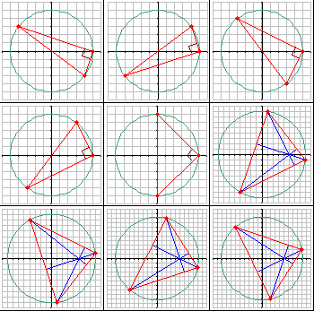 |
The sum of their perimeters, rounded to four decimal places, is 291.0089.
Find all such triangles with a perimeter 105.
Enter as your answer the sum of their perimeters rounded to four decimal places.
2N binary digits can be placed in a circle so that all the N-digit clockwise subsequences are distinct.
For N=3, two such circular arrangements are possible, ignoring rotations:

For the first arrangement, the 3-digit subsequences, in clockwise order, are:
000, 001, 010, 101, 011, 111, 110 and 100.
Each circular arrangement can be encoded as a number by concatenating the binary digits starting with the subsequence of all zeros as the most significant bits and proceeding clockwise. The two arrangements for N=3 are thus represented as 23 and 29:
Calling S(N) the sum of the unique numeric representations, we can see that S(3) = 23 + 29 = 52.
Find S(5).
The divisors of 12 are: 1,2,3,4,6 and 12.
The largest divisor of 12 that does not exceed the square root of 12 is 3.
We shall call the largest divisor of an integer n that does not exceed the square root of n the pseudo square root (PSR) of n.
It can be seen that PSR(3102)=47.
Let p be the product of the primes below 190.
Find PSR(p) mod 1016.
You are given a unique investment opportunity.
Starting with 1 of capital, you can choose a fixed proportion, f, of your capital to bet on a fair coin toss repeatedly for 1000 tosses.
Your return is double your bet for heads and you lose your bet for tails.
For example, if f=1/4, for the first toss you bet 0.25, and if heads comes up you win 0.5 and so then have 1.5. You then bet 0.375 and if the second toss is tails, you have 1.125.
Choosing f to maximize your chances of having at least 1,000,000,000 after 1,000 flips, what is the chance that you become a billionaire?
All computations are assumed to be exact (no rounding), but give your answer rounded to 12 digits behind the decimal point in the form 0.abcdefghijkl.
It can be verified that there are 23 positive integers less than 1000 that are divisible by at least four distinct primes less than 100.
Find how many positive integers less than 1016 are divisible by at least four distinct primes less than 100.
A root or zero of a polynomial P(x) is a solution to the equation P(x) = 0.
Define Pn as the polynomial whose coefficients are the digits of n.
For example, P5703(x) = 5x3 + 7x2 + 3.
We can see that:
- Pn(0) is the last digit of n,
- Pn(1) is the sum of the digits of n,
- Pn(10) is n itself.
Define Z(k) as the number of positive integers, n, not exceeding k for which the polynomial Pn has at least one integer root.
It can be verified that Z(100 000) is 14696.
What is Z(1016)?
A square piece of paper with integer dimensions NN is placed with a corner at the origin and two of its sides along the x- and y-axes. Then, we cut it up respecting the following rules:
- We only make straight cuts between two points lying on different sides of the square, and having integer coordinates.
- Two cuts cannot cross, but several cuts can meet at the same border point.
- Proceed until no more legal cuts can be made.
Counting any reflections or rotations as distinct, we call C(N) the number of ways to cut an NN square. For example, C(1)=2 and C(2)=30 (shown below).

What is C(30) mod 108 ?
For a positive number n, define S(n) as the sum of the integers x, for which 1<x<n and
x31 mod n.
When n=91, there are 8 possible values for x, namely : 9, 16, 22, 29, 53, 74, 79, 81.
Thus, S(91)=9+16+22+29+53+74+79+81=363.
Find S(13082761331670030).
For a positive number n, define C(n) as the number of the integers x, for which 1<x<n and
x31 mod n.
When n=91, there are 8 possible values for x, namely : 9, 16, 22, 29, 53, 74, 79, 81.
Thus, C(91)=8.
Find the sum of the positive numbers n1011 for which C(n)=242.
Consider equations of the form: a2 + b2 = N, 0 a b, a, b and N integer.
For N=65 there are two solutions:
a=1, b=8 and a=4, b=7.
We call S(N) the sum of the values of a of all solutions of a2 + b2 = N, 0 a b, a, b and N integer.
Thus S(65) = 1 + 4 = 5.
Find S(N), for all squarefree N only divisible by primes of the form 4k+1 with 4k+1 < 150.
For each integer p > 1 coprime to 10 there is a positive divisibility multiplier m < p which preserves divisibility by p for the following function on any positive integer, n:
f(n) = (all but the last digit of n) + (the last digit of n) * m
That is, if m is the divisibility multiplier for p, then f(n) is divisible by p if and only if n is divisible by p.
(When n is much larger than p, f(n) will be less than n and repeated application of f provides a multiplicative divisibility test for p.)
For example, the divisibility multiplier for 113 is 34.
f(76275) = 7627 + 5 * 34 = 7797 : 76275 and 7797 are both divisible by 113
f(12345) = 1234 + 5 * 34 = 1404 : 12345 and 1404 are both not divisible by 113
The sum of the divisibility multipliers for the primes that are coprime to 10 and less than 1000 is 39517. What is the sum of the divisibility multipliers for the primes that are coprime to 10 and less than 107?
Let us define a balanced sculpture of order n as follows:
- A polyomino made up of n+1 tiles known as the blocks (n tiles)
and the plinth (remaining tile); - the plinth has its centre at position (x=0, y=0);
- the blocks have y-coordinates greater than zero (so the plinth is the unique lowest tile);
- the centre of mass of all the blocks, combined, has x-coordinate equal to zero.
When counting the sculptures, any arrangements which are simply reflections about the y-axis, are not counted as distinct. For example, the 18 balanced sculptures of order 6 are shown below; note that each pair of mirror images (about the y-axis) is counted as one sculpture:

There are 964 balanced sculptures of order 10 and 360505 of order 15.
How many balanced sculptures are there of order 18?
Consider the triangles with integer sides a, b and c with a b c.
An integer sided triangle (a,b,c) is called primitive if gcd(a,b,c)=1.
How many primitive integer sided triangles exist with a perimeter not exceeding 10 000 000?
A modified Collatz sequence of integers is obtained from a starting value a1 in the following way:
an+1 = an/3 if an is divisible by 3. We shall denote this as a large downward step, "D".
an+1 = (4an + 2)/3 if an divided by 3 gives a remainder of 1. We shall denote this as an upward step, "U".
an+1 = (2an - 1)/3 if an divided by 3 gives a remainder of 2. We shall denote this as a small downward step, "d".
The sequence terminates when some an = 1.
Given any integer, we can list out the sequence of steps.
For instance if a1=231, then the sequence {an}={231,77,51,17,11,7,10,14,9,3,1} corresponds to the steps "DdDddUUdDD".
Of course, there are other sequences that begin with that same sequence "DdDddUUdDD....".
For instance, if a1=1004064, then the sequence is DdDddUUdDDDdUDUUUdDdUUDDDUdDD.
In fact, 1004064 is the smallest possible a1 > 106 that begins with the sequence DdDddUUdDD.
What is the smallest a1 > 1015 that begins with the sequence "UDDDUdddDDUDDddDdDddDDUDDdUUDd"?
Given the values of integers 1 < a1 < a2 <... < an, consider the linear combination
q1a1 + q2a2 + ... + qnan = b, using only integer values qk 0.
Note that for a given set of ak, it may be that not all values of b are possible.
For instance, if a1 = 5 and a2 = 7, there are no q1 0 and q2 0 such that b could be
1, 2, 3, 4, 6, 8, 9, 11, 13, 16, 18 or 23.
In fact, 23 is the largest impossible value of b for a1 = 5 and a2 = 7.
We therefore call f(5, 7) = 23.
Similarly, it can be shown that f(6, 10, 15)=29 and f(14, 22, 77) = 195.
Find f(p*q,p*r,q*r), where p, q and r are prime numbers and p < q < r < 5000.
How many triangles are there with integral sides, at least one integral angle (measured in degrees), and a perimeter that does not exceed 108?
A laborious ant walks randomly on a 5x5 grid. The walk starts from the central square. At each step, the ant moves to an adjacent square at random, without leaving the grid; thus there are 2, 3 or 4 possible moves at each step depending on the ant's position.
At the start of the walk, a seed is placed on each square of the lower row. When the ant isn't carrying a seed and reaches a square of the lower row containing a seed, it will start to carry the seed. The ant will drop the seed on the first empty square of the upper row it eventually reaches.
What's the expected number of steps until all seeds have been dropped in the top row?
Give your answer rounded to 6 decimal places.
You are given a pizza (perfect circle) that has been cut into mn equal pieces and you want to have exactly one topping on each slice.
Let f(m,n) denote the number of ways you can have toppings on the pizza with m different toppings (m2), using each topping on exactly n slices (n1).
Reflections are considered distinct, rotations are not.
Thus, for instance, f(2,1)=1, f(2,2)=f(3,1)=2 and f(3,2)=16.
f(3,2) is shown below:

Find the sum of all f(m,n) such that f(m,n)1015.
For non-negative integers m, n, the Ackermann function A(m, n) is defined as follows:

For example A(1, 0) = 2, A(2, 2) = 7 and A(3, 4) = 125.
Find  A(n, n) and give your answer mod 148.
A(n, n) and give your answer mod 148.
Consider the triangle with sides 6, 8 and 10. It can be seen that the perimeter and the area are both equal to 24.
So the area/perimeter ratio is equal to 1.
Consider also the triangle with sides 13, 14 and 15. The perimeter equals 42 while the area is equal to 84.
So for this triangle the area/perimeter ratio is equal to 2.
Find the sum of the perimeters of all integer sided triangles for which the area/perimeter ratios are equal to positive integers not exceeding 1000.
The 3-digit number 376 in the decimal numbering system is an example of numbers with the special property that its square ends with the same digits: 3762 = 141376. Let's call a number with this property a steady square.
Steady squares can also be observed in other numbering systems. In the base 14 numbering system, the 3-digit number c37 is also a steady square: c372 = aa0c37, and the sum of its digits is c+3+7=18 in the same numbering system. The letters a, b, c and d are used for the 10, 11, 12 and 13 digits respectively, in a manner similar to the hexadecimal numbering system.
For 1 n 9, the sum of the digits of all the n-digit steady squares in the base 14 numbering system is 2d8 (582 decimal). Steady squares with leading 0's are not allowed.
Find the sum of the digits of all the n-digit steady squares in the base 14 numbering system for
1 n 10000 (decimal) and give your answer in the base 14 system using lower case letters where necessary.
Albert chooses a positive integer k, then two real numbers a, b are randomly chosen in the interval [0,1] with uniform distribution.
The square root of the sum (ka+1)2+(kb+1)2 is then computed and rounded to the nearest integer. If the result is equal to k, he scores k points; otherwise he scores nothing.
For example, if k=6, a=0.2 and b=0.85, then (ka+1)2+(kb+1)2=42.05.
The square root of 42.05 is 6.484... and when rounded to the nearest integer, it becomes 6.
This is equal to k, so he scores 6 points.
It can be shown that if he plays 10 turns with k=1, k=2, ..., k=10, the expected value of his total score, rounded to five decimal places, is 10.20914.
If he plays 105 turns with k=1, k=2, k=3, ..., k=105, what is the expected value of his total score, rounded to five decimal places?
Barbara is a mathematician and a basketball player. She has found that the probability of scoring a point when shooting from a distance x is exactly (1- x/q), where q is a real constant greater than 50.
During each practice run, she takes shots from distances x=1, x=2, ..., x=50 and, according to her records, she has precisely a 2% chance to score a total of exactly 20 points.
Find q and give your answer rounded to 10 decimal places.
The quadtree encoding allows us to describe a 2N2N black and white image as a sequence of bits (0 and 1). Those sequences are to be read from left to right like this:
- the first bit deals with the complete 2N2N region;
- "0" denotes a split:
the current 2n2n region is divided into 4 sub-regions of dimension 2n-12n-1,
the next bits contains the description of the top left, top right, bottom left and bottom right sub-regions - in that order; - "10" indicates that the current region contains only black pixels;
- "11" indicates that the current region contains only white pixels.
Consider the following 44 image (colored marks denote places where a split can occur):

This image can be described by several sequences, for example :
"001010101001011111011010101010", of length 30, or
"0100101111101110", of length 16, which is the minimal sequence for this image.
For a positive integer N, define DN as the 2N2N image with the following coloring scheme:
- the pixel with coordinates x=0, y=0 corresponds to the bottom left pixel,
- if (x-2N-1)2+(y-2N-1)222N-2 then the pixel is black,
- otherwise the pixel is white.
What is the length of the minimal sequence describing D24?
For any prime p the number N(p,q) is defined by
N(p,q) = n=0 to q Tn*pn
with Tn generated by the following random number generator:
S0 = 290797
Sn+1 = Sn2 mod 50515093
Tn = Sn mod p
Let Nfac(p,q) be the factorial of N(p,q).
Let NF(p,q) be the number of factors p in Nfac(p,q).
You are given that NF(3,10000) mod 320=624955285.
Find NF(61,107) mod 6110
Let C(x,y) be a circle passing through the points (x,y), (x,y+1), (x+1,y) and (x+1,y+1).
For positive integers m and n, let E(m,n) be a configuration which consists of the mn circles:
{ C(x,y): 0x<m, 0y<n, x and y are integers }
An Eulerian cycle on E(m,n) is a closed path that passes through each arc exactly once.
Many such paths are possible on E(m,n), but we are only interested in those which are not self-crossing:
A non-crossing path just touches itself at lattice points, but it never crosses itself.
The image below shows E(3,3) and an example of an Eulerian non-crossing path.

Let L(m,n) be the number of Eulerian non-crossing paths on E(m,n).
For example, L(1,2)=2, L(2,2)=37 and L(3,3)=104290.
Find L(6,10) mod 1010.
How many integers 0 n < 1018 have the property that the sum of the digits of n equals the sum of digits of 137n?
A prime number p is called a Panaitopol prime if  for some positive integers
for some positive integers
x and y.
Find how many Panaitopol primes are less than 51015.
We shall define a pythagorean polygon to be a convex polygon with the following properties:
- there are at least three vertices,
- no three vertices are aligned,
- each vertex has integer coordinates,
- each edge has integer length.
For a given integer n, define P(n) as the number of distinct pythagorean polygons for which the perimeter is n.
Pythagorean polygons should be considered distinct as long as none is a translation of another.
You are given that P(4)=1, P(30)=3655 and P(60)=891045.
Find P(120).
An even positive integer N will be called admissible, if it is a power
of 2 or its distinct prime factors are consecutive primes.
The first twelve admissible numbers are 2,4,6,8,12,16,18,24,30,32,36,48.
If N is admissible, the smallest integer M > 1 such that N+M is prime, will be called the pseudo-Fortunate number for N.
For example, N=630 is admissible since it is even and its distinct prime factors are the consecutive primes 2,3,5 and 7.
The next prime number after 631 is 641; hence, the pseudo-Fortunate number for 630 is M=11.
It can also be seen that the pseudo-Fortunate number for 16 is 3.
Find the sum of all distinct pseudo-Fortunate numbers for admissible numbers N less than 109.
For a positive integer k, define d(k) as the sum of the digits of k in its usual decimal representation. Thus d(42) = 4+2 = 6.
For a positive integer n, define S(n) as the number of positive integers k < 10n with the following properties :
- k is divisible by 23 and
- d(k) = 23.
Find S(1112) and give your answer mod 109.
We call the convex area enclosed by two circles a lenticular hole if:
- The centres of both circles are on lattice points.
- The two circles intersect at two distinct lattice points.
- The interior of the convex area enclosed by both circles does not contain any lattice points.
Consider the circles:
C0: x2+y2=25
C1: (x+4)2+(y-4)2=1
C2: (x-12)2+(y-4)2=65
The circles C0, C1 and C2 are drawn in the picture below.
C0 and C1 form a lenticular hole, as well as C0 and C2.
We call an ordered pair of positive real numbers (r1, r2) a lenticular pair if there exist two circles with radii r1 and r2 that form a lenticular hole. We can verify that (1, 5) and (5, 65) are the lenticular pairs of the example above.
Let L(N) be the number of distinct lenticular pairs (r1, r2) for which 0 < r1 r2 N.
We can verify that L(10) = 30 and L(100) = 3442.
Find L(100 000).
Given is an integer sided triangle ABC with BC AC AB.
k is the angular bisector of angle ACB.
m is the tangent at C to the circumscribed circle of ABC.
n is a line parallel to m through B.
The intersection of n and k is called E.

How many triangles ABC with a perimeter not exceeding 100 000 exist such that BE has integral length?
Each new term in the Fibonacci sequence is generated by adding the previous two terms.
Starting with 1 and 2, the first 10 terms will be: 1, 2, 3, 5, 8, 13, 21, 34, 55, 89.
Every positive integer can be uniquely written as a sum of
nonconsecutive terms of the Fibonacci sequence. For example, 100 = 3 + 8
+ 89.
Such a sum is called the Zeckendorf representation of the number.
For any integer n>0, let z(n) be the number of terms in the Zeckendorf representation of n.
Thus, z(5)=1, z(14)=2, z(100)=3 etc.
Also, for 0<n<106, z(n)=7894453.
Find z(n) for 0<n<1017.
Larry and Robin play a memory game involving of a sequence of random numbers between 1 and 10, inclusive, that are called out one at a time. Each player can remember up to 5 previous numbers. When the called number is in a player's memory, that player is awarded a point. If it's not, the player adds the called number to his memory, removing another number if his memory is full.
Both players start with empty memories. Both players always add new
missed numbers to their memory but use a different strategy in deciding
which number to remove:
Larry's strategy is to remove the number that hasn't been called in the longest time.
Robin's strategy is to remove the number that's been in the memory the longest time.
Example game:
| Turn | Called number |
Larry's memory |
Larry's score |
Robin's memory |
Robin's score |
|---|---|---|---|---|---|
| 1 | 1 | 1 | 0 | 1 | 0 |
| 2 | 2 | 1,2 | 0 | 1,2 | 0 |
| 3 | 4 | 1,2,4 | 0 | 1,2,4 | 0 |
| 4 | 6 | 1,2,4,6 | 0 | 1,2,4,6 | 0 |
| 5 | 1 | 1,2,4,6 | 1 | 1,2,4,6 | 1 |
| 6 | 8 | 1,2,4,6,8 | 1 | 1,2,4,6,8 | 1 |
| 7 | 10 | 1,4,6,8,10 | 1 | 2,4,6,8,10 | 1 |
| 8 | 2 | 1,2,6,8,10 | 1 | 2,4,6,8,10 | 2 |
| 9 | 4 | 1,2,4,8,10 | 1 | 2,4,6,8,10 | 3 |
| 10 | 1 | 1,2,4,8,10 | 2 | 1,4,6,8,10 | 3 |
Denoting Larry's score by L and Robin's score by R, what is the expected value of |L-R| after 50 turns? Give your answer rounded to eight decimal places using the format x.xxxxxxxx .
Four points with integer coordinates are selected:
A(a, 0), B(b, 0), C(0, c) and D(0, d),
with 0 < a < b and 0 < c < d.
Point P, also with integer coordinates, is chosen on the line AC so that the three triangles ABP, CDP and BDP are all similar.
It is easy to prove that the three triangles can be similar, only if a=c.
So, given that a=c, we are looking for triplets (a,b,d) such that at least one point P (with integer coordinates) exists on AC, making the three triangles ABP, CDP and BDP all similar.
For example, if (a,b,d)=(2,3,4), it can be easily verified that point P(1,1) satisfies the above condition. Note that the triplets (2,3,4) and (2,4,3) are considered as distinct, although point P(1,1) is common for both.
If b+d < 100, there are 92 distinct triplets (a,b,d) such that point P exists.
If b+d < 100 000, there are 320471 distinct triplets (a,b,d) such that point P exists.
If b+d < 100 000 000, how many distinct triplets (a,b,d) are there such that point P exists?
In
a very simplified form, we can consider proteins as strings consisting
of hydrophobic (H) and polar (P) elements, e.g. HHPPHHHPHHPH.
For this problem, the orientation of a protein is important; e.g. HPP is considered distinct from PPH. Thus, there are 2n distinct proteins consisting of n elements.
When one encounters these strings in nature, they are always folded
in such a way that the number of H-H contact points is as large as
possible, since this is energetically advantageous.
As a result, the H-elements tend to accumulate in the inner part, with the P-elements on the outside.
Natural proteins are folded in three dimensions of course, but we will only consider protein folding in two dimensions.
The figure below shows two possible ways that our example protein could be folded (H-H contact points are shown with red dots).

The folding on the left has only six H-H contact points, thus it would never occur naturally.
On the other hand, the folding on the right has nine H-H contact points, which is optimal for this string.
Assuming that H and P elements are equally likely to occur in any position along the string, the average number of H-H contact points in an optimal folding of a random protein string of length 8 turns out to be 850 / 28=3.3203125.
What is the average number of H-H contact points in an optimal folding of a random protein string of length 15?
Give your answer using as many decimal places as necessary for an exact result.
Nim is a game played with heaps of stones, where two players take it in turn to remove any number of stones from any heap until no stones remain.
We'll consider the three-heap normal-play version of Nim, which works as follows:
- At the start of the game there are three heaps of stones.
- On his turn the player removes any positive number of stones from any single heap.
- The first player unable to move (because no stones remain) loses.
If (n1,n2,n3) indicates a Nim position consisting of heaps of size n1, n2 and n3 then there is a simple function X(n1,n2,n3) that you may look up or attempt to deduce for yourself that returns:
- zero if, with perfect strategy, the player about to move will eventually lose; or
- non-zero if, with perfect strategy, the player about to move will eventually win.
For example X(1,2,3)
= 0 because, no matter what the current player does, his opponent can
respond with a move that leaves two heaps of equal size, at which point
every move by the current player can be mirrored by his opponent until
no stones remain; so the current player loses. To illustrate:
- current player moves to (1,2,1)
- opponent moves to (1,0,1)
- current player moves to (0,0,1)
- opponent moves to (0,0,0), and so wins.
For how many positive integers n230 does X(n,2n,3n) = 0 ?
A positive integer n is powerful if p2 is a divisor of n for every prime factor p in n.
A positive integer n is a perfect power if n can be expressed as a power of another positive integer.
A positive integer n is an Achilles number if n is powerful but not a perfect power. For example, 864 and 1800 are Achilles numbers: 864 = 2533 and 1800 = 233252.
We shall call a positive integer S a Strong Achilles number if both S and (S) are Achilles numbers.1
For example, 864 is a Strong Achilles number: (864) = 288 = 2532. However, 1800 isn't a Strong Achilles number because: (1800) = 480 = 253151.
There are 7 Strong Achilles numbers below 104 and 656 below 108.
How many Strong Achilles numbers are there below 1018?
1 denotes Euler's totient function.
For a positive integer n, define f(n) as the least positive multiple of n that, written in base 10, uses only digits 2.
Thus f(2)=2, f(3)=12, f(7)=21, f(42)=210, f(89)=1121222.
Also, .
Find 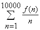.
For any positive integer n the function next_prime(n) returns the smallest prime p
such that p>n.
The sequence a(n) is defined by:
a(1)=next_prime(1014) and a(n)=next_prime(a(n-1)) for n>1.
The fibonacci sequence f(n) is defined by: f(0)=0, f(1)=1 and f(n)=f(n-1)+f(n-2) for n>1.
The sequence b(n) is defined as f(a(n)).
Find b(n) for 1n100 000. Give your answer mod 1234567891011.
Let's call S the (infinite) string that is made by concatenating the
consecutive positive integers (starting from 1) written down in base
10.
Thus, S = 1234567891011121314151617181920212223242...
It's easy to see that any number will show up an infinite number of times in S.
Let's call f(n) the starting position of the nth occurrence of n in S.
For example, f(1)=1, f(5)=81, f(12)=271 and f(7780)=111111365.
Find f(3k) for 1k13.
The following game is a classic example of Combinatorial Game Theory:
Two players start with a strip of n white squares and they take alternate turns.
On each turn, a player picks two contiguous white squares and paints them black.
The first player who cannot make a move loses.
- If n = 1, there are no valid moves, so the first player loses automatically.
- If n = 2, there is only one valid move, after which the second player loses.
- If n = 3, there are two valid moves, but both leave a situation where the second player loses.
- If n = 4, there are three valid moves for the first player; she can win the game by painting the two middle squares.
- If n = 5, there are four valid moves for the first player (shown below in red); but no matter what she does, the second player (blue) wins.

So, for 1 n 5, there are 3 values of n for which the first player can force a win.
Similarly, for 1 n 50, there are 40 values of n for which the first player can force a win.
For 1 n 1 000 000, how many values of n are there for which the first player can force a win?
k defects are randomly distributed amongst n integrated-circuit chips produced by a factory (any number of defects may be found on a chip and each defect is independent of the other defects).
Let p(k,n) represent the probability that there is a chip with at least 3 defects.
For instance p(3,7) 0.0204081633.
Find p(20 000, 1 000 000) and give your answer rounded to 10 decimal places in the form 0.abcdefghij
A program written in the programming language Fractran consists of a list of fractions.
The internal state of the Fractran Virtual Machine is a positive integer, which is initially set to a seed value. Each iteration of a Fractran program multiplies the state integer by the first fraction in the list which will leave it an integer.
For example, one of the Fractran programs that John Horton Conway
wrote for prime-generation consists of the following 14 fractions:
|
, |
|
, |
|
, |
|
, |
|
, |
|
, |
|
, |
|
, |
|
, |
|
, |
|
, |
|
, |
|
, |
|
. |
Starting with the seed integer 2, successive iterations of the program produce the sequence:
15, 825, 725, 1925, 2275, 425, ..., 68, 4, 30, ..., 136, 8, 60, ..., 544, 32, 240, ...
The powers of 2 that appear in this sequence are 22, 23, 25, ...
It can be shown that all the powers of 2 in this sequence have prime exponents and that all the primes appear as exponents of powers of 2, in proper order!
If someone uses the above Fractran program to solve Project Euler Problem 7 (find the 10001st prime), how many iterations would be needed until the program produces 210001st prime ?
In the classic "Crossing Ladders" problem, we are given the lengths x and y of two ladders resting on the opposite walls of a narrow, level street. We are also given the height h above the street where the two ladders cross and we are asked to find the width of the street (w).

Here, we are only concerned with instances where all four variables are positive integers.
For example, if x = 70, y = 119 and h = 30, we can calculate that w = 56.
In fact, for integer values x, y, h and 0 < x < y < 200, there are only five triplets (x,y,h) producing integer solutions for w:
(70, 119, 30), (74, 182, 21), (87, 105, 35), (100, 116, 35) and (119, 175, 40).
For integer values x, y, h and 0 < x < y < 1 000 000, how many triplets (x,y,h) produce integer solutions for w?
Alice and Bob play the game Nim Square.
Nim Square is just like ordinary three-heap normal play Nim, but the
players may only remove a square number of stones from a heap.
The number of stones in the three heaps is represented by the ordered triple (a,b,c).
If 0abc29 then the number of losing positions for the next player is 1160.
Find the number of losing positions for the next player if 0abc100 000.
ABCD is a convex, integer sided quadrilateral with 1 AB < BC < CD < AD.
BD has integer length. O is the midpoint of BD. AO has integer length.
We'll call ABCD a biclinic integral quadrilateral if AO = CO BO = DO.
For example, the following quadrilateral is a biclinic integral quadrilateral:
AB = 19, BC = 29, CD = 37, AD = 43, BD = 48 and AO = CO = 23.
Let B(N) be the number of distinct biclinic integral quadrilaterals ABCD that satisfy AB2+BC2+CD2+AD2 N.
We can verify that B(10 000) = 49 and B(1 000 000) = 38239.
Find B(10 000 000 000).
- A Sierpiski graph of order-1 (S1) is an equilateral triangle.
- Sn+1 is obtained from Sn by positioning three copies of Sn so that every pair of copies has one common corner.

Let C(n) be the number of cycles that pass exactly once through all the vertices of Sn.
For example, C(3) = 8 because eight such cycles can be drawn on S3, as shown below:

It can also be verified that :
C(1) = C(2) = 1
C(5) = 71328803586048
C(10 000) mod 108 = 37652224
C(10 000) mod 138 = 617720485
Find C(C(C(10 000))) mod 138.
In a sliding game a counter may slide horizontally or vertically into an empty space. The objective of the game is to move the red counter from the top left corner of a grid to the bottom right corner; the space always starts in the bottom right corner. For example, the following sequence of pictures show how the game can be completed in five moves on a 2 by 2 grid.

Let S(m,n) represent the minimum number of moves to complete the game on an m by n grid. For example, it can be verified that S(5,4) = 25.

There are exactly 5482 grids for which S(m,n) = p2, where p < 100 is prime.
How many grids does S(m,n) = p2, where p < 106 is prime?
The moon has been opened up, and land can be obtained for free, but there is a catch. You have to build a wall around the land that you stake out, and building a wall on the moon is expensive. Every country has been allotted a 500 m by 500 m square area, but they will possess only that area which they wall in. 251001 posts have been placed in a rectangular grid with 1 meter spacing. The wall must be a closed series of straight lines, each line running from post to post.
The bigger countries of course have built a 2000 m wall enclosing the entire 250 000 m2 area. The Duchy of Grand Fenwick, has a tighter budget, and has asked you (their Royal Programmer) to compute what shape would get best maximum enclosed-area/wall-length ratio.
You have done some preliminary calculations on a sheet of paper.
For a 2000 meter wall enclosing the 250 000 m2 area the
enclosed-area/wall-length ratio is 125.
Although not allowed , but to get an idea if this is anything better:
if you place a circle inside the square area touching the four sides the
area will be equal to *2502 m2 and the perimeter will be *500 m, so the enclosed-area/wall-length ratio will also be 125.
However, if you cut off from the square four triangles with sides 75 m, 75 m and 752 m the total area becomes 238750 m2 and the perimeter becomes 1400+3002 m. So this gives an enclosed-area/wall-length ratio of 130.87, which is significantly better.

Find the maximum enclosed-area/wall-length ratio.
Give your answer rounded to 8 places behind the decimal point in the form abc.defghijk.

Sam and Max are asked to transform two digital clocks into two "digital root" clocks.
A digital root clock is a digital clock that calculates digital roots step by step.
When a clock is fed a number, it will show it and then it will start
the calculation, showing all the intermediate values until it gets to
the result.
For example, if the clock is fed the number 137, it will show: "137" "11" "2" and then it will go black, waiting for the next number.
Every digital number consists of some light segments: three
horizontal (top, middle, bottom) and four vertical (top-left, top-right,
bottom-left, bottom-right).
Number "1" is made of vertical top-right and bottom-right, number "4" is made by middle horizontal and vertical top-left, top-right and bottom-right. Number "8" lights them all.
The clocks consume energy only when segments are turned on/off.
To turn on a "2" will cost 5 transitions, while a "7" will cost only 4 transitions.
Sam and Max built two different clocks.
Sam's clock is fed e.g. number 137: the clock shows "137", then the panel is turned off, then the next number ("11") is turned on, then the panel is turned off again and finally the last number ("2") is turned on and, after some time, off.
For the example, with number 137, Sam's clock requires:
| "137" | : | (2 + 5 + 4) 2 = 22 transitions ("137" on/off). |
| "11" | : | (2 + 2) 2 = 8 transitions ("11" on/off). |
| "2" | : | (5) 2 = 10 transitions ("2" on/off). |
Max's clock works differently. Instead of turning off the whole
panel, it is smart enough to turn off only those segments that won't be
needed for the next number.
For number 137, Max's clock requires:
| "137" |
: |
2 + 5 + 4 = 11 transitions ("137" on) 7 transitions (to turn off the segments that are not needed for number "11"). |
| "11" |
: |
0 transitions (number "11" is already turned on correctly) 3 transitions (to turn off the first "1" and the bottom part of the second "1"; the top part is common with number "2"). |
| "2" |
: |
4 transitions (to turn on the remaining segments in order to get a "2") 5 transitions (to turn off number "2"). |
Of course, Max's clock consumes less power than Sam's one.
The two clocks are fed all the prime numbers between A = 107 and B = 2107.
Find the difference between the total number of transitions needed by Sam's clock and that needed by Max's one.
Let p = p1 p2 p3 ... be an infinite sequence of random digits, selected from {0,1,2,3,4,5,6,7,8,9} with equal probability.
It can be seen that p corresponds to the real number 0.p1 p2 p3 ....
It can also be seen that choosing a random real number from the interval
[0,1) is equivalent to choosing an infinite sequence of random digits
selected from {0,1,2,3,4,5,6,7,8,9} with equal probability.
For any positive integer n with d decimal digits, let k be the smallest index such that
pk, pk+1, ...pk+d-1 are the decimal digits of n, in the same order.
Also, let g(n) be the expected value of k; it can be proven that g(n) is always finite and, interestingly, always an integer number.
For example, if n = 535, then
for p = 31415926535897...., we get k = 9
for p = 355287143650049560000490848764084685354..., we get k = 36
etc and we find that g(535) = 1008.
Given that  , find
, find
 represents the floor function.
represents the floor function.
A firecracker explodes at a height of 100 m above level ground. It breaks into a large number of very small fragments, which move in every direction; all of them have the same initial velocity of 20 m/s.
We assume that the fragments move without air resistance, in a uniform gravitational field with g=9.81 m/s2.
Find the volume (in m3) of the region through which the fragments move before reaching the ground. Give your answer rounded to four decimal places.
Consider the real number 2+3.
When we calculate the even powers of 2+3
we get:
(2+3)2 = 9.898979485566356...
(2+3)4 = 97.98979485566356...
(2+3)6 = 969.998969071069263...
(2+3)8 = 9601.99989585502907...
(2+3)10 = 95049.999989479221...
(2+3)12 = 940897.9999989371855...
(2+3)14 = 9313929.99999989263...
(2+3)16 = 92198401.99999998915...
It looks like that the number of consecutive nines at the beginning of the fractional part of these powers is non-decreasing.
In fact it can be proven that the fractional part of (2+3)2n approaches 1 for large n.
Consider all real numbers of the form p+q with p and q positive integers and p<q, such that the fractional part of (p+q)2n approaches 1 for large n.
Let C(p,q,n) be the number of consecutive nines at the beginning of the fractional part of
(p+q)2n.
Let N(p,q) be the minimal value of n such that C(p,q,n) 2011.
Find N(p,q) for p+q 2011.
Let x1, x2,..., xn be a sequence of length n such that:
- x1 = 2
- for all 1 < i n : xi-1 < xi
- for all i and j with 1 i, j n : (xi) j < (xj + 1)i
There are only five such sequences of length 2, namely:
{2,4}, {2,5}, {2,6}, {2,7} and {2,8}.
There are 293 such sequences of length 5; three examples are given below:
{2,5,11,25,55}, {2,6,14,36,88}, {2,8,22,64,181}.
Let t(n) denote the number of such sequences of length n.
You are given that t(10) = 86195 and t(20) = 5227991891.
Find t(1010) and give your answer modulo 109.
Let N(i) be the smallest integer n such that n! is divisible by (i!)1234567890
Let S(u)=N(i) for 10 i u.
S(1000)=614538266565663.
Find S(1 000 000) mod 1018.
A horizontal row comprising of 2n + 1 squares has n red counters placed at one end and n blue counters at the other end, being separated by a single empty square in the centre. For example, when n = 3.

A counter can move from one square to the next (slide) or can jump over another counter (hop) as long as the square next to that counter is unoccupied.

Let M(n) represent the minimum number of moves/actions to completely reverse the positions of the coloured counters; that is, move all the red counters to the right and all the blue counters to the left.
It can be verified M(3) = 15, which also happens to be a triangle number.
If we create a sequence based on the values of n for which M(n) is a triangle number then the first five terms would be:
1, 3, 10, 22, and 63, and their sum would be 99.
Find the sum of the first forty terms of this sequence.
Let T(m, n) be the number of the binomial coefficients iCn that are divisible by 10 for n i < m(i, m and n are positive integers).
You are given that T(109, 107-10) = 989697000.
Find T(1018, 1012-10).
Let y0, y1, y2,... be a sequence of random unsigned 32 bit integers
(i.e. 0 yi < 232, every value equally likely).
For the sequence xi the following recursion is given:
- x0 = 0 and
- xi = xi-1| yi-1, for i > 0. ( | is the bitwise-OR operator)
It can be seen that eventually there will be an index N such that xi = 232 -1 (a bit-pattern of all ones) for all i N.
Find the expected value of N.
Give your answer rounded to 10 digits after the decimal point.
Let f(n) represent the number of ways one can fill a 33n tower with blocks of 211.
You're
allowed to rotate the blocks in any way you like; however, rotations,
reflections etc of the tower itself are counted as distinct.
For example (with q = 100000007) :
f(2) = 229,
f(4) = 117805,
f(10) mod q = 96149360,
f(103) mod q = 24806056,
f(106) mod q = 30808124.
Find f(1010000) mod 100000007.
A game is played with two piles of stones and two players. At her turn, a player removes a number of stones from the larger pile. The number of stones she removes must be a positive multiple of the number of stones in the smaller pile.
E.g., let the ordered pair(6,14) describe a configuration with 6 stones in the smaller pile and 14 stones in the larger pile, then the first player can remove 6 or 12 stones from the larger pile.
The player taking all the stones from a pile wins the game.
A winning configuration is one where the first player can force a win. For example, (1,5), (2,6) and (3,12) are winning configurations because the first player can immediately remove all stones in the second pile.
A losing configuration is one where the second player can force a win, no matter what the first player does. For example, (2,3) and (3,4) are losing configurations: any legal move leaves a winning configuration for the second player.
Define S(N) as the sum of (xi+yi) for all losing configurations (xi,yi), 0 < xi < yi N. We can verify that S(10) = 211 and S(104) = 230312207313.
Find S(1016) mod 710.
Let an be a sequence recursively defined by:  .
.
So the first 10 elements of an are: 1,1,0,3,0,3,5,4,1,9.
Let f(N,M) represent the number of pairs (p,q) such that:

It can be seen that f(10,10)=4 with the pairs (3,3), (5,5), (7,9) and (9,10).
You are also given that f(104,103)=97158.
Find f(1012,106).
A series of three rooms are connected to each other by automatic doors.

Each door is operated by a security card. Once you enter a room the door automatically closes and that security card cannot be used again. A machine at the start will dispense an unlimited number of cards, but each room (including the starting room) contains scanners and if they detect that you are holding more than three security cards or if they detect an unattended security card on the floor, then all the doors will become permanently locked. However, each room contains a box where you may safely store any number of security cards for use at a later stage.
If you simply tried to travel through the rooms one at a time then as you entered room 3 you would have used all three cards and would be trapped in that room forever!
However, if you make use of the storage boxes, then escape is possible. For example, you could enter room 1 using your first card, place one card in the storage box, and use your third card to exit the room back to the start. Then after collecting three more cards from the dispensing machine you could use one to enter room 1 and collect the card you placed in the box a moment ago. You now have three cards again and will be able to travel through the remaining three doors. This method allows you to travel through all three rooms using six security cards in total.
It is possible to travel through six rooms using a total of 123 security cards while carrying a maximum of 3 cards.
Let C be the maximum number of cards which can be carried at any time.
Let R be the number of rooms to travel through.
Let M(C,R) be the minimum number of cards required from the dispensing machine to travel through R rooms carrying up to a maximum of C cards at any time.
For example, M(3,6)=123 and M(4,6)=23.
And, M(C,6)=146 for 3 C 4.
You are given that M(C,10)=10382 for 3 C 10.
Find M(C,30) for 3 C 40.
We are trying to find a hidden number selected from the set of integers {1, 2, ..., n} by asking questions.
Each number (question) we ask, has a cost equal to the number asked and we get one of three possible answers:
- "Your guess is lower than the hidden number", or
- "Yes, that's it!", or
- "Your guess is higher than the hidden number".
Given the value of n, an optimal strategy minimizes the total cost (i.e. the sum of all the questions asked) for the worst possible case. E.g.
If n=3, the best we can do is obviously to ask the number "2". The answer will immediately lead us to find the hidden number (at a total cost = 2).
If n=8, we might decide to use a "binary search" type of strategy: Our first question would be "4" and if the hidden number is higher than 4 we will need one or two additional questions.
Let our second question be "6". If the hidden number is still higher than 6, we will need a third question in order to discriminate between 7 and 8.
Thus, our third question will be "7" and the total cost for this worst-case scenario will be 4+6+7=17.
We can improve considerably the worst-case cost for n=8, by asking "5" as our first question.
If we are told that the hidden number is higher than 5, our second question will be "7", then we'll know for certain what the hidden number is (for a total cost of 5+7=12).
If we are told that the hidden number is lower than 5, our second question will be "3" and if the hidden number is lower than 3 our third question will be "1", giving a total cost of 5+3+1=9.
Since 12>9, the worst-case cost for this strategy is 12.
That's better than what we achieved previously with the "binary search"
strategy; it is also better than or equal to any other strategy.
So, in fact, we have just described an optimal strategy for n=8.
Let C(n) be the worst-case cost achieved by an optimal strategy for n, as described above.
Thus C(1) = 0, C(2) = 1, C(3) = 2 and C(8) = 12.
Similarly, C(100) = 400 and C(n) = 17575.
Find  C(n).
C(n).
Susan has a prime frog.
Her frog is jumping around over 500 squares numbered 1 to 500.
He can only jump one square to the left or to the right, with equal probability, and he cannot jump outside the range [1;500].
(if it lands at either end, it automatically jumps to the only available square on the next move.)
When he is on a square with a prime number on it, he croaks 'P' (PRIME)
with probability 2/3 or 'N' (NOT PRIME) with probability 1/3 just before
jumping to the next square.
When he is on a square with a number on it that is not a prime he croaks
'P' with probability 1/3 or 'N' with probability 2/3 just before
jumping to the next square.
Given that the frog's starting position is random with the same probability for every square, and given that she listens to his first 15 croaks, what is the probability that she hears the sequence PPPPNNPPPNPPNPN?
Give your answer as a fraction p/q in reduced form.
For example,
| a(0) = |
|
+ |
|
+ |
|
+ ... = e 1 |
| a(1) = |
|
+ |
|
+ |
|
+ ... = 2e 3 |
| a(2) = |
|
+ |
|
+ |
|
+ ... = |
|
e 6 |
| It can be shown that a(n) is of the form |
|
for integers A(n) and B(n). |
| For example a(10) = |
|
. |
Find A(109) + B(109) and give your answer mod 77 777 777.
NN disks are placed on a square game board. Each disk has a black side and white side.
At each turn, you may choose a disk and flip all the disks in the same row and the same column as this disk: thus 2N-1 disks are flipped. The game ends when all disks show their white side. The following example shows a game on a 55 board.

It can be proven that 3 is the minimal number of turns to finish this game.
The bottom left disk on the NN board has coordinates (0,0);
the bottom right disk has coordinates (N-1,0) and the top left disk has coordinates (0,N-1).
Let CN be the following configuration of a board with NN disks:
A disk at (x,y) satisfying  , shows its black side; otherwise, it shows its white side. C5 is shown above.
, shows its black side; otherwise, it shows its white side. C5 is shown above.
Let T(N) be the minimal number of turns to finish a game starting from configuration CN or 0 if configuration CN is unsolvable.
We have shown that T(5)=3. You are also given that T(10)=29 and T(1 000)=395253.
Find  .
.
A spherical triangle is a figure formed on the surface of a sphere by three great circular arcs intersecting pairwise in three vertices.

Let C(r) be the sphere with the centre (0,0,0) and radius r.
Let Z(r) be the set of points on the surface of C(r) with integer coordinates.
Let T(r) be the set of spherical triangles with vertices in Z(r).
Degenerate spherical triangles, formed by three points on the same great arc, are not included in T(r).
Let A(r) be the area of the smallest spherical triangle in T(r).
For example A(14) is 3.294040 rounded to six decimal places.
Find 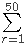 A(r). Give your answer rounded to six decimal places.
All positive integers can be partitioned in such a way that each and every term of the partition can be expressed as 2ix3j, where i,j 0.
Let's consider only those such partitions where none of the terms can divide any of the other terms.
For example, the partition of 17 = 2 + 6 + 9 = (21x30 + 21x31 + 20x32) would not be valid since 2 can divide 6. Neither would the partition 17 = 16 + 1 = (24x30 + 20x30) since 1 can divide 16. The only valid partition of 17 would be 8 + 9 = (23x30 + 20x32).
Many integers have more than one valid partition, the first being 11 having the following two partitions.
11 = 2 + 9 = (21x30 + 20x32)
11 = 8 + 3 = (23x30 + 20x31)
Let's define P(n) as the number of valid partitions of n. For example, P(11) = 2.
Let's consider only the prime integers q which would have a single valid partition such as P(17).
The sum of the primes q <100 such that P(q)=1 equals 233.
Find the sum of the primes q <1000000 such that P(q)=1.
In Plato's heaven, there exist an infinite number of bowls in a straight line.
Each bowl either contains some or none of a finite number of beans.
A child plays a game, which allows only one kind of move: removing two
beans from any bowl, and putting one in each of the two adjacent bowls.
The game ends when each bowl contains either one or no beans.
For example, consider two adjacent bowls containing 2 and 3 beans respectively, all other bowls being empty. The following eight moves will finish the game:

You are given the following sequences:
| t0 = 123456. |
| ti = |  |
| |||||||||||||||
| where x is the floor function | |||||||||||||||||
and  is the bitwise XOR operator. is the bitwise XOR operator.
|
| bi = ( ti mod 211) + 1. |
The first two terms of the last sequence are b1 = 289 and b2 = 145.
If we start with b1 and b2 beans in two adjacent bowls, 3419100 moves would be required to finish the game.
Consider now 1500 adjacent bowls containing b1, b2,..., b1500 beans respectively, all other bowls being empty. Find how many moves it takes before the game ends.
Whenever Peter feels bored, he places some bowls, containing one bean each, in a circle. After this, he takes all the beans out of a certain bowl and drops them one by one in the bowls going clockwise. He repeats this, starting from the bowl he dropped the last bean in, until the initial situation appears again. For example with 5 bowls he acts as follows:

So with 5 bowls it takes Peter 15 moves to return to the initial situation.
Let M(x) represent the number of moves required to return to the initial situation, starting with x bowls. Thus, M(5) = 15. It can also be verified that M(100) = 10920.
Find  M(2k+1). Give your answer modulo 79.
M(2k+1). Give your answer modulo 79.
A
train is used to transport four carriages in the order: ABCD. However,
sometimes when the train arrives to collect the carriages they are not
in the correct order.
To rearrange the carriages they are all shunted on to a large rotating
turntable. After the carriages are uncoupled at a specific point the
train moves off the turntable pulling the carriages still attached with
it. The remaining carriages are rotated 180 degrees. All of the
carriages are then rejoined and this process is repeated as often as
necessary in order to obtain the least number of uses of the turntable.
Some arrangements, such as ADCB, can be solved easily: the carriages are
separated between A and D, and after DCB are rotated the correct order
has been achieved.
However, Simple Simon, the train driver, is not known for his efficiency, so he always solves the problem by initially getting carriage A in the correct place, then carriage B, and so on.
Using four carriages, the worst possible arrangements for Simon, which we shall call maximix arrangements, are DACB and DBAC; each requiring him five rotations (although, using the most efficient approach, they could be solved using just three rotations). The process he uses for DACB is shown below.

It can be verified that there are 24 maximix arrangements for six carriages, of which the tenth lexicographic maximix arrangement is DFAECB.
Find the 2011th lexicographic maximix arrangement for eleven carriages.
Let {a1, a2,..., an} be an integer sequence of length n such that:
- a1 = 6
- for all 1 i < n : (ai) < (ai+1) < ai < ai+11
Let S(N) be the number of such sequences with an N.
For example, S(10) = 4: {6}, {6, 8}, {6, 8, 9} and {6, 10}.
We can verify that S(100) = 482073668 and S(10 000) mod 108 = 73808307.
Find S(20 000 000) mod 108.
1 denotes Euler's totient function.
A rectangular sheet of grid paper with integer dimensions w h is given. Its grid spacing is 1.
When we cut the sheet along the grid lines into two pieces and rearrange
those pieces without overlap, we can make new rectangles with different
dimensions.
For example, from a sheet with dimensions 9 4 , we can make rectangles with dimensions 18 2, 12 3 and 6 6 by cutting and rearranging as below:

Similarly, from a sheet with dimensions 9 8 , we can make rectangles with dimensions 18 4 and 12 6 .
For a pair w and h, let F(w,h) be the number of distinct rectangles that can be made from a sheet with dimensions w h .
For example, F(2,1) = 0, F(2,2) = 1, F(9,4) = 3 and F(9,8) = 2.
Note that rectangles congruent to the initial one are not counted in F(w,h).
Note also that rectangles with dimensions w h and dimensions h w are not considered distinct.
For an integer N, let G(N) be the sum of F(w,h) for all pairs w and h which satisfy 0 < h w N.
We can verify that G(10) = 55, G(103) = 971745 and G(105) = 9992617687.
Find G(1012). Give your answer modulo 108.
"And he came towards a valley, through which ran a river; and the
borders of the valley were wooded, and on each side of the river were
level meadows. And on one side of the river he saw a flock of white
sheep, and on the other a flock of black sheep. And whenever one of the
white sheep bleated, one of the black sheep would cross over and become
white; and when one of the black sheep bleated, one of the white sheep
would cross over and become black."
en.wikisource.org
Initially each flock consists of n sheep. Each sheep (regardless of colour) is equally likely to be the next sheep to bleat. After a sheep has bleated and a sheep from the other flock has crossed over, Peredur may remove a number of white sheep in order to maximize the expected final number of black sheep. Let E(n) be the expected final number of black sheep if Peredur uses an optimal strategy.
You are given that E(5) = 6.871346 rounded to 6 places behind the decimal point.
Find E(10 000) and give your answer rounded to 6 places behind the decimal point.
For fixed integers a, b, c, define the crazy function F(n) as follows:
F(n) = n - c for all n > b
F(n) = F(a + F(a + F(a + F(a + n)))) for all n b.
Also, define S(a, b, c) = .
For example, if a = 50, b = 2000 and c = 40, then F(0) = 3240 and F(2000) = 2040.
Also, S(50, 2000, 40) = 5204240.
Find the last 9 digits of S(217, 721, 127).
The Golomb's self-describing sequence {G(n)} is the only nondecreasing sequence of natural numbers such that n appears exactly G(n) times in the sequence. The values of G(n) for the first few n are
| n | 1 | 2 | 3 | 4 | 5 | 6 | 7 | 8 | 9 | 10 | 11 | 12 | 13 | 14 | 15 | |
| G(n) | 1 | 2 | 2 | 3 | 3 | 4 | 4 | 4 | 5 | 5 | 5 | 6 | 6 | 6 | 6 |
You are given that G(103) = 86, G(106) = 6137.
You are also given that G(n3) = 153506976 for 1 n < 103.
Find G(n3) for 1 n < 106.
Consider the number 50.
502 = 2500 = 22 54, so (2500) = 2 4 53 = 8 53 = 23 53. 1
So 2500 is a square and (2500) is a cube.
Find the sum of all numbers n, 1 < n < 1010 such that (n2) is a cube.
1 denotes Euler's totient function.
For any positive integer k, a finite sequence ai of fractions xi/yi is defined by:
a1 = 1/k and
ai = (xi-1+1)/(yi-1-1) reduced to lowest terms for i>1.
When ai reaches some integer n, the sequence stops. (That is, when yi=1.)
Define f(k) = n.
For example, for k = 20:
1/20 2/19 3/18 = 1/6 2/5 3/4 4/3 5/2 6/1 = 6
So f(20) = 6.
Also f(1) = 1, f(2) = 2, f(3) = 1 and f(k3) = 118937 for 1 k 100.
Find f(k3) for 1 k 2106.
One variant of N.G. de Bruijn's silver dollar game can be described as follows:
On a strip of squares a number of coins are placed, at most one coin per square. Only one coin, called the silver dollar, has any value. Two players take turns making moves. At each turn a player must make either a regular or a special move.
A regular move consists of selecting one coin and moving it one or more squares to the left. The coin cannot move out of the strip or jump on or over another coin.
Alternatively, the player can choose to make the special move of pocketing the leftmost coin rather than making a regular move. If no regular moves are possible, the player is forced to pocket the leftmost coin.
The winner is the player who pockets the silver dollar.

A winning configuration is an arrangement of coins on the strip where the first player can force a win no matter what the second player does.
Let W(n,c) be the number of winning configurations for a strip of n squares, c worthless coins and one silver dollar.
You are given that W(10,2) = 324 and W(100,10) = 1514704946113500.
Find W(1 000 000, 100) modulo the semiprime 1000 036 000 099 (= 1 000 003 1 000 033).
We define the Matrix Sum of a matrix as the maximum sum of matrix elements with each element being the only one in his row and column. For example, the Matrix Sum of the matrix below equals 3315 ( = 863 + 383 + 343 + 959 + 767):
7 53 183 439 863
497 383 563 79 973
287 63 343 169 583
627 343 773 959 943
767 473 103 699 303
Find the Matrix Sum of:
7 53 183 439 863 497 383 563 79 973 287 63 343 169 583
627 343 773 959 943 767 473 103 699 303 957 703 583 639 913
447 283 463 29 23 487 463 993 119 883 327 493 423 159 743
217 623 3 399 853 407 103 983 89 463 290 516 212 462 350
960 376 682 962 300 780 486 502 912 800 250 346 172 812 350
870 456 192 162 593 473 915 45 989 873 823 965 425 329 803
973 965 905 919 133 673 665 235 509 613 673 815 165 992 326
322 148 972 962 286 255 941 541 265 323 925 281 601 95 973
445 721 11 525 473 65 511 164 138 672 18 428 154 448 848
414 456 310 312 798 104 566 520 302 248 694 976 430 392 198
184 829 373 181 631 101 969 613 840 740 778 458 284 760 390
821 461 843 513 17 901 711 993 293 157 274 94 192 156 574
34 124 4 878 450 476 712 914 838 669 875 299 823 329 699
815 559 813 459 522 788 168 586 966 232 308 833 251 631 107
813 883 451 509 615 77 281 613 459 205 380 274 302 35 805
The number 7 is special, because 7 is 111 written in base 2, and 11 written in base 6
(i.e. 710 = 116 = 1112). In other words, 7 is a repunit in at least two bases b > 1.
We shall call a positive integer with this property a strong repunit. It
can be verified that there are 8 strong repunits below 50:
{1,7,13,15,21,31,40,43}.
Furthermore, the sum of all strong repunits below 1000 equals 15864.
The largest integer 100 that is only divisible by both the primes 2 and 3 is 96, as 96=32*3=25*3. For two distinct primes p and q let M(p,q,N) be the largest positive integer N only divisible by both p and q and M(p,q,N)=0 if such a positive integer does not exist.
E.g. M(2,3,100)=96.
M(3,5,100)=75 and not 90 because 90 is divisible by 2 ,3 and 5.
Also M(2,73,100)=0 because there does not exist a positive integer 100 that is divisible by both 2 and 73.
Let S(N) be the sum of all distinct M(p,q,N). S(100)=2262.
Find S(10 000 000).
Many numbers can be expressed as the sum of a square and a cube. Some of them in more than one way.
Consider the palindromic numbers that can be expressed as the sum of a square and a cube, both greater than 1, in exactly 4 different ways.
For example, 5229225 is a palindromic number and it can be expressed in exactly 4 different ways:
22852 + 203
22232 + 663
18102 + 1253
11972 + 1563
Find the sum of the five smallest such palindromic numbers.
An ant moves on a regular grid of squares that are coloured either black or white.
The ant is always oriented in one of the cardinal directions (left,
right, up or down) and moves from square to adjacent square according to
the following rules:
- if it is on a black square, it flips the color of the square to white,
rotates 90 degrees counterclockwise and moves forward one square.
- if it is on a white square, it flips the color of the square to black,
rotates 90 degrees clockwise and moves forward one square.
Starting with a grid that is entirely white, how many squares are black after 1018 moves of the ant?
A list of size n is a sequence of n natural numbers.
Examples are (2,4,6), (2,6,4), (10,6,15,6), and (11).
The greatest common divisor, or gcd, of a list is the largest natural number that divides all entries of the list.
Examples: gcd(2,6,4) = 2, gcd(10,6,15,6) = 1 and gcd(11) = 11.
The least common multiple, or lcm, of a list is the smallest natural number divisible by each entry of the list.
Examples: lcm(2,6,4) = 12, lcm(10,6,15,6) = 30 and lcm(11) = 11.
Let f(G, L, N) be the number of lists of size N with gcd G and lcm L. For example:
f(10, 100, 1) = 91.
f(10, 100, 2) = 327.
f(10, 100, 3) = 1135.
f(10, 100, 1000) mod 1014 = 3286053.
Find f(106, 1012, 1018) mod 1014.
A hexagonal orchard of order n is a triangular lattice made up of points within a regular hexagon with side n. The following is an example of a hexagonal orchard of order 5:
Highlighted in green are the points which are hidden from the center by a point closer to it. It can be seen that for a hexagonal orchard of order 5, 30 points are hidden from the center.
Let H(n) be the number of points hidden from the center in a hexagonal orchard of order n.
H(5) = 30. H(10) = 138. H(1 000) = 1177848.
Find H(100 000 000).
Each one of the 25 sheep in a flock must be tested for a rare virus, known to affect 2% of the sheep population. An accurate and extremely sensitive PCR test exists for blood samples, producing a clear positive / negative result, but it is very time-consuming and expensive.
Because of the high cost, the vet-in-charge suggests that instead of
performing 25 separate tests, the following procedure can be used
instead:
The sheep are split into 5 groups of 5 sheep in each group.
For each group, the 5 samples are mixed together and a single test is performed. Then,
- If the result is negative, all the sheep in that group are deemed to be virus-free.
- If the result is positive, 5 additional tests will be performed (a separate test for each animal) to determine the affected individual(s).
Since the probability of infection for any specific animal is only 0.02, the first test (on the pooled samples) for each group will be:
- Negative (and no more tests needed) with probability 0.985 = 0.9039207968.
- Positive (5 additional tests needed) with probability 1 - 0.9039207968 = 0.0960792032.
Thus, the expected number of tests for each group is 1 + 0.0960792032 5 = 1.480396016.
Consequently, all 5 groups can be screened using an average of only 1.480396016 5 = 7.40198008 tests, which represents a huge saving of more than 70% !
Although the scheme we have just described seems to be very efficient, it can still be improved considerably (always assuming that the test is sufficiently sensitive and that there are no adverse effects caused by mixing different samples). E.g.:
- We may start by running a test on a mixture of all the 25 samples. It can be verified that in about 60.35% of the cases this test will be negative, thus no more tests will be needed. Further testing will only be required for the remaining 39.65% of the cases.
- If we know that at least one animal in a group of 5 is infected and the first 4 individual tests come out negative, there is no need to run a test on the fifth animal (we know that it must be infected).
- We can try a different number of groups / different number of animals in each group, adjusting those numbers at each level so that the total expected number of tests will be minimised.
To simplify the very wide range of possibilities, there is one restriction we place when devising the most cost-efficient testing scheme: whenever we start with a mixed sample, all the sheep contributing to that sample must be fully screened (i.e. a verdict of infected / virus-free must be reached for all of them) before we start examining any other animals.
For the current example, it turns out that the most cost-efficient testing scheme (we'll call it the optimal strategy) requires an average of just 4.155452 tests!
Using the optimal strategy, let T(s,p) represent the average number of tests needed to screen a flock of s sheep for a virus having probability p to be present in any individual.
Thus, rounded to six decimal places, T(25, 0.02) = 4.155452 and T(25, 0.10) = 12.702124.
Find T(10000, p) for p=0.01, 0.02, 0.03, ... 0.50.
Give your answer rounded to six decimal places.
A moon could be described by the sphere C(r) with centre (0,0,0) and radius r.
There are stations on the moon at the points on the surface of C(r) with integer coordinates. The station at (0,0,r) is called North Pole station, the station at (0,0,-r) is called South Pole station.
All stations are connected with each other via the shortest road on the great arc through the stations. A journey between two stations is risky. If d is the length of the road between two stations, (d/( r))2 is a measure for the risk of the journey (let us call it the risk of the road). If the journey includes more than two stations, the risk of the journey is the sum of risks of the used roads.
A direct journey from the North Pole station to the South Pole station has the length r and risk 1. The journey from the North Pole station to the South Pole station via (0,r,0) has the same length, but a smaller risk: (r/(r))2+(r/(r))2=0.5.
The minimal risk of a journey from the North Pole station to the South Pole station on C(r) is M(r).
You are given that M(7)=0.1784943998 rounded to 10 digits behind the decimal point.
Find M(2n-1) for 1n15.
Give your answer rounded to 10 digits behind the decimal point in the form a.bcdefghijk.
Consider a honey bee's honeycomb where each cell is a perfect regular hexagon with side length 1.

One particular cell is occupied by the queen bee.
For a positive real number L, let B(L) count the cells with distance L
from the queen bee cell (all distances are measured from centre to
centre); you may assume that the honeycomb is large enough to
accommodate for any distance we wish to consider.
For example, B(3) = 6, B(21) = 12 and B(111 111 111) = 54.
Find the number of L 51011 such that B(L) = 450.
Define Co(n) to be the maximal possible sum of a set of mutually co-prime elements from {1, 2, ..., n}.
For example Co(10) is 30 and hits that maximum on the subset {1, 5, 7, 8, 9}.
You are given that Co(30) = 193 and Co(100) = 1356.
Find Co(200000).
Let an be the largest real root of a polynomial g(x) = x3 - 2nx2 + n.
For example, a2 = 3.86619826...
Find the last eight digits of .
.
Note:  represents the floor function.
represents the floor function.
Consider the divisors of 30: 1,2,3,5,6,10,15,30.
It can be seen that for every divisor d of 30, d+30/d is prime.
Find the sum of all positive integers n not exceeding 100 000 000
such that
for every divisor d of n, d+n/d is prime.
A cyclic number with n digits has a very interesting property:
When it is multiplied by 1, 2, 3, 4, ... n, all the products have exactly the same digits, in the same order, but rotated in a circular fashion!
The smallest cyclic number is the 6-digit number 142857 :
142857 1 = 142857
142857 2 = 285714
142857 3 = 428571
142857 4 = 571428
142857 5 = 714285
142857 6 = 857142
The next cyclic number is 0588235294117647 with 16 digits :
0588235294117647 1 = 0588235294117647
0588235294117647 2 = 1176470588235294
0588235294117647 3 = 1764705882352941
...
0588235294117647 16 = 9411764705882352
Note that for cyclic numbers, leading zeros are important.
There is only one cyclic number for which, the eleven leftmost digits are 00000000137 and the five rightmost digits are 56789 (i.e., it has the form 00000000137...56789 with an unknown number of digits in the middle). Find the sum of all its digits.
An infinite number of people (numbered 1, 2, 3, etc.) are lined up to get a room at Hilbert's newest infinite hotel. The hotel contains an infinite number of floors (numbered 1, 2, 3, etc.), and each floor contains an infinite number of rooms (numbered 1, 2, 3, etc.).
Initially the hotel is empty. Hilbert declares a rule on how the nth person is assigned a room: person n gets the first vacant room in the lowest numbered floor satisfying either of the following:
- the floor is empty
- the floor is not empty, and if the latest person taking a room in that floor is person m, then m + n is a perfect square
Person 1 gets room 1 in floor 1 since floor 1 is empty.
Person 2 does not get room 2 in floor 1 since 1 + 2 = 3 is not a perfect square.
Person 2 instead gets room 1 in floor 2 since floor 2 is empty.
Person 3 gets room 2 in floor 1 since 1 + 3 = 4 is a perfect square.
Eventually, every person in the line gets a room in the hotel.
Define P(f, r) to be n if person n occupies room r in floor f, and 0 if no person occupies the room. Here are a few examples:
P(1, 1) = 1
P(1, 2) = 3
P(2, 1) = 2
P(10, 20) = 440
P(25, 75) = 4863
P(99, 100) = 19454
Find the sum of all P(f, r) for all positive f and r such that f r = 71328803586048 and give the last 8 digits as your answer.
Given two points (x1,y1,z1) and (x2,y2,z2) in three dimensional space, the Manhattan distance between those points is defined as
|x1-x2|+|y1-y2|+|z1-z2|.
Let C(r) be a sphere with radius r and center in the origin O(0,0,0).
Let I(r) be the set of all points with integer coordinates on the surface of C(r).
Let S(r) be the sum of the Manhattan distances of all elements of I(r) to the origin O.
E.g. S(45)=34518.
Find S(1010).
The Thue-Morse sequence {Tn} is a binary sequence satisfying:
- T0 = 0
- T2n = Tn
- T2n+1 = 1 - Tn
The first several terms of {Tn} are given as follows:
01101001100101101001011001101001....
We define {An} as the sorted sequence of integers such that the binary expression of each element appears as a subsequence in {Tn}.
For example, the decimal number 18 is expressed as 10010 in binary. 10010 appears in {Tn} (T8 to T12), so 18 is an element of {An}.
The decimal number 14 is expressed as 1110 in binary. 1110 never appears in {Tn}, so 14 is not an element of {An}.
The first several terms of An are given as follows:
| n | 0 | 1 | 2 | 3 | 4 | 5 | 6 | 7 | 8 | 9 | 10 | 11 | 12 | |
| An | 0 | 1 | 2 | 3 | 4 | 5 | 6 | 9 | 10 | 11 | 12 | 13 | 18 |
We can also verify that A100 = 3251 and A1000 = 80852364498.
Find the last 9 digits of  .
.
Consider the number 54.
54 can be factored in 7 distinct ways into one or more factors larger than 1:
54, 227, 318, 69, 336, 239 and 2333.
If we require that the factors are all squarefree only two ways remain: 336 and 2333.
Let's call Fsf(n) the number of ways n can be factored into one or more squarefree factors larger than 1, so Fsf(54)=2.
Let S(n) be Fsf(k) for k=2 to n.
S(100)=193.
Find S(10 000 000 000).
A cubic Bzier curve is defined by four points: P0, P1, P2 and P3.

The curve is constructed as follows:
On the segments P0P1, P1P2 and P2P3 the points Q0,Q1 and Q2 are drawn such that
P0Q0 / P0P1 = P1Q1 / P1P2 = P2Q2 / P2P3 = t (t in [0,1]).
On the segments Q0Q1 and Q1Q2 the points R0 and R1 are drawn such that
Q0R0 / Q0Q1 = Q1R1 / Q1Q2 = t for the same value of t.
On the segment R0R1 the point B is drawn such that R0B / R0R1 = t for the same value of t.
The Bzier curve defined by the points P0, P1, P2, P3 is the locus of B as Q0 takes all possible positions on the segment P0P1.
(Please note that for all points the value of t is the same.)
At this (external) web address you will find an applet that allows you to drag the points P0, P1, P2 and P3 to see what the Bzier curve (green curve) defined by those points looks like. You can also drag the point Q0 along the segment P0P1.
From the construction it is clear that the Bzier curve will be tangent to the segments P0P1 in P0 and P2P3 in P3.
A cubic Bzier curve with P0=(1,0), P1=(1,v), P2=(v,1) and P3=(0,1) is used to approximate a quarter circle.
The value v > 0 is chosen such that the area enclosed by the lines OP0, OP3 and the curve is equal to /4 (the area of the quarter circle).
| That is, if L is the length of the curve, calculate 100 | L /2 /2 |
There are N seats in a row. N people come after each other to fill the seats according to the following rules:
- If there is any seat whose adjacent seat(s) are not occupied take such a seat.
- If there is no such seat and there is any seat for which only one adjacent seat is occupied take such a seat.
- Otherwise take one of the remaining available seats.
The following figure shows T(4)=8.

We can verify that T(10) = 61632 and T(1 000) mod 100 000 007 = 47255094.
Find T(1 000 000) mod 100 000 007.
The binomial coefficient C(1018,109) is a number with more than 9 billion (9109) digits.
Let M(n,k,m) denote the binomial coefficient C(n,k) modulo m.
Calculate M(1018,109,p*q*r) for 1000<p<q<r<5000 and p,q,r prime.
Two players, Anton and Bernhard, are playing the following game.
There is one pile of n stones.
The first player may remove any positive number of stones, but not the whole pile.
Thereafter, each player may remove at most twice the number of stones his opponent took on the previous move.
The player who removes the last stone wins.
E.g. n=5
If the first player takes anything more than one stone the next player will be able to take all remaining stones.
If the first player takes one stone, leaving four, his opponent will take also one stone, leaving three stones.
The first player cannot take all three because he may take at most 2x1=2
stones. So let's say he takes also one stone, leaving 2. The second
player can take the two remaining stones and wins.
So 5 is a losing position for the first player.
For some winning positions there is more than one possible move for the first player.
E.g. when n=17 the first player can remove one or four stones.
Let M(n) be the maximum number of stones the first player can take from a winning position at his first turn and M(n)=0 for any other position.
M(n) for n100 is 728.
Find M(n) for n1018. Give your answer modulo 108.
Bozo sort, not to be confused with the slightly less efficient bogo sort, consists out of checking if the input sequence is sorted and if not swapping randomly two elements. This is repeated until eventually the sequence is sorted.
If we consider all permutations of the first 4 natural numbers as input
the expectation value of the number of swaps, averaged over all 4! input
sequences is 24.75.
The already sorted sequence takes 0 steps.
In this problem we consider the following variant on bozo sort.
If the sequence is not in order we pick three elements at random and shuffle these three elements randomly.
All 3!=6 permutations of those three elements are equally likely.
The already sorted sequence will take 0 steps.
If we consider all permutations of the first 4 natural numbers as input
the expectation value of the number of shuffles, averaged over all 4!
input sequences is 27.5.
Consider as input sequences the permutations of the first 11 natural numbers.
Averaged over all 11! input sequences, what is the expected number of shuffles this sorting algorithm will perform?
Give your answer rounded to the nearest integer.
The harmonic series is well known to be divergent.
If we however omit from this series every term where the denominator
has a 9 in it, the series remarkably enough converges to approximately
22.9206766193.
This modified harmonic series is called the Kempner series.
Let us now consider another modified harmonic series by omitting from
the harmonic series every term where the denominator has 3 or more
equal consecutive digits.
One can verify that out of the first 1200 terms of the harmonic series,
only 20 terms will be omitted.
These 20 omitted terms are:
This series converges as well.
Find the value the series converges to.
Give your answer rounded to 10 digits behind the decimal point.
In a standard 52 card deck of playing cards, a set of 4 cards is a Badugi if it contains 4 cards with no pairs and no two cards of the same suit.
Let f(n) be the number of ways to choose n cards with a 4 card subset that is a Badugi. For example, there are 2598960 ways to choose five cards from a standard 52 card deck, of which 514800 contain a 4 card subset that is a Badugi, so f(5) = 514800.
Find f(n) for 4 n 13.
Let us define a geometric triangle as an integer sided triangle with sides a b c so that its sides form a geometric progression, i.e. b2 = a c .
An example of such a geometric triangle is the triangle with sides a = 144, b = 156 and c = 169.
There are 861805 geometric triangles with perimeter 106 .
How many geometric triangles exist with perimeter 2.51013 ?
Oregon licence plates consist of three letters followed by a three digit number (each digit can be from [0..9]).
While driving to work Seth plays the following game:
Whenever the numbers of two licence plates seen on his trip add to 1000 that's a win.
E.g. MIC-012 and HAN-988 is a win and RYU-500 and SET-500 too. (as long as he sees them in the same trip).
Find the expected number of plates he needs to see for a win.
Give your answer rounded to 8 decimal places behind the decimal point.
Note: We assume that each licence plate seen is equally likely to have any three digit number on it.
Let R(M, N) be the number of lattice points (x, y) which satisfy M<xN, M<yN and is odd.
We can verify that R(0, 100) = 3019 and R(100, 10000) = 29750422.
Find R(2106, 109).
Note:  represents the floor function.
represents the floor function.
Every triangle has a circumscribed circle that goes through the three vertices. Consider all integer sided triangles for which the radius of the circumscribed circle is integral as well.
Let S(n) be the sum of the radii of the circumscribed circles of all such triangles for which the radius does not exceed n.
S(100)=4950 and S(1200)=1653605.
Find S(107).
An integer partition of a number n is a way of writing n as a sum of positive integers.
Partitions that differ only in the order of their summands are considered the same. A partition of n into distinct parts is a partition of n in which every part occurs at most once.
The partitions of 5 into distinct parts are:
5, 4+1 and 3+2.
Let f(n) be the maximum product of the parts of any such partition of n into distinct parts and let m(n) be the number of elements of any such partition of n with that product.
So f(5)=6 and m(5)=2.
For n=10 the partition with the largest product is 10=2+3+5, which gives f(10)=30 and m(10)=3.
And their product, f(10)m(10) = 303 = 90
It can be verified that
f(n)m(n) for 1 n 100 = 1683550844462.
Find f(n)m(n) for 1 n 1014.
Give your answer modulo 982451653, the 50 millionth prime.
Let Sn be an integer sequence produced with the following pseudo-random number generator:
| S0 | = | 290797 |
| Sn+1 | = | Sn2 mod 50515093 |
Let A(i, j) be the minimum of the numbers Si, Si+1, ... , Sj for i j.
Let M(N) = A(i, j) for 1 i j N.
We can verify that M(10) = 432256955 and M(10 000) = 3264567774119.
Find M(2 000 000 000).
Consider the following set of dice with nonstandard pips:
Die A: 1 4 4 4 4 4
Die B: 2 2 2 5 5 5
Die C: 3 3 3 3 3 6
A game is played by two players picking a die in turn and rolling it. The player who rolls the highest value wins.
If the first player picks die A and the second player picks die B we get
P(second player wins) = 7/12 > 1/2
If the first player picks die B and the second player picks die C we get
P(second player wins) = 7/12 > 1/2
If the first player picks die C and the second player picks die A we get
P(second player wins) = 25/36 > 1/2
So whatever die the first player picks, the second player can pick another die and have a larger than 50% chance of winning.
A set of dice having this property is called a nontransitive set of dice.
We wish to investigate how many sets of nontransitive dice exist. We will assume the following conditions:
- There are three six-sided dice with each side having between 1 and N pips, inclusive.
- Dice with the same set of pips are equal, regardless of which side on the die the pips are located.
- The same pip value may appear on multiple dice; if both players roll the same value neither player wins.
- The sets of dice {A,B,C}, {B,C,A} and {C,A,B} are the same set.
For N = 7 we find there are 9780 such sets.
How many are there for N = 30 ?
There are 16 positive integers that do not have a zero in their digits and that have a digital sum equal to 5, namely:
5, 14, 23, 32, 41, 113, 122, 131, 212, 221, 311, 1112, 1121, 1211, 2111 and 11111.
Their sum is 17891.
Let f(n) be the sum of all positive integers that do not have a zero in their digits and have a digital sum equal to n.
Find .
Give the last 9 digits as your answer.
| Let T(n) be the nth triangle number, so T(n) = |
|
. |
Let dT(n) be the number of divisors of T(n).
E.g.:
T(7) = 28 and dT(7) = 6.
Let Tr(n) be the number of triples (i, j, k) such that 1 i < j < k n and dT(i) > dT(j) > dT(k).
Tr(20) = 14, Tr(100) = 5772 and Tr(1000) = 11174776.
Find Tr(60 000 000).
Give the last 18 digits of your answer.
Let f(n) be the number of couples (x,y) with x and y positive integers, x y and the least common multiple of x and y equal to n.
Let g be the summatory function of f, i.e.: g(n) = f(i) for 1 i n.
You are given that g(106) = 37429395.
Find g(1012).
An mn maze is an mn rectangular grid with walls placed between grid
cells such that there is exactly one path from the top-left square to
any other square.
The following are examples of a 912 maze and a 1520 maze:

Let C(m,n) be the number of distinct mn mazes. Mazes which can be formed by rotation and reflection from another maze are considered distinct.
It can be verified that C(1,1) = 1, C(2,2) = 4, C(3,4) = 2415, and
C(9,12) = 2.5720e46 (in scientific notation rounded to 5 significant
digits).
Find C(100,500) and write your answer in scientific notation rounded to 5 significant digits.
When giving your answer, use a lowercase e to separate mantissa and exponent. E.g. if the answer is 1234567891011 then the answer format would be 1.2346e12.
For a prime p let S(p) = ((p-k)!) mod(p) for 1 k 5.
For example, if p=7,
(7-1)! + (7-2)! + (7-3)! + (7-4)! + (7-5)! = 6! + 5! + 4! + 3! + 2! = 720+120+24+6+2 = 872.
As 872 mod(7) = 4, S(7) = 4.
It can be verified that S(p) = 480 for 5 p < 100.
Find S(p) for 5 p < 108.
A polygon is a flat shape consisting of straight line segments that are joined to form a closed chain or circuit. A polygon consists of at least three sides and does not self-intersect.
A set S of positive numbers is said to generate a polygon P if:
- no two sides of P are the same length,
- the length of every side of P is in S, and
- S contains no other value.
For example:
The set {3, 4, 5} generates a polygon with sides 3, 4, and 5 (a triangle).
The set {6, 9, 11, 24} generates a polygon with sides 6, 9, 11, and 24 (a quadrilateral).
The sets {1, 2, 3} and {2, 3, 4, 9} do not generate any polygon at all.
Consider the sequence s, defined as follows:
- s1 = 1, s2 = 2, s3 = 3
- sn = sn-1 + sn-3 for n > 3.
Let Un be the set {s1, s2, ..., sn}. For example, U10 = {1, 2, 3, 4, 6, 9, 13, 19, 28, 41}.
Let f(n) be the number of subsets of Un which generate at least one polygon.
For example, f(5) = 7, f(10) = 501 and f(25) = 18635853.
Find the last 9 digits of f(1018).
Let f5(n) be the largest integer x for which 5x divides n.
For example, f5(625000) = 7.
Let T5(n) be the number of integers i which satisfy f5((2i-1)!) < 2f5(i!) and 1 i n.
It can be verified that T5(103) = 68 and T5(109) = 2408210.
Find T5(1018).
Define the sequence a(n) as the number of adjacent pairs of ones in the binary expansion of n (possibly overlapping).
E.g.: a(5) = a(1012) = 0, a(6) = a(1102) = 1, a(7) = a(1112) = 2
Define the sequence b(n) = (-1)a(n).
This sequence is called the Rudin-Shapiro sequence.
Also consider the summatory sequence of b(n):  .
.
The first couple of values of these sequences are:
n 0 1 2
3 4 5 6
7
a(n) 0 0 0 1
0 0 1 2
b(n) 1 1 1 -1
1 1 -1 1
s(n) 1 2 3 2
3 4 3 4
The sequence s(n) has the remarkable property that all elements are positive and every positive integer k occurs exactly k times.
Define g(t,c), with 1 c t, as the index in s(n) for which t occurs for the c'th time in s(n).
E.g.: g(3,3) = 6, g(4,2) = 7 and g(54321,12345) = 1220847710.
Let F(n) be the fibonacci sequence defined by:
F(0)=F(1)=1 and
F(n)=F(n-1)+F(n-2) for n>1.
Define GF(t)=g(F(t),F(t-1)).
Find GF(t) for 2t45.
For any triangle T in the plane, it can be shown that there is a unique ellipse with largest area that is completely inside T.

For a given n, consider triangles T such that:
- the vertices of T have integer coordinates with absolute value n, and
- the foci1 of the largest-area ellipse inside T are (13,0) and (-13,0).
Let A(n) be the sum of the areas of all such triangles.
For example, if n = 8, there are two such triangles. Their vertices are (-4,-3),(-4,3),(8,0) and (4,3),(4,-3),(-8,0), and the area of each triangle is 36. Thus A(8) = 36 + 36 = 72.
It can be verified that A(10) = 252, A(100) = 34632 and A(1000) = 3529008.
Find A(1 000 000 000).
1The foci (plural of focus) of an ellipse are two points A and B such that for every point P on the boundary of the ellipse, AP + PB is constant.
Let n be an integer and S(n) be the set of factors of n.
A subset A of S(n) is called an antichain of S(n) if A contains only one element or if none of the elements of A divides any of the other elements of A.
For example: S(30) = {1, 2, 3, 5, 6, 10, 15, 30}
{2, 5, 6} is not an antichain of S(30).
{2, 3, 5} is an antichain of S(30).
Let N(n) be the maximum length of an antichain of S(n).
Find N(n) for 1 n 108
A Harshad or Niven number is a number that is divisible by the sum of its digits.
201 is a Harshad number because it is divisible by 3 (the sum of its digits.)
When we truncate the last digit from 201, we get 20, which is a Harshad number.
When we truncate the last digit from 20, we get 2, which is also a Harshad number.
Let's call a Harshad number that, while recursively truncating the last digit, always results in a Harshad number a right truncatable Harshad number.
Also:
201/3=67 which is prime.
Let's call a Harshad number that, when divided by the sum of its digits, results in a prime a strong Harshad number.
Now take the number 2011 which is prime.
When we truncate the last digit from it we get 201, a strong Harshad number that is also right truncatable.
Let's call such primes strong, right truncatable Harshad primes.
You are given that the sum of the strong, right truncatable Harshad primes less than 10000 is 90619.
Find the sum of the strong, right truncatable Harshad primes less than 1014.
Consider all lattice points (a,b,c) with 0 a,b,c N.
From the origin O(0,0,0) all lines are drawn to the other lattice points.
Let D(N) be the number of distinct such lines.
You are given that D(1 000 000) = 831909254469114121.
Find D(1010). Give as your answer the first nine digits followed by the last nine digits.
An unbiased single 4-sided die is thrown and its value, T, is noted.
T unbiased 6-sided dice are thrown and their scores are added together. The sum, C, is noted.
C unbiased 8-sided dice are thrown and their scores are added together. The sum, O, is noted.
O unbiased 12-sided dice are thrown and their scores are added together. The sum, D, is noted.
D unbiased 20-sided dice are thrown and their scores are added together. The sum, I, is noted.
Find the variance of I, and give your answer rounded to 4 decimal places.
Consider the triangle with sides 5, 65 and 68. It can be shown that this triangle has area 9.
S(n) is the sum of the areas of all triangles with sides (1+b2), (1+c2) and (b2+c2) (for positive integers b and c ) that have an integral area not exceeding n.
The example triangle has b=2 and c=8.
S(106)=18018206.
Find S(1010).
Let sk be the number of 1s when writing the numbers from 0 to k in binary.
For example, writing 0 to 5 in binary, we have 0, 1, 10, 11, 100, 101. There are seven 1s, so s5 = 7.
The sequence S = {sk : k 0} starts {0, 1, 2, 4, 5, 7, 9, 12, ...}.
A game is played by two players. Before the game starts, a number n is chosen. A counter c starts at 0. At each turn, the player chooses a number from 1 to n (inclusive) and increases c by that number. The resulting value of c must be a member of S. If there are no more valid moves, the player loses.
For example:
Let n = 5. c starts at 0.
Player 1 chooses 4, so c becomes 0 + 4 = 4.
Player 2 chooses 5, so c becomes 4 + 5 = 9.
Player 1 chooses 3, so c becomes 9 + 3 = 12.
etc.
Note that c must always belong to S, and each player can increase c by at most n.
Let M(n) be the highest number the first player can choose at her first turn to force a win, and M(n) = 0 if there is no such move. For example, M(2) = 2, M(7) = 1 and M(20) = 4.
Given (M(n))3 = 8150 for 1 n 20.
Find (M(n))3 for 1 n 1000.
A rectilinear grid is an orthogonal grid where the spacing between the gridlines does not have to be equidistant.
An example of such grid is logarithmic graph paper.
Consider rectilinear grids in the Cartesian coordinate system with the following properties:
- The gridlines are parallel to the axes of the Cartesian coordinate system.
- There are N+2 vertical and N+2 horizontal gridlines. Hence there are (N+1) x (N+1) rectangular cells.
- The equations of the two outer vertical gridlines are x = -1 and x = 1.
- The equations of the two outer horizontal gridlines are y = -1 and y = 1.
- The grid cells are colored red if they overlap with the unit circle, black otherwise.
E.g. here is a picture of the solution for N = 10:

Find the positions for N = 400.
Give as your answer the area occupied by the red cells rounded to 10 digits behind the decimal point.
An nn grid of squares contains n2 ants, one ant per square.
All ants decide to move simultaneously to an adjacent square (usually 4
possibilities, except for ants on the edge of the grid or at the
corners).
We define f(n) to be the number of ways this can
happen without any ants ending on the same square and without any two
ants crossing the same edge between two squares.
You are given that f(4) = 88.
Find f(10).
Jeff eats a pie in an unusual way.
The pie is circular. He starts with slicing an initial cut in the pie along a radius.
While there is at least a given fraction F of pie left, he performs the following procedure:
- He makes two slices from the pie centre to any point of what is
remaining of the pie border, any point on the remaining pie border
equally likely. This will divide the remaining pie into three pieces.
- Going counterclockwise from the initial cut, he takes the first two pie pieces and eats them.
When less than a fraction F of pie remains, he does not repeat this procedure. Instead, he eats all of the remaining pie.

For x 1, let E(x) be the expected number of times Jeff repeats the procedure above with F = 1/x.
It can be verified that E(1) = 1, E(2) 1.2676536759, and E(7.5) 2.1215732071.
Find E(40) rounded to 10 decimal places behind the decimal point.
The Pythagorean tree is a fractal generated by the following procedure:
Start with a unit square. Then, calling one of the sides its base (in the animation, the bottom side is the base):
- Attach a right triangle to the side opposite the base, with the hypotenuse coinciding with that side and with the sides in a 3-4-5 ratio. Note that the smaller side of the triangle must be on the 'right' side with respect to the base (see animation).
- Attach a square to each leg of the right triangle, with one of its sides coinciding with that leg.
- Repeat this procedure for both squares, considering as their bases the sides touching the triangle.

It can be shown that there exists at least one rectangle, whose sides are parallel to the largest square of the Pythagorean tree, which encloses the Pythagorean tree completely.
Find the smallest area possible for such a bounding rectangle, and give your answer rounded to 10 decimal places.
For any positive integer n, the nth weak Goodstein sequence {g1, g2, g3, ...} is defined as:
- g1 = n
- for k > 1, gk is obtained by writing gk-1 in base k, interpreting it as a base k + 1 number, and subtracting 1.
For example, the 6th weak Goodstein sequence is {6, 11, 17, 25, ...}:
- g1 = 6.
- g2 = 11 since 6 = 1102, 1103 = 12, and 12 - 1 = 11.
- g3 = 17 since 11 = 1023, 1024 = 18, and 18 - 1 = 17.
- g4 = 25 since 17 = 1014, 1015 = 26, and 26 - 1 = 25.
It can be shown that every weak Goodstein sequence terminates.
Let G(n) be the number of nonzero elements in the nth weak Goodstein sequence.
It can be verified that G(2) = 3, G(4) = 21 and G(6) = 381.
It can also be verified that G(n) = 2517 for 1 n < 8.
Find the last 9 digits of G(n) for 1 n < 16.
On the parabola y = x2/k, three points A(a, a2/k), B(b, b2/k) and C(c, c2/k) are chosen.
Let F(K, X) be the number of the integer quadruplets (k, a, b, c) such that at least one angle of the triangle ABC is 45-degree, with 1 k K and -X a < b < c X.
For example, F(1, 10) = 41 and F(10, 100) = 12492.
Find F(106, 109).
Inside a rope of length n, n-1 points are placed with distance 1 from each other and from the endpoints. Among these points, we choose m-1 points at random and cut the rope at these points to create m segments.
Let E(n, m) be the expected length of the second-shortest segment. For example, E(3, 2) = 2 and E(8, 3) = 16/7. Note that if multiple segments have the same shortest length the length of the second-shortest segment is defined as the same as the shortest length.
Find E(107, 100). Give your answer rounded to 5 decimal places behind the decimal point.
The first 15 fibonacci numbers are:
1,1,2,3,5,8,13,21,34,55,89,144,233,377,610.
It can be seen that 8 and 144 are not squarefree: 8 is divisible by 4 and 144 is divisible by 4 and by 9.
So the first 13 squarefree fibonacci numbers are:
1,1,2,3,5,13,21,34,55,89,233,377 and 610.
The 200th squarefree fibonacci number is:
971183874599339129547649988289594072811608739584170445.
The last sixteen digits of this number are: 1608739584170445 and in scientific notation this number can be written as 9.7e53.
Find the 100 000 000th squarefree fibonacci number.
Give as your answer its last sixteen digits followed by a comma followed
by the number in scientific notation (rounded to one digit after the
decimal point).
For the 200th squarefree number the answer would have been: 1608739584170445,9.7e53
Note:
For this problem, assume that for every prime p, the first fibonacci number divisible by p is not divisible by p2 (this is part of Wall's conjecture). This has been verified for primes 31015, but has not been proven in general.
If it happens that the conjecture is false, then the accepted answer to
this problem isn't guaranteed to be the 100 000 000th squarefree
fibonacci number, rather it represents only a lower bound for that
number.
A Fibonacci tree is a binary tree recursively defined as:
- T(0) is the empty tree.
- T(1) is the binary tree with only one node.
- T(k) consists of a root node that has T(k-1) and T(k-2) as children.
On such a tree two players play a take-away game. On each turn a player
selects a node and removes that node along with the subtree rooted at
that node.
The player who is forced to take the root node of the entire tree loses.
Here are the winning moves of the first player on the first turn for T(k) from k=1 to k=6.
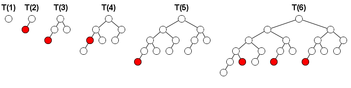
Let f(k) be the number of winning moves of the first player (i.e. the moves for which the second player has no winning strategy) on the first turn of the game when this game is played on T(k).For example, f(5) = 1 and f(10) = 17.
Find f(10000). Give the last 18 digits of your answer.
The divisors of 6 are 1,2,3 and 6.
The sum of the squares of these numbers is 1+4+9+36=50.
Let sigma2(n) represent the sum of the squares of the divisors of n. Thus sigma2(6)=50.
Let SIGMA2 represent the summatory function of sigma2, that is SIGMA2(n)=sigma2(i) for i=1 to n.The first 6 values of SIGMA2 are: 1,6,16,37,63 and 113.
Find SIGMA2(1015) modulo 109.
It can be shown that the polynomial n4 + 4n3 + 2n2 + 5n is a multiple of 6 for every integer n. It can also be shown that 6 is the largest integer satisfying this property.
Define M(a, b, c) as the maximum m such that n4 + an3 + bn2 + cn is a multiple of m for all integers n. For example, M(4, 2, 5) = 6.
Also, define S(N) as the sum of M(a, b, c) for all 0 < a, b, c N.
We can verify that S(10) = 1972 and S(10000) = 2024258331114.
Let Fk be the Fibonacci sequence:
F0 = 0, F1 = 1 and
Fk = Fk-1 + Fk-2 for k 2.
Find the last 9 digits of S(Fk) for 2 k 1234567890123.
For integers a and b, we define D(a, b) as the domain enclosed by the parabola y = x2 and the line y = ax + b:
D(a, b) = { (x, y) | x2 y ax + b }.
L(a, b) is defined as the number of lattice points contained in D(a, b).
For example, L(1, 2) = 8 and L(2, -1) = 1.
We also define S(N) as the sum of L(a, b) for all the pairs (a, b) such that the area of D(a, b) is a rational number and |a|,|b| N.
We can verify that S(5) = 344 and S(100) = 26709528.
Find S(1012). Give your answer mod 108.
Ea is an ellipse with an equation of the form x2 + 4y2 = 4a2.
Ea' is the rotated image of Ea by degrees counterclockwise around the origin O(0, 0) for 0 < < 90.

b is the distance to the origin of the two intersection points closest to the origin and c is the distance of the two other intersection points.
We call an ordered triplet (a, b, c) a canonical ellipsoidal triplet if a, b and c are positive integers.
For example, (209, 247, 286) is a canonical ellipsoidal triplet.
Let C(N) be the number of distinct canonical ellipsoidal triplets (a, b, c) for a N.
It can be verified that C(103) = 7, C(104) = 106 and C(106) = 11845.
Find C(1017).
We wish to tile a rectangle whose length is twice its width.
Let T(0) be the tiling consisting of a single rectangle.
For n > 0, let T(n) be obtained from T(n-1) by replacing all tiles in the following manner:
The following animation demonstrates the tilings T(n) for n from 0 to 5:

Let f(n) be the number of points where four tiles meet in T(n).
For example, f(1) = 0, f(4) = 82 and f(109) mod 177 = 126897180.
Find f(10k) for k = 1018, give your answer modulo 177.
We are trying to find a hidden number selected from the set of integers {1, 2, ..., n} by asking questions.
Each number (question) we ask, we get one of three possible answers:
- "Your guess is lower than the hidden number" (and you incur a cost of a), or
- "Your guess is higher than the hidden number" (and you incur a cost of b), or
- "Yes, that's it!" (and the game ends).
Given the value of n, a, and b, an optimal strategy minimizes the total cost for the worst possible case.
For example, if n = 5, a = 2, and b = 3, then we may begin by asking "2" as our first question.
If we are told that 2 is higher than the hidden number (for a cost of b=3), then we are sure that "1" is the hidden number (for a total cost of 3).
If we are told that 2 is lower than the hidden number (for a cost of a=2), then our next question will be "4".
If we are told that 4 is higher than the hidden number (for a cost of b=3), then we are sure that "3" is the hidden number (for a total cost of 2+3=5).
If we are told that 4 is lower than the hidden number (for a cost of a=2), then we are sure that "5" is the hidden number (for a total cost of 2+2=4).
Thus, the worst-case cost achieved by this strategy is 5. It can also be shown that this is the lowest worst-case cost that can be achieved.
So, in fact, we have just described an optimal strategy for the given values of n, a, and b.
Let C(n, a, b) be the worst-case cost achieved by an optimal strategy for the given values of n, a, and b.
Here are a few examples:
C(5, 2, 3) = 5
C(500, 2, 3) = 13.22073197...
C(20000, 5, 7) = 82
C(2000000, 5, 7) = 49.63755955...
Let Fk be the Fibonacci numbers: Fk = Fk-1 + Fk-2 with base cases F1 = F2 = 1.
Find 1k30 C(1012, k, Fk), and give your answer rounded to 8 decimal places behind the decimal point.
If we calculate a2 mod 6 for 0 a 5 we get: 0,1,4,3,4,1.
The largest value of a such that a2 a mod 6 is 4.
Let's call M(n) the largest value of a < n such that a2 a (mod n).
So M(6) = 4.
Find M(n) for 1 n 107.
Let's call a lattice point (x, y) inadmissible if x, y and x + y are all positive perfect squares.
For example, (9, 16) is inadmissible, while (0, 4), (3, 1) and (9, 4) are not.
Consider a path from point (x1, y1) to point (x2, y2) using only unit steps north or east.
Let's call such a path admissible if none of its intermediate points are inadmissible.
Let P(n) be the number of admissible paths from (0, 0) to (n, n).
It can be verified that P(5) = 252, P(16) = 596994440 and P(1000) mod 1 000 000 007 = 341920854.
Find P(10 000 000) mod 1 000 000 007.
Let n be a positive integer. Consider nim positions where:
- There are n non-empty piles.
- Each pile has size less than 2n.
- No two piles have the same size.
Let W(n) be the number of winning nim positions satisfying the above conditions (a position is winning if the first player has a winning strategy). For example, W(1) = 1, W(2) = 6, W(3) = 168, W(5) = 19764360 and W(100) mod 1 000 000 007 = 384777056.
Find W(10 000 000) mod 1 000 000 007.
Let C be the circle with radius r, x2 + y2 = r2. We choose two points P(a, b) and Q(-a, c) so that the line passing through P and Q is tangent to C.
For example, the quadruplet (r, a, b, c) = (2, 6, 2, -7) satisfies this property.
Let F(R, X) be the number of the integer quadruplets (r, a, b, c) with this property, and with 0 < r R and 0 < a X.
We can verify that F(1, 5) = 10, F(2, 10) = 52 and F(10, 100) = 3384.
Find F(108, 109) + F(109, 108).
Let n be a positive integer. Suppose there are stations at the coordinates (x, y) = (2i mod n, 3i mod n) for 0 i 2n. We will consider stations with the same coordinates as the same station.
We wish to form a path from (0, 0) to (n, n) such that the x and y coordinates never decrease.
Let S(n) be the maximum number of stations such a path can pass through.
For example, if n = 22, there are 11 distinct stations, and a valid path can pass through at most 5 stations. Therefore, S(22) = 5. The case is illustrated below, with an example of an optimal path:

It can also be verified that S(123) = 14 and S(10000) = 48.
Find S(k5) for 1 k 30.
For integers m, n (0 n < m), let L(m, n) be an mm grid with the top-right nn grid removed.
For example, L(5, 3) looks like this:

We want to number each cell of L(m, n) with consecutive integers 1, 2, 3, ... such that the number in every cell is smaller than the number below it and to the left of it.
For example, here are two valid numberings of L(5, 3):
Let LC(m, n) be the number of valid numberings of L(m, n).
It can be verified that LC(3, 0) = 42, LC(5, 3) = 250250,
LC(6, 3) = 406029023400 and LC(10, 5) mod 76543217 = 61251715.
Find LC(10000, 5000) mod 76543217.
We say that a d-digit positive number (no leading zeros) is a one-child number if exactly one of its sub-strings is divisible by d.
For example, 5671 is a 4-digit one-child number. Among all its
sub-strings 5, 6, 7, 1, 56, 67, 71, 567, 671 and 5671, only 56 is
divisible by 4.
Similarly, 104 is a 3-digit one-child number because only 0 is divisible by 3.
1132451 is a 7-digit one-child number because only 245 is divisible by 7.
Let F(N) be the number of the one-child numbers less than N.
We can verify that F(10) = 9, F(103) = 389 and F(107) = 277674.
Find F(1019).
6174 is a remarkable number; if we sort its digits in increasing order
and subtract that number from the number you get when you sort the
digits in decreasing order, we get 7641-1467=6174.
Even more remarkable is that if we start from any 4 digit number and
repeat this process of sorting and subtracting, we'll eventually end up
with 6174 or immediately with 0 if all digits are equal.
This also works with numbers that have less than 4 digits if we pad the number with leading zeroes until we have 4 digits.
E.g. let's start with the number 0837:
8730-0378=8352
8532-2358=6174
6174 is called the Kaprekar constant. The process of sorting and subtracting and repeating this until either 0 or the Kaprekar constant is reached is called the Kaprekar routine.
We can consider the Kaprekar routine for other bases and number of digits.
Unfortunately, it is not guaranteed a Kaprekar constant exists in all
cases; either the routine can end up in a cycle for some input numbers
or the constant the routine arrives at can be different for different
input numbers.
However, it can be shown that for 5 digits and a base b = 6t+39, a Kaprekar constant exists.
E.g. base 15: (10,4,14,9,5)15
base 21: (14,6,20,13,7)21
Define Cb to be the Kaprekar constant in base b for 5 digits. Define the function sb(i) to be
- 0 if i = Cb or if i written in base b consists of 5 identical digits
- the number of iterations it takes the Kaprekar routine in base b to arrive at Cb, otherwise
Define S(b) as the sum of sb(i) for 0 < i < b5.
E.g. S(15) = 5274369
S(111) = 400668930299
Find the sum of S(6k+3) for 2 k 300.
Give the last 18 digits as your answer.
A set of lattice points S is called a titanic set if there exists a line passing through exactly two points in S.
An example of a titanic set is S = {(0, 0), (0, 1), (0, 2), (1, 1), (2, 0), (1, 0)}, where the line passing through (0, 1) and (2, 0) does not pass through any other point in S.
On the other hand, the set {(0, 0), (1, 1), (2, 2), (4, 4)} is not a titanic set since the line passing through any two points in the set also passes through the other two.
For any positive integer N, let T(N) be the number of titanic sets S whose every point (x, y) satisfies 0 x, y N. It can be verified that T(1) = 11, T(2) = 494, T(4) = 33554178, T(111) mod 108 = 13500401 and T(105) mod 108 = 63259062.
Find T(1011) mod 108.
A row of n squares contains a frog in the leftmost square. By successive jumps the frog goes to the rightmost square and then back to the leftmost square. On the outward trip he jumps one, two or three squares to the right, and on the homeward trip he jumps to the left in a similar manner. He cannot jump outside the squares. He repeats the round-trip travel m times.
Let F(m, n) be the number of the ways the frog can travel so that at most one square remains unvisited.
For example, F(1, 3) = 4, F(1, 4) = 15, F(1, 5) = 46, F(2, 3) = 16 and F(2, 100) mod 109 = 429619151.
Find the last 9 digits of F(10, 1012).
A unit fraction contains 1 in the numerator. The decimal representation of the unit fractions with denominators 2 to 10 are given:
1/2 = 0.5 1/3 = 0.(3) 1/4 = 0.25 1/5 = 0.2 1/6 = 0.1(6) 1/7 = 0.(142857) 1/8 = 0.125 1/9 = 0.(1) 1/10 = 0.1
Where 0.1(6) means 0.166666..., and has a 1-digit recurring cycle. It can be seen that 1/7 has a 6-digit recurring cycle.
Unit fractions whose denominator has no other prime factors than 2 and/or 5 are not considered to have a recurring cycle.
We define the length of the recurring cycle of those unit fractions as 0.
Let L(n) denote the length of the recurring cycle of 1/n. You are given that L(n) for 3 n 1 000 000 equals 55535191115.
Find L(n) for 3 n 100 000 000
Let n be a positive integer. An integer triple (a, b, c) is called a factorisation triple of n if:
- 1 a b c
- abc = n.
Define f(n) to be a + b + c for the factorisation triple (a, b, c) of n which minimises c / a. One can show that this triple is unique.
For example, f(165) = 19, f(100100) = 142 and f(20!) = 4034872.
Find f(43!).
The look and say sequence goes 1, 11, 21, 1211, 111221, 312211, 13112221, 1113213211, ...
The sequence starts with 1 and all other members are obtained by describing the previous member in terms of consecutive digits.
It helps to do this out loud:
1 is 'one one' 11
11 is 'two ones' 21
21 is 'one two and one one' 1211
1211 is 'one one, one two and two ones' 111221
111221 is 'three ones, two twos and one one' 312211
...
Define A(n), B(n) and C(n) as the number of ones, twos and threes in the n'th element of the sequence respectively.
One can verify that A(40) = 31254, B(40) = 20259 and C(40) = 11625.
Find A(n), B(n) and C(n) for n = 1012.
Give your answer modulo 230 and separate your values for A, B and C by a comma.
E.g. for n = 40 the answer would be 31254,20259,11625
A positive integer matrix is a matrix whose elements are all positive integers.
Some positive integer matrices can be expressed as a square of a
positive integer matrix in two different ways. Here is an example:

We define F(N) as the number of the 2x2 positive integer matrices which have a trace less than N and which can be expressed as a square of a positive integer matrix in two different ways.
We can verify that F(50) = 7 and F(1000) = 1019.
Find F(107).
Numbers of the form n15+1 are composite for every integer n > 1.
For positive integers n and m let s(n,m) be defined as the sum of the distinct prime factors of n15+1 not exceeding m.
So s(2,10) = 3 and s(2,1000) = 3+11+331 = 345.
Also 1015+1 = 7111321124121619091.
So s(10,100) = 31 and s(10,1000) = 483.
Find s(n,108) for 1 n 1011.
Let H be the hyperbola defined by the equation 12x2 + 7xy - 12y2 = 625.
Next, define X as the point (7, 1). It can be seen that X is in H.
Now we define a sequence of points in H, {Pi : i 1}, as:
- P1 = (13, 61/4).
- P2 = (-43/6, -4).
- For i > 2, Pi is the unique point in H that is different from Pi-1 and such that line PiPi-1 is parallel to line Pi-2X. It can be shown that Pi is well-defined, and that its coordinates are always rational.
You are given that P3 = (-19/2, -229/24), P4 = (1267/144, -37/12) and P7 = (17194218091/143327232, 274748766781/1719926784).
Find Pn for n = 1114 in the following format:
If Pn = (a/b, c/d) where the fractions are in lowest terms and the denominators are positive, then the answer is (a + b + c + d) mod 1 000 000 007.
For n = 7, the answer would have been: 806236837.
Let n be a positive integer.
A 6-sided die is thrown n times. Let c be the number of pairs of consecutive throws that give the same value.
For example, if n = 7 and the values of the die throws are (1,1,5,6,6,6,3), then the following pairs of consecutive throws give the same value:
(1,1,5,6,6,6,3)
(1,1,5,6,6,6,3)
(1,1,5,6,6,6,3)
Therefore, c = 3 for (1,1,5,6,6,6,3).
Define C(n) as the number of outcomes of throwing a 6-sided die n times such that c does not exceed (n).1
For example, C(3) = 216, C(4) = 1290, C(11) = 361912500 and C(24) = 4727547363281250000.
Define S(L) as C(n) for 1 n L.
For example, S(50) mod 1 000 000 007 = 832833871.
Find S(50 000 000) mod 1 000 000 007.
1 denotes the prime-counting function, i.e. (n) is the number of primes n.

The above is an example of a cryptic kakuro (also known as cross sums, or even sums cross) puzzle, with its final solution on the right. (The common rules of kakuro puzzles can be found easily on numerous internet sites. Other related information can also be currently found at krazydad.com whose author has provided the puzzle data for this challenge.)
The downloadable text file (kakuro200.txt) contains the description of 200 such puzzles, a mix of 5x5 and 6x6 types. The first puzzle in the file is the above example which is coded as follows:
6,X,X,(vCC),(vI),X,X,X,(hH),B,O,(vCA),(vJE),X,(hFE,vD),O,O,O,O,(hA),O,I,(hJC,vB),O,O,(hJC),H,O,O,O,X,X,X,(hJE),O,O,X
The first character is a numerical digit indicating the size of the information grid. It would be either a 6 (for a 5x5 kakuro puzzle) or a 7 (for a 6x6 puzzle) followed by a comma (,). The extra top line and left column are needed to insert information.
The content of each cell is then described and followed by a comma, going left to right and starting with the top line.
X = Gray cell, not required to be filled by a digit.
O (upper case letter)= White empty cell to be filled by a digit.
A = Or any one of the upper case letters from A to J to be replaced by its equivalent digit in the solved puzzle.
( ) = Location of the encrypted sums. Horizontal sums are preceded by a
lower case "h" and vertical sums are preceded by a lower case "v". Those
are followed by one or two upper case letters depending if the sum is a
single digit or double digit one. For double digit sums, the first
letter would be for the "tens" and the second one for the "units". When
the cell must contain information for both a horizontal and a vertical
sum, the first one is always for the horizontal sum and the two are
separated by a comma within the same set of brackets, ex.: (hFE,vD).
Each set of brackets is also immediately followed by a comma.
The description of the last cell is followed by a Carriage Return/Line Feed (CRLF) instead of a comma.
The required answer to each puzzle is based on the value of each letter necessary to arrive at the solution and according to the alphabetical order. As indicated under the example puzzle, its answer would be 8426039571. At least 9 out of the 10 encrypting letters are always part of the problem description. When only 9 are given, the missing one must be assigned the remaining digit.
You are given that the sum of the answers for the first 10 puzzles in the file is 64414157580.
Find the sum of the answers for the 200 puzzles.
Two positive numbers A and B are said to be connected (denoted by "A B") if one of these conditions holds:
(1) A and B have the same length and differ in exactly one digit; for example, 123 173.
(2) Adding one digit to the left of A (or B) makes B (or A); for example, 23 223 and 123 23.
We call a prime P a 2's relative if there exists a chain of connected primes between 2 and P and no prime in the chain exceeds P.
For example, 127 is a 2's relative. One of the possible chains is shown below:
2 3 13 113 103 107 127
However, 11 and 103 are not 2's relatives.
Let F(N) be the sum of the primes N which are not 2's relatives.
We can verify that F(103) = 431 and F(104) = 78728.
Find F(107).
Consider an infinite row of boxes. Some of the boxes contain a ball. For example, an initial configuration of 2 consecutive occupied boxes followed by 2 empty boxes, 2 occupied boxes, 1 empty box, and 2 occupied boxes can be denoted by the sequence (2, 2, 2, 1, 2), in which the number of consecutive occupied and empty boxes appear alternately.
A turn consists of moving each ball exactly once according to the following rule: Transfer the leftmost ball which has not been moved to the nearest empty box to its right.
After one turn the sequence (2, 2, 2, 1, 2) becomes (2, 2, 1, 2, 3) as can be seen below; note that we begin the new sequence starting at the first occupied box.

A system like this is called a Box-Ball System or BBS for short.
It can be shown that after a sufficient number of turns, the system evolves to a state where the consecutive numbers of occupied boxes is invariant. In the example below, the consecutive numbers of occupied boxes evolves to [1, 2, 3]; we shall call this the final state.

We define the sequence {ti}:
- s0 = 290797
- sk+1 = sk2 mod 50515093
- tk = (sk mod 64) + 1
Starting from the initial configuration (t0, t1, , t10), the final state becomes [1, 3, 10, 24, 51, 75].
Starting from the initial configuration (t0, t1, , t10 000 000), find the final state.
Give as your answer the sum of the squares of the elements of the final
state. For example, if the final state is [1, 2, 3] then 14 ( = 12 + 22 + 32) is your answer.
A sequence of integers S = {si} is called an n-sequence if it has n elements and each element si satisfies 1 si n. Thus there are nn distinct n-sequences in total. For example, the sequence S = {1, 5, 5, 10, 7, 7, 7, 2, 3, 7} is a 10-sequence.
For any sequence S, let L(S) be the length of the longest contiguous subsequence of S with the same value. For example, for the given sequence S above, L(S) = 3, because of the three consecutive 7's.
Let f(n) = L(S) for all n-sequences S.
For example, f(3) = 45, f(7) = 1403689 and f(11) = 481496895121.
Find f(7 500 000) mod 1 000 000 009.
Let a, b and c be positive numbers.
Let W, X, Y, Z be four collinear points where |WX| = a, |XY| = b, |YZ| = c and |WZ| = a + b + c.
Let Cin be the circle having the diameter XY.
Let Cout be the circle having the diameter WZ.
The triplet (a, b, c) is called a necklace triplet if you can place k 3 distinct circles C1, C2, ..., Ck such that:
- Ci has no common interior points with any Cj for 1 i, j k and i j,
- Ci is tangent to both Cin and Cout for 1 i k,
- Ci is tangent to Ci+1 for 1 i < k, and
- Ck is tangent to C1.
For example, (5, 5, 5) and (4, 3, 21) are necklace triplets, while it can be shown that (2, 2, 5) is not.

Let T(n) be the number of necklace triplets (a, b, c) such that a, b and c are positive integers, and b n. For example, T(1) = 9, T(20) = 732 and T(3000) = 438106.
Find T(1 000 000 000).
A unitary divisor d of a number n is a divisor of n that has the property gcd(d, n/d) = 1.
The unitary divisors of 4! = 24 are 1, 3, 8 and 24.
The sum of their squares is 12 + 32 + 82 + 242 = 650.
Let S(n) represent the sum of the squares of the unitary divisors of n. Thus S(4!)=650.
Find S(100 000 000!) modulo 1 000 000 009.
N disks are placed in a row, indexed 1 to N from left to right.
Each disk has a black side and white side. Initially all disks show their white side.
At each turn, two, not necessarily distinct, integers A and B between 1 and N (inclusive) are chosen uniformly at random.
All disks with an index from A to B (inclusive) are flipped.
The following example shows the case N = 8. At the first turn A = 5 and B = 2, and at the second turn A = 4 and B = 6.

Let E(N, M) be the expected number of disks that show their white side after M turns.
We can verify that E(3, 1) = 10/9, E(3, 2) = 5/3, E(10, 4) 5.157 and E(100, 10) 51.893.
Find E(1010, 4000).
Give your answer rounded to 2 decimal places behind the decimal point.
Fred the farmer arranges to have a new storage silo installed on his farm and having an obsession for all things square he is absolutely devastated when he discovers that it is circular. Quentin, the representative from the company that installed the silo, explains that they only manufacture cylindrical silos, but he points out that it is resting on a square base. Fred is not amused and insists that it is removed from his property.
Quick thinking Quentin explains that when granular materials are delivered from above a conical slope is formed and the natural angle made with the horizontal is called the angle of repose. For example if the angle of repose, degrees, and grain is delivered at the centre of the silo then a perfect cone will form towards the top of the cylinder. In the case of this silo, which has a diameter of 6m, the amount of space wasted would be approximately 32.648388556 m3. However, if grain is delivered at a point on the top which has a horizontal distance of metres from the centre then a cone with a strangely curved and sloping base is formed. He shows Fred a picture.
We shall let the amount of space wasted in cubic metres be given by . If , which happens to have three squared decimal places, then the amount of space wasted, . Given the range of possible solutions to this problem there is exactly one other option: . It would be like knowing that the square is king of the silo, sitting in splendid glory on top of your grain.
Fred's eyes light up with delight at this elegant resolution, but on closer inspection of Quentin's drawings and calculations his happiness turns to despondency once more. Fred points out to Quentin that it's the radius of the silo that is 6 metres, not the diameter, and the angle of repose for his grain is 40 degrees. However, if Quentin can find a set of solutions for this particular silo then he will be more than happy to keep it.
If Quick thinking Quentin is to satisfy frustratingly fussy Fred the farmer's appetite for all things square then determine the values of for all possible square space wastage options and calculate correct to 9 decimal places.
Let S(n,m) = (n i) for 1 i m. ( is Euler's totient function)
You are given that S(510510,106 )= 45480596821125120.
Find S(510510,1011).
Give the last 9 digits of your answer.
Let E(x0, y0) be the number of steps it takes to determine the greatest common divisor of x0 and y0 with Euclid's algorithm. More formally:
x1 = y0, y1 = x0 mod y0
xn = yn-1, yn = xn-1 mod yn-1
E(x0, y0) is the smallest n such that yn = 0.
We have E(1,1) = 1, E(10,6) = 3 and E(6,10) = 4.
Define S(N) as the sum of E(x,y) for 1 x,y N.
We have S(1) = 1, S(10) = 221 and S(100) = 39826.
Find S(5106).
Recall
that a graph is a collection of vertices and edges connecting the
vertices, and that two vertices connected by an edge are called
adjacent.
Graphs can be embedded in Euclidean space by associating each vertex with a point in the Euclidean space.
A flexible graph is an embedding of a graph where it is
possible to move one or more vertices continuously so that the distance
between at least two nonadjacent vertices is altered while the
distances between each pair of adjacent vertices is kept constant.
A rigid graph is an embedding of a graph which is not flexible.
Informally, a graph is rigid if by replacing the vertices with fully
rotating hinges and the edges with rods that are unbending and
inelastic, no parts of the graph can be moved independently from the
rest of the graph.
The grid graphs embedded in the Euclidean plane are not rigid, as the following animation demonstrates:
However, one can make them rigid by adding diagonal edges to the
cells. For example, for the 2x3 grid graph, there are 19 ways to make
the graph rigid:
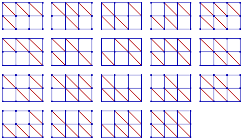
Note that for the purposes of this problem, we do not consider changing the orientation of a diagonal edge or adding both diagonal edges to a cell as a different way of making a grid graph rigid.
Let R(m,n) be the number of ways to make the m n grid graph rigid.
E.g. R(2,3) = 19 and R(5,5) = 23679901
Define S(N) as R(i,j) for 1 i, j N.
E.g. S(5) = 25021721.
Find S(100), give your answer modulo 1000000033
The Fibonacci numbers {fn, n 0} are defined recursively as fn = fn-1 + fn-2 with base cases f0 = 0 and f1 = 1.
Define the polynomials {Fn, n 0} as Fn(x) = fixi for 0 i n.
For example, F7(x) = x + x2 + 2x3 + 3x4 + 5x5 + 8x6 + 13x7, and F7(11) = 268357683.
Let n = 1015. Find the sum [0x100 Fn(x)] mod 1307674368000 (= 15!).
Julie proposes the following wager to her sister Louise.
She suggests they play a game of chance to determine who will wash the dishes.
For this game, they shall use a generator of independent random numbers uniformly distributed between 0 and 1.
The game starts with S = 0.
The first player, Louise, adds to S different random numbers from the generator until S > 1 and records her last random number 'x'.
The second player, Julie, continues adding to S different random numbers from the generator until S > 2 and records her last random number 'y'.
The player with the highest number wins and the loser washes the dishes, i.e. if y > x the second player wins.
For example, if the first player draws 0.62 and 0.44, the first player turn ends since 0.62+0.44 > 1 and x = 0.44.
If the second players draws 0.1, 0.27 and 0.91, the second player turn ends since 0.62+0.44+0.1+0.27+0.91 > 2 and y = 0.91.
Since y > x, the second player wins.
Louise thinks about it for a second, and objects: "That's not fair".
What is the probability that the second player wins?
Give your answer rounded to 10 places behind the decimal point in the form 0.abcdefghij
When we calculate 8n modulo 11 for n=0 to 9 we get: 1, 8, 9, 6, 4, 10, 3, 2, 5, 7.
As we see all possible values from 1 to 10 occur. So 8 is a primitive root of 11.
But there is more:
If we take a closer look we see:
1+8=9
8+9=176 mod 11
9+6=154 mod 11
6+4=10
4+10=143 mod 11
10+3=132 mod 11
3+2=5
2+5=7
5+7=121 mod 11.
8 is called a Fibonacci primitive root of 11.
Not every prime has a Fibonacci primitive root.
There are 323 primes less than 10000 with one or more Fibonacci primitive roots and the sum of these primes is 1480491.
Find the sum of the primes less than 100,000,000 with at least one Fibonacci primitive root.
For an n-tuple of integers t = (a1, ..., an), let (x1, ..., xn) be the solutions of the polynomial equation xn + a1xn-1 + a2xn-2 + ... + an-1x + an = 0.
Consider the following two conditions:
- x1, ..., xn are all real.
- If x1, ..., xn are sorted, xi = i for 1 i n. (: floor function.)
In the case of n = 4, there are 12 n-tuples of integers which satisfy both conditions.
We define S(t) as the sum of the absolute values of the integers in t.
For n = 4 we can verify that S(t) = 2087 for all n-tuples t which satisfy both conditions.
Find S(t) for n = 7.
Let d(k) be the sum of all divisors of k.
We define the function S(N) = 1iN 1jNd(ij).
For example, S(3) = d(1) + d(2) + d(3) + d(2) + d(4) + d(6) + d(3) + d(6) + d(9) = 59.
You are given that S(103) = 563576517282 and S(105) mod 109 = 215766508.
Find S(1011) mod 109.
We want to tile a board of length n and height 1 completely, with either 1 2 blocks or 1 1 blocks with a single decimal digit on top:
For example, here are some of the ways to tile a board of length n = 8:

Let T(n) be the number of ways to tile a board of length n as described above.
For example, T(1) = 10 and T(2) = 101.
Let S(L) be the triple sum a,b,c gcd(T(ca), T(cb)) for 1 a, b, c L.
For example:
S(2) = 10444
S(3) = 1292115238446807016106539989
S(4) mod 987 898 789 = 670616280.
Find S(2000) mod 987 898 789.
For an integer M, we define R(M) as the sum of 1/(pq) for all the integer pairs p and q which satisfy all of these conditions:
- 1 p < q M
- p + q M
- p and q are coprime.
We also define S(N) as the sum of R(i) for 2 i N.
We can verify that S(2) = R(2) = 1/2, S(10) 6.9147 and S(100) 58.2962.
Find S(107). Give your answer rounded to four decimal places.
An integer is called eleven-free if its decimal expansion does not contain any substring representing a power of 11 except 1.
For example, 2404 and 13431 are eleven-free, while 911 and 4121331 are not.
Let E(n) be the nth positive eleven-free integer. For example, E(3) = 3, E(200) = 213 and E(500 000) = 531563.
Find E(1018).
Let g(n) be a sequence defined as follows:
g(4) = 13,
g(n) = g(n-1) + gcd(n, g(n-1)) for n > 4.
The first few values are:
| n | 4 | 5 | 6 | 7 | 8 | 9 | 10 | 11 | 12 | 13 | 14 | 15 | 16 | 17 | 18 | 19 | 20 | ... |
| g(n) | 13 | 14 | 16 | 17 | 18 | 27 | 28 | 29 | 30 | 31 | 32 | 33 | 34 | 51 | 54 | 55 | 60 | ... |
You are given that g(1 000) = 2524 and g(1 000 000) = 2624152.
Find g(1015).
A group of p people decide to sit down at a round table and play a lottery-ticket trading game. Each person starts off with a randomly-assigned, unscratched lottery ticket. Each ticket, when scratched, reveals a whole-pound prize ranging anywhere from 1 to p, with no two tickets alike. The goal of the game is for each person to maximize his ticket winnings upon leaving the game.
An arbitrary person is chosen to be the first player. Going around the table, each player has only one of two options:
1. The player can scratch his ticket and reveal its worth to everyone at the table.
2. The player can trade his unscratched ticket for a previous player's
scratched ticket, and then leave the game with that ticket. The previous
player then scratches his newly-acquired ticket and reveals its worth
to everyone at the table.
The game ends once all tickets have been scratched. All players still remaining at the table must leave with their currently-held tickets.
Assume that each player uses the optimal strategy for maximizing the expected value of his ticket winnings.
Let E(p) represent the expected number of players left at the table when the game ends in a game consisting of p players (e.g. E(111) = 5.2912 when rounded to 5 significant digits).
Let S1(N) =  E(p)
E(p)
Let Sk(N) = Sk-1(p) for k > 1
Find S20(1014) and write the answer in scientific notation rounded to 10 significant digits. Use a lowercase e to separate mantissa and exponent (e.g. S3(100) = 5.983679014e5).
For every integer n>1, the family of functions fn,a,b is defined
by fn,a,b(x)ax+b mod n for a,b,x integer and 0<a<n, 0b<n, 0x<n.
We will call fn,a,b a retraction if fn,a,b(fn,a,b(x))fn,a,b(x) mod n for every 0x<n.
Let R(n) be the number of retractions for n.
You are given that
R(c) for c=C(100 000,k), and 1 k 99 999 628701600 (mod 1 000 000 007).
(C(n,k) is the binomial coefficient).
Find R(c) for c=C(10 000 000,k), and 1 k 9 999 999.
Give your answer modulo 1 000 000 007.
For every integer n>1, the family of functions fn,a,b is defined
by fn,a,b(x)ax+b mod n for a,b,x integer and 0<a<n, 0b<n, 0x<n.
We will call fn,a,b a retraction if fn,a,b(fn,a,b(x))fn,a,b(x) mod n for every 0x<n.
Let R(n) be the number of retractions for n.
F(N)=R(n4+4) for 1nN.
F(1024)=77532377300600.
Find F(107) (mod 1 000 000 007)
For every integer n>1, the family of functions fn,a,b is defined
by fn,a,b(x)ax+b mod n for a,b,x integer and 0<a<n, 0b<n, 0x<n.
We will call fn,a,b a retraction if fn,a,b(fn,a,b(x))fn,a,b(x) mod n for every 0x<n.
Let R(n) be the number of retractions for n.
F(N)=R(n) for 2nN.
F(107)638042271 (mod 1 000 000 007).
Find F(1014) (mod 1 000 000 007).
The function lcm(a,b) denotes the least common multiple of a and b.
Let A(n) be the average of the values of lcm(n,i) for 1in.
E.g: A(2)=(2+2)/2=2 and A(10)=(10+10+30+20+10+30+70+40+90+10)/10=32.
S(100)=122726.
Find S(99999999019) mod 999999017.
Phil the confectioner is making a new batch of chocolate covered candy. Each candy centre is shaped like an ellipsoid of revolution defined by the equation: b2x2 + b2y2 + a2z2 = a2b2.
Phil wants to know how much chocolate is needed to cover one candy centre with a uniform coat of chocolate one millimeter thick.
| If a=1 mm and b=1 mm, the amount of chocolate required is |
|
mm3 |
Find the amount of chocolate in mm3 required if a=3 mm and b=1 mm. Give your answer as the number rounded to 8 decimal places behind the decimal point.
A hypocycloid is the curve drawn by a point on a small circle rolling inside a larger circle. The parametric equations of a hypocycloid centered at the origin, and starting at the right most point is given by:
Where R is the radius of the large circle and r the radius of the small circle.
Let be the set of distinct points with integer coordinates on the hypocycloid with radius R and r and for which there is a corresponding value of t such that and are rational numbers.
Let be the sum of the absolute values of the x and y coordinates of the points in .
Let be the sum of for R and r positive integers, and .
C(3, 1) = |
{(3, 0), (-1, 2), (-1,0), (-1,-2)} |
C(2500, 1000) = |
{(2500, 0), (772, 2376), (772, -2376), (516, 1792),
(516, -1792), (500, 0), (68, 504), (68, -504), (-1356, 1088), (-1356, -1088), (-1500, 1000), (-1500, -1000)} |
Note: (-625, 0) is not an element of C(2500, 1000) because is not a rational number for the corresponding values of t.
S(3, 1) = (|3| + |0|) + (|-1| + |2|) + (|-1| + |0|) + (|-1| + |-2|) = 10
T(3) = 10; T(10) = 524 ;T(100) = 580442; T(103) = 583108600.
Find T(106).
Consider the number 15.
There are eight positive numbers less than 15 which are coprime to 15: 1, 2, 4, 7, 8, 11, 13, 14.
The modular inverses of these numbers modulo 15 are: 1, 8, 4, 13, 2, 11, 7, 14
because
1*1 mod 15=1
2*8=16 mod 15=1
4*4=16 mod 15=1
7*13=91 mod 15=1
11*11=121 mod 15=1
14*14=196 mod 15=1
Let I(n) be the largest positive number m smaller than n-1 such that the modular inverse of m modulo n equals m itself.
So I(15)=11.
Also I(100)=51 and I(7)=1.
Find I(n) for 3n2107
Define F(m,n) as the number of n-tuples of positive integers for which the product of the elements doesn't exceed m.
F(10, 10) = 571.
F(106, 106) mod 1 234 567 891 = 252903833.
Find F(109, 109) mod 1 234 567 891.
A simple quadrilateral is a polygon that has four distinct vertices, has no straight angles and does not self-intersect.
Let Q(m, n) be the number of simple quadrilaterals whose vertices are lattice points with coordinates (x,y) satisfying 0 x m and 0 y n.
For example, Q(2, 2) = 94 as can be seen below:

It can also be verified that Q(3, 7) = 39590, Q(12, 3) = 309000 and Q(123, 45) = 70542215894646.
Find Q(12345, 6789) mod 135707531.
In the following equation x, y, and n are positive integers.
1 x |
+ | 1 y |
= | 1 n |
For a limit L we define F(L) as the number of solutions which satisfy x < y L.
We can verify that F(15) = 4 and F(1000) = 1069.
Find F(1012).
Let f(n) be the largest positive integer x less than 109 such that the last 9 digits of nx form the number x (including leading zeros), or zero if no such integer exists.
For example:
- f(4) = 411728896 (4411728896 = ...490411728896)
- f(10) = 0
- f(157) = 743757 (157743757 = ...567000743757)
- f(n), 2 n 103 = 442530011399
Find f(n), 2 n 106.
Define:
xn = (1248n mod 32323) - 16161
yn = (8421n mod 30103) - 15051
Pn = {(x1, y1), (x2, y2), ..., (xn, yn)}
For example, P8 = {(-14913, -6630), (-10161, 5625), (5226, 11896), (8340, -10778), (15852, -5203), (-15165, 11295), (-1427, -14495), (12407, 1060)}.
Let C(n) be the number of triangles whose vertices are in Pn which contain the origin in the interior.
Examples:
C(8) = 20
C(600) = 8950634
C(40 000) = 2666610948988
Find C(2 000 000).
Let f(n) = n2 - 3n - 1.
Let p be a prime.
Let R(p) be the smallest positive integer n such that f(n) mod p2 = 0 if such an integer n exists, otherwise R(p) = 0.
Let SR(L) be R(p) for all primes not exceeding L.
Find SR(107).
Consider the alphabet A made out of the letters of the word "project": A={c,e,j,o,p,r,t}.
Let T(n) be the number of strings of length n consisting of letters from
A that do not have a substring that is one of the 5040 permutations of
"project".
Find T(1012). Give the last 9 digits of your answer.
The flipping game is a two player game played on a N by N square board.
Each square contains a disk with one side white and one side black.
The game starts with all disks showing their white side.
A turn consists of flipping all disks in a rectangle with the following properties:
- the upper right corner of the rectangle contains a white disk
- the rectangle width is a perfect square (1, 4, 9, 16, ...)
- the rectangle height is a triangular number (1, 3, 6, 10, ...)

Players alternate turns. A player wins by turning the grid all black.
Let W(N) be the number of winning moves for the first player on a N by N board with all disks white, assuming perfect play.
W(1) = 1, W(2) = 0, W(5) = 8 and W(102) = 31395.
For N=5, the first player's eight winning first moves are:

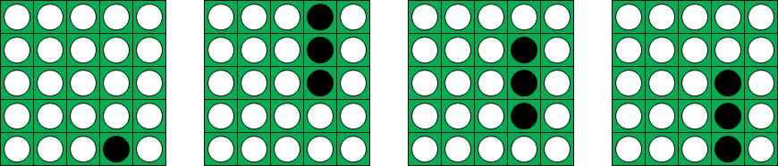
Find W(106).
On the Euclidean plane, an ant travels from point A(0, 1) to point B(d, 1) for an integer d.
In each step, the ant at point (x0, y0) chooses one of the lattice points (x1, y1) which satisfy x1 0 and y1 1 and goes straight to (x1, y1) at a constant velocity v. The value of v depends on y0 and y1 as follows:
- If y0 = y1, the value of v equals y0.
- If y0 y1, the value of v equals (y1 - y0) / (ln(y1) - ln(y0)).
The left image is one of the possible paths for d = 4. First the ant goes from A(0, 1) to P1(1, 3) at velocity (3 - 1) / (ln(3) - ln(1)) 1.8205. Then the required time is sqrt(5) / 1.8205 1.2283.
From P1(1, 3) to P2(3, 3) the ant travels at velocity 3 so the required time is 2 / 3 0.6667. From P2(3,
3) to B(4, 1) the ant travels at velocity (1 - 3) / (ln(1) - ln(3))
1.8205 so the required time is sqrt(5) / 1.8205 1.2283.
Thus the total required time is 1.2283 + 0.6667 + 1.2283 = 3.1233.
The right image is another path. The total required time is calculated as 0.98026 + 1 + 0.98026 = 2.96052. It can be shown that this is the quickest path for d = 4.
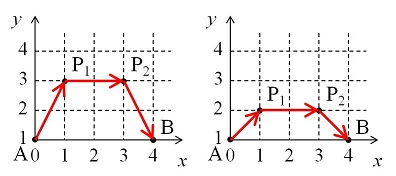
Let F(d) be the total required time if the ant chooses the quickest path. For example, F(4) 2.960516287.
We can verify that F(10) 4.668187834 and F(100) 9.217221972.
Find F(10000). Give your answer rounded to nine decimal places.
Let fn(k) = ek/n - 1, for all non-negative integers k.
Remarkably, f200(6) + f200(75) + f200(89) + f200(226) = 3.141592644529 .
In fact, it is the best approximation of of the form fn(a) + fn(b) + fn(c) + fn(d) for n = 200.
Let g(n) = a2 + b2 + c2 + d2 for a, b, c, d that minimize the error: | fn(a) + fn(b) + fn(c) + fn(d) - |
(where |x| denotes the absolute value of x).
You are given g(200) = 62 + 752 + 892 + 2262 = 64658.
Find g(10000).
A 3-smooth number is an integer which has no prime factor larger than 3. For an integer N, we define S(N) as the set of 3-smooth numbers less than or equal to N . For example, S(20) = { 1, 2, 3, 4, 6, 8, 9, 12, 16, 18 }.
We define F(N) as the number of permutations of S(N) in which each element comes after all of its proper divisors.
This is one of the possible permutations for N = 20.
- 1, 2, 4, 3, 9, 8, 16, 6, 18, 12.
This is not a valid permutation because 12 comes before its divisor 6.
- 1, 2, 4, 3, 9, 8, 12, 16, 6, 18.
We can verify that F(6) = 5, F(8) = 9, F(20) = 450 and F(1000) 8.8521816557e21.
Find F(1018). Give as your answer its scientific notation rounded to ten digits after the decimal point.
When giving your answer, use a lowercase e to separate mantissa and
exponent. E.g. if the answer is 112,233,445,566,778,899 then the answer
format would be 1.1223344557e17.
The function is defined for all positive integers as follows:
The function is defined as .
and .
Find . Give the last 9 digits of your answer.
The Mbius function, denoted (n), is defined as:
- (n) = (-1)(n) if n is squarefree (where (n) is the number of distinct prime factors of n)
- (n) = 0 if n is not squarefree.
Let P(a,b) be the number of integers n in the interval [a,b] such that (n) = 1.
Let N(a,b) be the number of integers n in the interval [a,b] such that (n) = -1.
For example, P(2,10) = 2 and N(2,10) = 4.
Let C(n) be the number of integer pairs (a,b) such that:
- 1 a b n,
- 99N(a,b) 100P(a,b), and
- 99P(a,b) 100N(a,b).
For example, C(10) = 13, C(500) = 16676 and C(10 000) = 20155319.
Find C(20 000 000).
The kernel of a polygon is defined by the set of points from which the entire polygon's boundary is visible. We define a polar polygon as a polygon for which the origin is strictly contained inside its kernel.
For this problem, a polygon can have collinear consecutive vertices. However, a polygon still cannot have self-intersection and cannot have zero area.
For example, only the first of the following is a polar polygon (the kernels of the second, third, and fourth do not strictly contain the origin, and the fifth does not have a kernel at all):
Notice that the first polygon has three consecutive collinear vertices.
Let P(n) be the number of polar polygons such that the vertices (x, y) have integer coordinates whose absolute values are not greater than n.
Note that polygons should be counted as different if they have different set of edges, even if they enclose the same area. For example, the polygon with vertices [(0,0),(0,3),(1,1),(3,0)] is distinct from the polygon with vertices [(0,0),(0,3),(1,1),(3,0),(1,0)].
For example, P(1) = 131, P(2) = 1648531, P(3) = 1099461296175 and P(343) mod 1 000 000 007 = 937293740.
Find P(713) mod 1 000 000 007.
Let P(m,n) be the number of distinct terms in an mn multiplication table.
For example, a 34 multiplication table looks like this:
| 1 | 2 | 3 | 4 | |
|---|---|---|---|---|
| 1 | 1 | 2 | 3 | 4 |
| 2 | 2 | 4 | 6 | 8 |
| 3 | 3 | 6 | 9 | 12 |
There are 8 distinct terms {1,2,3,4,6,8,9,12}, therefore P(3,4) = 8.
You are given that:
P(64,64) = 1263,
P(12,345) = 1998, and
P(32,1015) = 13826382602124302.
Find P(64,1016).
An integer s is called a superinteger of another integer n if the digits of n form a subsequence of the digits of s.
For example, 2718281828 is a superinteger of 18828, while 314159 is not a superinteger of 151.
Let p(n) be the nth prime number, and let c(n) be the nth composite number. For example, p(1) = 2, p(10) = 29, c(1) = 4 and c(10) = 18.
{p(i) : i 1} = {2, 3, 5, 7, 11, 13, 17, 19, 23, 29, ...}
{c(i) : i 1} = {4, 6, 8, 9, 10, 12, 14, 15, 16, 18, ...}
Let PD the sequence of the digital roots of {p(i)} (CD is defined similarly for {c(i)}):
PD = {2, 3, 5, 7, 2, 4, 8, 1, 5, 2, ...}
CD = {4, 6, 8, 9, 1, 3, 5, 6, 7, 9, ...}
Let Pn be the integer formed by concatenating the first n elements of PD (Cn is defined similarly for CD).
P10 = 2357248152
C10 = 4689135679
Let f(n) be the smallest positive integer that is a common superinteger of Pn and Cn.
For example, f(10) = 2357246891352679, and f(100) mod 1 000 000 007 = 771661825.
Find f(10 000) mod 1 000 000 007.
An integer is called B-smooth if none of its prime factors is greater than B.
Let SB(n) be the largest B-smooth divisor of n.
Examples:
S1(10) = 1
S4(2100) = 12
S17(2496144) = 5712
Define F(n) = 1Bn 0rn SB(C(n,r)). Here, C(n,r) denotes the binomial coefficient.
Examples:
F(11) = 3132
F(1 111) mod 1 000 000 993 = 706036312
F(111 111) mod 1 000 000 993 = 22156169
Find F(11 111 111) mod 1 000 000 993.
In a room N chairs are placed around a round table.
Knights enter the room one by one and choose at random an available empty chair.
To have enough elbow room the knights always leave at least one empty chair between each other.
When there aren't any suitable chairs left, the fraction C of empty chairs is determined.
We also define E(N) as the expected value of C.
We can verify that E(4) = 1/2 and E(6) = 5/9.
Find E(1018). Give your answer rounded to fourteen decimal places in the form 0.abcdefghijklmn.
Consider a single game of Ramvok:
Let t represent the maximum number of turns the game lasts. If t = 0, then the game ends immediately. Otherwise, on each turn i, the player rolls a die. After rolling, if i < t the player can either stop the game and receive a prize equal to the value of the current roll, or discard the roll and try again next turn. If i = t, then the roll cannot be discarded and the prize must be accepted. Before the game begins, t is chosen by the player, who must then pay an up-front cost ct for some constant c. For c = 0, t can be chosen to be infinite (with an up-front cost of 0). Let R(d, c) be the expected profit (i.e. net gain) that the player receives from a single game of optimally-played Ramvok, given a fair d-sided die and cost constant c. For example, R(4, 0.2) = 2.65. Assume that the player has sufficient funds for paying any/all up-front costs.
Now consider a game of Super Ramvok:
In Super Ramvok, the game of Ramvok is played repeatedly, but with a slight modification. After each game, the die is altered. The alteration process is as follows: The die is rolled once, and if the resulting face has its pips visible, then that face is altered to be blank instead. If the face is already blank, then it is changed back to its original value. After the alteration is made, another game of Ramvok can begin (and during such a game, at each turn, the die is rolled until a face with a value on it appears). The player knows which faces are blank and which are not at all times. The game of Super Ramvok ends once all faces of the die are blank.
Let S(d, c) be the expected profit that the player receives from an optimally-played game of Super Ramvok, given a fair d-sided die to start (with all sides visible), and cost constant c. For example, S(6, 1) = 208.3.
Let F(n) = 4dn 0cn S(d, c).
Calculate F(20), rounded to the nearest integer.
The triangle ABC is inscribed in an ellipse with equation , 0 < 2b < a, a and b integers.
Let r(a,b) be the radius of the incircle of ABC when the incircle has center (2b, 0) and A has coordinates .
For example, r(3,1) = , r(6,2) = 1, r(12,3) = 2.
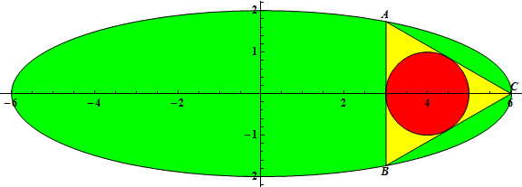

Let
You are given G(10) = 20.59722222, G(100) = 19223.60980 (rounded to 10 significant digits).
Find G(1011).
Give your answer in scientific notation rounded to 10 significant digits. Use a lowercase e to separate mantissa and exponent.
For G(10) the answer would have been 2.059722222e1.
There are N seats in a row. N people come one after another to fill the seats according to the following rules:
- No person sits beside another.
- The first person chooses any seat.
- Each subsequent person chooses the seat furthest from anyone else already seated, as long as it does not violate rule 1. If there is more than one choice satisfying this condition, then the person chooses the leftmost choice.
Note that due to rule 1, some seats will surely be left unoccupied, and the maximum number of people that can be seated is less than N (for N > 1).
Here are the possible seating arrangements for N = 15:
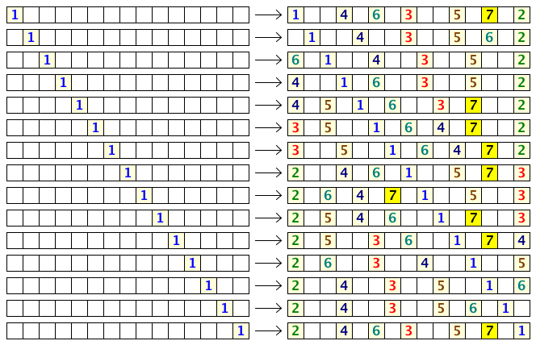
We see that if the first person chooses correctly, the 15 seats can seat up to 7 people.
We can also see that the first person has 9 choices to maximize the number of people that may be seated.
Let f(N) be the number of choices the first person has to maximize the number of occupants for N seats in a row. Thus, f(1) = 1, f(15) = 9, f(20) = 6, and f(500) = 16.
Also, f(N) = 83 for 1 N 20 and f(N) = 13343 for 1 N 500.
Find f(N) for 1 N 1012. Give the last 8 digits of your answer.
Let be the golden ratio:
Remarkably it is possible to write every positive integer as a sum of powers of even if we require that every power of is used at most once in this sum.
Even then this representation is not unique.
We can make it unique by requiring that no powers with consecutive exponents are used and that the representation is finite.
E.g:
and
To represent this sum of powers of we use a string of 0's and 1's with a point to indicate where the negative exponents start.
We call this the representation in the phigital numberbase.
So , , and .
The strings representing 1, 2 and 14 in the phigital number base are palindromic, while the string representing 3 is not.
(the phigital point is not the middle character).
The sum of the positive integers not exceeding 1000 whose phigital representation is palindromic is 4345.
Find the sum of the positive integers not exceeding whose phigital representation is palindromic.
For a positive integer n and digits d, we define F(n, d) as the number of the divisors of n whose last digits equal d.
For example, F(84, 4) = 3. Among the divisors of 84 (1, 2, 3, 4, 6, 7,
12, 14, 21, 28, 42, 84), three of them (4, 14, 84) have the last digit
4.
We can also verify that F(12!, 12) = 11 and F(50!, 123) = 17888.
Find F(106!, 65432) modulo (1016 + 61).
12n musicians participate at a music festival. On the first day, they form 3n quartets and practice all day.
It is a disaster. At the end of the day, all musicians decide they will never again agree to play with any member of their quartet.
On the second day, they form 4n trios, each musician avoiding his previous quartet partners.
Let f(12n) be the number of ways to organize the trios amongst the 12n musicians.
You are given f(12) = 576 and f(24) mod 1 000 000 007 = 509089824.
Find f(600) mod 1 000 000 007.
Let R(a, b, c) be the maximum area covered by three non-overlapping circles inside a triangle with edge lengths a, b and c.
Let S(n) be the average value of R(a, b, c) over all integer triplets (a, b, c) such that 1 a b c < a + b n
You are given S(2) = R(1, 1, 1) 0.31998, S(5) 1.25899.
Find S(1803) rounded to 5 decimal places behind the decimal point.
The number sequence game starts with a sequence S of N numbers written on a line.
Two players alternate turns. At his turn, a player must select and remove either the first or the last number remaining in the sequence.
The player score is the sum of all the numbers he has taken. Each player attempts to maximize his own sum.
If N = 4 and S = {1, 2, 10, 3}, then each player maximizes his score as follows:- Player 1: removes the first number (1)
- Player 2: removes the last number from the remaining sequence (3)
- Player 1: removes the last number from the remaining sequence (10)
- Player 2: removes the remaining number (2)
Player 1 score is 1 + 10 = 11.
Let F(N) be the score of player 1 if both players follow the optimal strategy for the sequence S = {s1, s2, ..., sN} defined as:
- s1 = 0
- si+1 = (si2 + 45) modulo 1 000 000 007
The sequence begins with S = {0, 45, 2070, 4284945, 753524550, 478107844, 894218625, ...}.
You are given F(2) = 45, F(4) = 4284990, F(100) = 26365463243, F(104) = 2495838522951.
Find F(108).
Let us consider mixtures of three substances: A, B and C. A mixture can be described by a ratio of the amounts of A, B, and C in it, i.e., (a : b : c). For example, a mixture described by the ratio (2 : 3 : 5) contains 20% A, 30% B and 50% C.
For the purposes of this problem, we cannot separate the individual components from a mixture. However, we can combine different amounts of different mixtures to form mixtures with new ratios.
For example, say we have three mixtures with ratios
(3 : 0 : 2), (3 : 6 : 11) and
(3 : 3 : 4). By mixing 10 units of the first, 20
units of the second and 30 units of the third, we get a new mixture with
ratio (6 : 5 : 9), since:
(103/5 + 203/20 + 303/10 : 100/5 + 206/20 + 303/10 : 102/5 + 2011/20 + 304/10)
= (18 : 15 : 27) = (6 : 5 : 9)
However, with the same three mixtures, it is impossible to form the ratio (3 : 2 : 1), since the amount of B is always less than the amount of C.
Let n be a positive integer. Suppose that for every triple of integers (a, b, c) with 0 a, b, c n and gcd(a, b, c) = 1, we have a mixture with ratio (a : b : c). Let M(n) be the set of all such mixtures.
For example, M(2) contains the 19 mixtures with the following ratios:
{(0 : 0 : 1), (0 : 1 : 0),
(0 : 1 : 1), (0 : 1 : 2),
(0 : 2 : 1),
(1 : 0 : 0), (1 : 0 : 1),
(1 : 0 : 2), (1 : 1 : 0),
(1 : 1 : 1),
(1 : 1 : 2), (1 : 2 : 0),
(1 : 2 : 1), (1 : 2 : 2),
(2 : 0 : 1),
(2 : 1 : 0), (2 : 1 : 1),
(2 : 1 : 2), (2 : 2 : 1)}.
Let E(n) be the number of subsets of M(n) which can produce the mixture with ratio (1 : 1 : 1), i.e., the mixture with equal parts A, B and C.
We can verify that E(1) = 103, E(2) = 520447, E(10) mod 118 = 82608406 and E(500) mod 118 = 13801403.
Find E(10 000 000) mod 118.
Let ak, bk, and ck represent the three solutions (real or complex numbers) to the expression 1/x = (k/x)2(k+x2) - kx.
For instance, for k = 5, we see that {a5, b5, c5} is approximately {5.727244, -0.363622+2.057397i, -0.363622-2.057397i}.
Let S(n) = (ak+bk)p(bk+ck)p(ck+ak)p for all integers p, k such that 1 p, k n.
Interestingly, S(n) is always an integer. For example, S(4) = 51160.
Find S(106) modulo 1 000 000 007.
Consider all the words which can be formed by selecting letters, in any order, from the phrase:
Suppose those with 15 letters or less are listed in alphabetical order and numbered sequentially starting at 1.
The list would include:
- 1 : a
- 2 : aa
- 3 : aaa
- 4 : aaaa
- 5 : aaaaa
- 6 : aaaaaa
- 7 : aaaaaac
- 8 : aaaaaacd
- 9 : aaaaaacde
- 10 : aaaaaacdee
- 11 : aaaaaacdeee
- 12 : aaaaaacdeeee
- 13 : aaaaaacdeeeee
- 14 : aaaaaacdeeeeee
- 15 : aaaaaacdeeeeeef
- 16 : aaaaaacdeeeeeeg
- 17 : aaaaaacdeeeeeeh
- ...
- 28 : aaaaaacdeeeeeey
- 29 : aaaaaacdeeeeef
- 30 : aaaaaacdeeeeefe
- ...
- 115246685191495242: euleoywuttttsss
- 115246685191495243: euler
- 115246685191495244: eulera
- ...
- 525069350231428029: ywuuttttssssrrr
Define P(w) as the position of the word w.
Define W(p) as the word in position p.
We can see that P(w) and W(p) are inverses: P(W(p)) = p and W(P(w)) = w.
Examples:
- W(10) = aaaaaacdee
- P(aaaaaacdee) = 10
- W(115246685191495243) = euler
- P(euler) = 115246685191495243
Find W(P(legionary) + P(calorimeters) - P(annihilate) + P(orchestrated) - P(fluttering)).
Give your answer using lowercase characters (no punctuation or space).
A group of chefs (numbered #1, #2, etc) participate in a turn-based strategic cooking competition. On each chef's turn, he/she cooks up a dish to the best of his/her ability and gives it to a separate panel of judges for taste-testing. Let S(k) represent chef #k's skill level (which is publicly known). More specifically, S(k) is the probability that chef #k's dish will be assessed favorably by the judges (on any/all turns). If the dish receives a favorable rating, then the chef must choose one other chef to be eliminated from the competition. The last chef remaining in the competition is the winner.
The game always begins with chef #1, with the turn order iterating sequentially over the rest of the chefs still in play. Then the cycle repeats from the lowest-numbered chef. All chefs aim to optimize their chances of winning within the rules as stated, assuming that the other chefs behave in the same manner. In the event that a chef has more than one equally-optimal elimination choice, assume that the chosen chef is always the one with the next-closest turn.
Define Wn(k) as the probability that chef #k wins in a competition with n chefs. If we have S(1) = 0.25, S(2) = 0.5, and S(3) = 1, then W3(1) = 0.29375.
Going forward, we assign S(k) = Fk/Fn+1 over all 1 k n, where Fk is a Fibonacci number: Fk = Fk-1 + Fk-2 with base cases F1 = F2 = 1. Then, for example, when considering a competition with n = 7 chefs, we have W7(1) = 0.08965042, W7(2) = 0.20775702, W7(3) = 0.15291406, W7(4) = 0.14554098, W7(5) = 0.15905291, W7(6) = 0.10261412, and W7(7) = 0.14247050, rounded to 8 decimal places each.
Let E(n) represent the expected number of dishes cooked in a competition with n chefs. For instance, E(7) = 42.28176050.
Find E(14) rounded to 8 decimal places.
ABC is an integer sided triangle with incenter I and perimeter p.
The segments IA, IB and IC have integral length as well.
Let L = p + |IA| + |IB| + |IC|.
Let S(P) = L for all such triangles where p P. For example, S(103) = 3619.
Find S(107).
We define a permutation as an operation that rearranges the order of the elements {1, 2, 3, ..., n}.
There are n! such permutations, one of which leaves the elements in their initial order.
For n = 3 we have 3! = 6 permutations:
- P1 = keep the initial order
- P2 = exchange the 1st and 2nd elements
- P3 = exchange the 1st and 3rd elements
- P4 = exchange the 2nd and 3rd elements
- P5 = rotate the elements to the right
- P6 = rotate the elements to the left
If we select one of these permutations, and we re-apply the same permutation repeatedly, we eventually restore the initial order.
For a permutation Pi, let f(Pi) be the number of steps required to restore the initial order by applying the permutation Pi repeatedly.
For n = 3, we obtain:
- f(P1) = 1 : (1,2,3) (1,2,3)
- f(P2) = 2 : (1,2,3) (2,1,3) (1,2,3)
- f(P3) = 2 : (1,2,3) (3,2,1) (1,2,3)
- f(P4) = 2 : (1,2,3) (1,3,2) (1,2,3)
- f(P5) = 3 : (1,2,3) (3,1,2) (2,3,1) (1,2,3)
- f(P6) = 3 : (1,2,3) (2,3,1) (3,1,2) (1,2,3)
Let g(n) be the average value of f2(Pi) over all permutations Pi of length n.
g(3) = (12 + 22 + 22 + 22 + 32 + 32)/3! = 31/6 5.166666667e0
g(5) = 2081/120 1.734166667e1
g(20) = 12422728886023769167301/2432902008176640000 5.106136147e3
Find g(350) and write the answer in scientific notation rounded to 10 significant digits, using a lowercase e to separate mantissa and exponent, as in the examples above.
The arithmetic derivative is defined by
- p' = 1 for any prime p
- (ab)' = a'b + ab' for all integers a, b (Leibniz rule)
For example, 20' = 24
Find gcd(k,k') for 1 < k 51015
Note: gcd(x,y) denotes the greatest common divisor of x and y.
Let d(n) be the number of divisors of n.
Let M(n,k) be the maximum value of d(j) for n j n+k-1.
Let S(u,k) be the sum of M(n,k) for 1 n u-k+1.
You are given that S(1000,10)=17176.
Find S(100 000 000,100 000).
Let F5(n) be the number of strings s such that:
- s consists only of '0's and '1's,
- s has length at most n, and
- s contains a palindromic substring of length at least 5.
For example, F5(4) = 0, F5(5) = 8, F5(6) = 42 and F5(11) = 3844.
Let D(L) be the number of integers n such that 5 n L and F5(n) is divisible by 87654321.
For example, D(107) = 0 and D(5109) = 51.
Find D(1018).
Let fk(n) be the sum of the kth powers of the first n positive integers.
For example, f2(10) = 12 + 22 + 32 + 42 + 52 + 62 + 72 + 82 + 92 + 102 = 385.
Let Sk(n) be the sum of fk(i) for 1 i n. For example, S4(100) = 35375333830.
What is (S10000(1012) mod p) over all primes p between 2 109 and 2 109 + 2000?
Alice and Bob have enjoyed playing Nim every day. However, they finally got bored of playing ordinary three-heap Nim.
So, they added an extra rule:
- Must not make two heaps of the same size.
The triple (a,b,c) indicates the size of three heaps.
Under this extra rule, (2,4,5) is one of the losing positions for the next player.
To illustrate:
- Alice moves to (2,4,3)
- Bob moves to (0,4,3)
- Alice moves to (0,2,3)
- Bob moves to (0,2,1)
Unlike ordinary three-heap Nim, (0,1,2) and its permutations are the end states of this game.
For an integer N, we define F(N) as the sum of a+b+c for all the losing positions for the next player, with 0 < a < b < c < N.
For example, F(8) = 42, because there are 4 losing positions for the next player, (1,3,5), (1,4,6), (2,3,6) and (2,4,5).
We can also verify that F(128) = 496062.
Find the last 9 digits of F(1018).
Let G(a, b) be the smallest non-negative integer n for which gcd(n3 + b, (n + a)3 + b) is maximized.
For example, G(1, 1) = 5 because gcd(n3 + 1, (n + 1)3 + 1) reaches its maximum value of 7 for n = 5, and is smaller for 0 n < 5.
Let H(m, n) = G(a, b) for 1 a m, 1 b n.
You are given H(5, 5) = 128878 and H(10, 10) = 32936544.
Find H(18, 1900).
There are n stones in a pond, numbered 1 to n. Consecutive stones are spaced one unit apart.
A frog sits on stone 1. He wishes to visit each stone exactly once, stopping on stone n. However, he can only jump from one stone to another if they are at most 3 units apart. In other words, from stone i, he can reach a stone j if 1 j n and j is in the set {i-3, i-2, i-1, i+1, i+2, i+3}.
Let f(n) be the number of ways he can do this. For example, f(6) = 14, as shown below:
1 2 3 4 5 6
1 2 3 5 4 6
1 2 4 3 5 6
1 2 4 5 3 6
1 2 5 3 4 6
1 2 5 4 3 6
1 3 2 4 5 6
1 3 2 5 4 6
1 3 4 2 5 6
1 3 5 2 4 6
1 4 2 3 5 6
1 4 2 5 3 6
1 4 3 2 5 6
1 4 5 2 3 6
Other examples are f(10) = 254 and f(40) = 1439682432976.
Let S(L) = f(n)3 for 1 n L.
Examples:
S(10) = 18230635
S(20) = 104207881192114219
S(1 000) mod 109 = 225031475
S(1 000 000) mod 109 = 363486179
Find S(1014) mod 109.
We call a positive integer double pandigital if it uses all the digits 0 to 9 exactly twice (with no leading zero). For example, 40561817703823564929 is one such number.
How many double pandigital numbers are divisible by 11?
Define the sequence a1, a2, a3, ... as:
- a1 = 1
- an+1 = 6an2 + 10an + 3 for n 1.
Examples:
a3 = 2359
a6 = 269221280981320216750489044576319
a6 mod 1 000 000 007 = 203064689
a100 mod 1 000 000 007 = 456482974
Define B(x,y,n) as (an mod p) for every prime p such that x p x+y.
Examples:
B(109, 103, 103) = 23674718882
B(109, 103, 1015) = 20731563854
Find B(109, 107, 1015).
70 colored balls are placed in an urn, 10 for each of the seven rainbow colors.
What is the expected number of distinct colors in 20 randomly picked balls?
Give your answer with nine digits after the decimal point (a.bcdefghij).
The Collatz sequence is defined as: .
The Collatz conjecture states that starting from any positive integer, the sequence eventually reaches the cycle 1,4,2,1....
We shall define the sequence prefix p(n) for the Collatz sequence starting with a1 = n as the sub-sequence of all numbers not a power of 2 (20=1 is considered a power of 2 for this problem). For example:
p(13) = {13, 40, 20, 10, 5}
p(8) = {}
Any number invalidating the conjecture would have an infinite length sequence prefix.
Let Sm be the set of all sequence prefixes of length m. Two sequences {a1, a2, ..., am} and {b1, b2, ..., bm} in Sm are said to belong to the same prefix family if ai < aj if and only if bi < bj for all 1 i,j m.
For example, in S4, {6, 3, 10, 5} is in the same family as {454, 227, 682, 341}, but not {113, 340, 170, 85}.
Let f(m) be the number of distinct prefix families in Sm.
You are given f(5) = 5, f(10) = 55, f(20) = 6771.
Find f(90).
Let W(n,k) be the number of ways in which n can be written as the product of k distinct positive integers.
For example, W(144,4) = 7. There are 7 ways in which 144 can be written as a product of 4 distinct positive integers:
- 144 = 12418
- 144 = 1289
- 144 = 12324
- 144 = 12612
- 144 = 13412
- 144 = 1368
- 144 = 2346
Note that permutations of the integers themselves are not considered distinct.
Furthermore, W(100!,10) modulo 1 000 000 007 = 287549200.
Find W(10000!,30) modulo 1 000 000 007.
Given an integer sided triangle ABC:
Let I be the incenter of ABC.
Let D be the intersection between the line AI and the circumcircle of ABC (A D).
We define F(L) as the sum of BC for the triangles ABC that satisfy AC = DI and BC L.
For example, F(15) = 45 because the triangles ABC with (BC,AC,AB) = (6,4,5), (12,8,10), (12,9,7), (15,9,16) satisfy the conditions.
Find F(109).
Bob is very familiar with the famous mathematical puzzle/game, "Tower of Hanoi," which consists of three upright rods and disks of different sizes that can slide onto any of the rods. The game begins with a stack of n disks placed on the leftmost rod in descending order by size. The objective of the game is to move all of the disks from the leftmost rod to the rightmost rod, given the following restrictions:
- Only one disk can be moved at a time.
- A valid move consists of taking the top disk from one stack and placing it onto another stack (or an empty rod).
- No disk can be placed on top of a smaller disk.
Moving on to a variant of this game, consider a long room k units (square tiles) wide, labeled from 1 to k in ascending order. Three rods are placed at squares a, b, and c, and a stack of n disks is placed on the rod at square a.
Bob begins the game standing at square b. His objective is to play the Tower of Hanoi game by moving all of the disks to the rod at square c. However, Bob can only pick up or set down a disk if he is on the same square as the rod / stack in question.
Unfortunately, Bob is also drunk. On a given move, Bob will either stumble one square to the left or one square to the right with equal probability, unless Bob is at either end of the room, in which case he can only move in one direction. Despite Bob's inebriated state, he is still capable of following the rules of the game itself, as well as choosing when to pick up or put down a disk.
The following animation depicts a side-view of a sample game for n = 3, k = 7, a = 2, b = 4, and c = 6:

Let E(n,k,a,b,c) be the expected number of squares that Bob travels during a single optimally-played game. A game is played optimally if the number of disk-pickups is minimized.
Interestingly enough, the result is always an integer. For example, E(2,5,1,3,5) = 60 and E(3,20,4,9,17) = 2358.
Find the last nine digits of 1n10000 E(n,10n,3n,6n,9n).
For positive integers n and m, we define two polynomials Fn(x) = xn and Gm(x) = (x-1)m.
We also define a polynomial Rn,m(x) as the remainder of the division of Fn(x) by Gm(x).
For example, R6,3(x) = 15x2 - 24x + 10.
Let C(n, m, d) be the absolute value of the coefficient of the d-th degree term of Rn,m(x).
We can verify that C(6, 3, 1) = 24 and C(100, 10, 4) = 227197811615775.
Find C(1013, 1012, 104) mod 999999937.
A gambler decides to participate in a special lottery. In this lottery the gambler plays a series of one or more games.
Each game costs m pounds to play and starts with an initial
pot of 1 pound. The gambler flips an unbiased coin. Every time a head
appears, the pot is doubled and the gambler continues. When a tail
appears, the game ends and the gambler collects the current value of the
pot. The gambler is certain to win at least 1 pound, the starting value
of the pot, at the cost of m pounds, the initial fee.
The gambler cannot continue to play if his fortune falls below m pounds.
Let pm(s) denote the probability that the gambler will never run out of money in this lottery given his initial fortune s and the cost per game m.
For example p2(2) 0.2522, p2(5) 0.6873 and p6(10 000) 0.9952 (note: pm(s) = 0 for s < m).
Find p15(109) and give your answer rounded to 7 decimal places behind the decimal point in the form 0.abcdefg.
The number of divisors of 120 is 16.
In fact 120 is the smallest number having 16 divisors.
Find the smallest number with 2500500 divisors.
Give your answer modulo 500500507.
The eight divisors of 24 are 1, 2, 3, 4, 6, 8, 12 and 24.
The ten numbers not exceeding 100 having exactly eight divisors are 24, 30, 40, 42, 54, 56, 66, 70, 78 and 88.
Let f(n) be the count of numbers not exceeding n with exactly eight divisors.
You are given f(100) = 10, f(1000) = 180 and f(106) = 224427.
Find f(1012).
We define a block to be a rectangle with a height of 1 and an integer-valued length. Let a castle be a configuration of stacked blocks.
Given a game grid that is w units wide and h units tall, a castle is generated according to the following rules:
- Blocks can be placed on top of other blocks as long as nothing sticks out past the edges or hangs out over open space.
- All blocks are aligned/snapped to the grid.
- Any two neighboring blocks on the same row have at least one unit of space between them.
- The bottom row is occupied by a block of length w.
- The maximum achieved height of the entire castle is exactly h.
- The castle is made from an even number of blocks.
The following is a sample castle for w=8 and h=5:

Let F(w,h) represent the number of valid castles, given grid parameters w and h.
For example, F(4,2) = 10, F(13,10) = 3729050610636, F(10,13) = 37959702514, and F(100,100) mod 1 000 000 007 = 841913936.
Find (F(1012,100) + F(10000,10000) + F(100,1012)) mod 1 000 000 007.
Alice is playing a game with n cards numbered 1 to n.
A game consists of iterations of the following steps.
(1) Alice picks one of the cards at random.
(2) Alice cannot see the number on it. Instead, Bob, one of her friends,
sees the number and tells Alice how many previously-seen numbers are
bigger than the number which he is seeing.
(3) Alice can end or continue the game. If she decides to end, the
number becomes her score. If she decides to continue, the card is
removed from the game and she returns to (1). If there is no card left,
she is forced to end the game.
Let F(n) be the Alice's expected score if she takes the optimized strategy to minimize her score.
For example, F(3) = 5/3. At the first iteration, she should continue the game. At the second iteration, she should end the game if Bob says that one previously-seen number is bigger than the number which he is seeing, otherwise she should continue the game.
We can also verify that F(4) = 15/8 and F(10) 2.5579365079.
Find F(106). Give your answer rounded to 10 decimal places behind the decimal point.
Let ABCD be a quadrilateral whose vertices are lattice points lying on the coordinate axes as follows:
A(a, 0), B(0, b), C(c, 0), D(0, d), where 1 a, b, c, d m and a, b, c, d, m are integers.
It can be shown that for m = 4 there are exactly 256 valid ways to construct ABCD. Of these 256 quadrilaterals, 42 of them strictly contain a square number of lattice points.
How many quadrilaterals ABCD strictly contain a square number of lattice points for m = 100?
Let:
You are given:
Find .
Consider the infinite repeating sequence of digits:
1234321234321234321...
Amazingly, you can break this sequence of digits into a sequence of integers such that the sum of the digits in the n'th value is n.
The sequence goes as follows:
1, 2, 3, 4, 32, 123, 43, 2123, 432, 1234, 32123, ...
Let vn be the n'th value in this sequence. For example, v2 = 2, v5 = 32 and v11 = 32123.
Let S(n) be v1 + v2 + ... + vn. For example, S(11) = 36120, and S(1000) mod 123454321 = 18232686.
Find S(1014) mod 123454321.
Let be the tribonacci numbers defined as:
;
;
for
and let .
For each pair of Vectors and with and
we define as the minimal value of the manhattan length of the vector measured as
for any integers and with .
The first vector pair is (-1, 3, 28), (-11, 125, 40826).
You are given that and .
Find .
Consider the Gaussian integer i-1. A base i-1 representation of a Gaussian integer a+bi is a finite sequence of digits dn-1dn-2...d1d0 such that:
- a+bi = dn-1(i-1)n-1 + dn-2(i-1)n-2 + ... + d1(i-1) + d0
- Each dk is in {0,1}
- There are no leading zeroes, i.e. dn-1 0, unless a+bi is itself 0
Here are base i-1 representations of a few Gaussian integers:
11+24i 111010110001101
24-11i 110010110011
8+0i 111000000
-5+0i 11001101
0+0i 0
Define f(a+bi) as the number of 1s in the unique base i-1 representation of a+bi. For example, f(11+24i) = 9 and f(24-11i) = 7.
Define B(L) as the sum of f(a+bi) for all integers a, b such that |a| L and |b| L. For example, B(500) = 10795060.
Find B(1015) mod 1 000 000 007.
Anton and Bertrand love to play three pile Nim.
However, after a lot of games of Nim they got bored and changed the rules somewhat.
They may only take a number of stones from a pile that is a proper divisor of the number of stones present in the pile.
E.g. if a pile at a certain moment contains 24 stones they may take only 1,2,3,4,6,8 or 12 stones from that pile.
So if a pile contains one stone they can't take the last stone from it as 1 isn't a proper divisor of 1.
The first player that can't make a valid move loses the game.
Of course both Anton and Bertrand play optimally.
The triple (a,b,c) indicates the number of stones in the three piles.
Let S(n) be the number of winning positions for the next player for 1 a, b, c n.
S(10) = 692 and S(100) = 735494.
Find S(123456787654321) modulo 1234567890.
Circles A and B are tangent to each other and to line L at three distinct points.
Circle C is inside the space between A, B and L, and tangent to all three.
Let rA, rB and rC be the radii of A, B and C respectively.

Let S(n) = rA + rB + rC, for 0 < rA rB n where rA, rB and rC are integers. The only solution for 0 < rA rB 5 is rA = 4, rB = 4 and rC = 1, so S(5) = 4 + 4 + 1 = 9. You are also given S(100) = 3072.
Find S(109).
Let Seq(n,k) be the number of positive-integer sequences {ai}1in of length n such that:
- n is divisible by ai for 1 i n, and
- n + a1 + a2 + ... + an is divisible by k.
Examples:
Seq(3,4) = 4, and the 4 sequences are:
{1, 1, 3}
{1, 3, 1}
{3, 1, 1}
{3, 3, 3}
Seq(4,11) = 8, and the 8 sequences are:
{1, 1, 1, 4}
{1, 1, 4, 1}
{1, 4, 1, 1}
{4, 1, 1, 1}
{2, 2, 2, 1}
{2, 2, 1, 2}
{2, 1, 2, 2}
{1, 2, 2, 2}
The last nine digits of Seq(1111,24) are 840643584.
Find the last nine digits of Seq(1234567898765,4321).
Let be Euler's totient function.
Let .
Let .
.
Find .
ABC is an integral sided triangle with sides abc.
mc is the median connecting C and the midpoint of AB.
F(n) is the number of such triangles with cn for which mc has integral length as well.
F(10)=3 and F(50)=165.
Find F(100000).
A geoboard (of order N) is a square board with equally-spaced pins protruding from the surface, representing an integer point lattice for coordinates 0 x,y N.
John begins with a pinless geoboard. Each position on the board is a hole that can be filled with a pin. John decides to generate a random integer between 1 and N+1 (inclusive) for each hole in the geoboard. If the random integer is equal to 1 for a given hole, then a pin is placed in that hole.
After John is finished generating numbers for all (N+1)2 holes and placing any/all corresponding pins, he wraps a tight rubberband around the entire group of pins protruding from the board. Let S represent the shape that is formed. S can also be defined as the smallest convex shape that contains all the pins.

The above image depicts a sample layout for N = 4. The green markers indicate positions where pins have been placed, and the blue lines collectively represent the rubberband. For this particular arrangement, S has an area of 6. If there are fewer than three pins on the board (or if all pins are collinear), S can be assumed to have zero area.
Let E(N) be the expected area of S given a geoboard of order N. For example, E(1) = 0.18750, E(2) = 0.94335, and E(10) = 55.03013 when rounded to five decimal places each.
Calculate E(100) rounded to five decimal places.
Let d(p,n,0) be the multiplicative inverse of n modulo prime p, defined as n d(p,n,0) = 1 mod p.
Let d(p,n,k) = d(p,i,k1) for k 1.
Let D(a,b,k) = (d(p,p-1,k) mod p) for all primes a p < a + b.
You are given:
- D(101,1,10) = 45
- D(103,102,102) = 8334
- D(106,103,103) = 38162302
Find D(109,105,105).
5-smooth numbers are numbers whose largest prime factor doesn't exceed 5.
5-smooth numbers are also called Hamming numbers.
Let S(L) be the sum of the numbers n not exceeding L such that Euler's totient function (n) is a Hamming number.
S(100)=3728.
Find S(1012). Give your answer modulo 232.
For every real number is given the sequence by:
for
for
.
Find for prime and
Give your answer modulo 1000000007.
Let S(n) = a+b+c over all triples (a,b,c) such that:
- a, b, and c are prime numbers.
- a < b < c < n.
- a+1, b+1, and c+1 form a geometric sequence.
For example, S(100) = 1035 with the following triples:
(2, 5, 11), (2, 11, 47), (5, 11, 23), (5, 17, 53), (7, 11, 17), (7, 23, 71), (11, 23, 47), (17, 23, 31), (17, 41, 97), (31, 47, 71), (71, 83, 97)
Find S(108).
An arrangement of coins in one or more rows with the bottom row being a block without gaps and every coin in a higher row touching exactly two coins in the row below is called a fountain of coins. Let f(n) be the number of possible fountains with n coins. For 4 coins there are three possible arrangements:

Therefore f(4) = 3 while f(10) = 78.
Let T(n) be the number of all possible colorings with three colors for all f(n) different fountains with n coins, given the condition that no two touching coins have the same color. Below you see the possible colorings for one of the three valid fountains for 4 coins:

You are given that T(4) = 48 and T(10) = 17760.
Find the last 9 digits of T(20000).
We define a simber to be a positive integer in which any odd digit, if present, occurs an odd number of times, and any even digit, if present, occurs an even number of times.
For example, 141221242 is a 9-digit simber because it has three 1's, four 2's and two 4's.
Let Q(n) be the count of all simbers with at most n digits.
You are given Q(7) = 287975 and Q(100) mod 1 000 000 123 = 123864868.
Find (1u39 Q(2u)) mod 1 000 000 123.
Let smpf(n) be the smallest prime factor of n.
smpf(91)=7 because 91=713 and smpf(45)=3 because 45=335.
Let S(n) be the sum of smpf(i) for 2 i n.
E.g. S(100)=1257.
Find S(1012) mod 109.
Despite the popularity of Hilbert's infinite hotel, Hilbert decided to try managing extremely large finite hotels, instead.
To cut costs, Hilbert wished to power the new hotel with his own special generator. Each floor would send power to the floor above it, with the top floor sending power back down to the bottom floor. That way, Hilbert could have the generator placed on any given floor (as he likes having the option) and have electricity flow freely throughout the entire hotel.
Unfortunately, the contractors misinterpreted the schematics when they built the hotel. They informed Hilbert that each floor sends power to another floor at random, instead. This may compromise Hilbert's freedom to have the generator placed anywhere, since blackouts could occur on certain floors.
For example, consider a sample flow diagram for a three-story hotel:
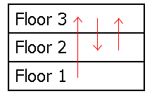
If the generator were placed on the first floor, then every floor would receive power. But if it were placed on the second or third floors instead, then there would be a blackout on the first floor. Note that while a given floor can receive power from many other floors at once, it can only send power to one other floor.
To resolve the blackout concerns, Hilbert decided to have a minimal number of floors rewired. To rewire a floor is to change the floor it sends power to. In the sample diagram above, all possible blackouts can be avoided by rewiring the second floor to send power to the first floor instead of the third floor.
Let F(n) be the sum of the minimum number of floor rewirings needed over all possible power-flow arrangements in a hotel of n floors. For example, F(3) = 6, F(8) = 16276736, and F(100) mod 135707531 = 84326147.
Find F(12344321) mod 135707531.
Consider the following algorithm for sorting a list:
- 1. Starting from the beginning of the list, check each pair of adjacent elements in turn.
- 2. If the elements are out of order:
- a. Move the smallest element of the pair at the beginning of the list.
- b. Restart the process from step 1.
- 3. If all pairs are in order, stop.
For example, the list { 4 1 3 2 } is sorted as follows:
- 4 1 3 2 (4 and 1 are out of order so move 1 to the front of the list)
- 1 4 3 2 (4 and 3 are out of order so move 3 to the front of the list)
- 3 1 4 2 (3 and 1 are out of order so move 1 to the front of the list)
- 1 3 4 2 (4 and 2 are out of order so move 2 to the front of the list)
- 2 1 3 4 (2 and 1 are out of order so move 1 to the front of the list)
- 1 2 3 4 (The list is now sorted)
Let F(L) be the number of times step 2a is executed to sort list L. For example, F({ 4 1 3 2 }) = 5.
Let E(n) be the expected value of F(P) over all permutations P of the integers {1, 2, ..., n}.
You are given E(4) = 3.25 and E(10) = 115.725.
Find E(30). Give your answer rounded to two digits after the decimal point.
Consider the following algorithm for sorting a list:
- 1. Starting from the beginning of the list, check each pair of adjacent elements in turn.
- 2. If the elements are out of order:
- a. Move the smallest element of the pair at the beginning of the list.
- b. Restart the process from step 1.
- 3. If all pairs are in order, stop.
For example, the list { 4 1 3 2 } is sorted as follows:
- 4 1 3 2 (4 and 1 are out of order so move 1 to the front of the list)
- 1 4 3 2 (4 and 3 are out of order so move 3 to the front of the list)
- 3 1 4 2 (3 and 1 are out of order so move 1 to the front of the list)
- 1 3 4 2 (4 and 2 are out of order so move 2 to the front of the list)
- 2 1 3 4 (2 and 1 are out of order so move 1 to the front of the list)
- 1 2 3 4 (The list is now sorted)
Let F(L) be the number of times step 2a is executed to sort list L. For example, F({ 4 1 3 2 }) = 5.
We can list all permutations P of the integers {1, 2, ..., n} in lexicographical order, and assign to each permutation an index In(P) from 1 to n! corresponding to its position in the list.
Let Q(n, k) = min(In(P)) for F(P) = k, the index of the first permutation requiring exactly k steps to sort with First Sort. If there is no permutation for which F(P) = k, then Q(n, k) is undefined.
For n = 4 we have:
| P | I4(P) | F(P) | |
|---|---|---|---|
| {1, 2, 3, 4} | 1 | 0 | Q(4, 0) = 1 |
| {1, 2, 4, 3} | 2 | 4 | Q(4, 4) = 2 |
| {1, 3, 2, 4} | 3 | 2 | Q(4, 2) = 3 |
| {1, 3, 4, 2} | 4 | 2 | |
| {1, 4, 2, 3} | 5 | 6 | Q(4, 6) = 5 |
| {1, 4, 3, 2} | 6 | 4 | |
| {2, 1, 3, 4} | 7 | 1 | Q(4, 1) = 7 |
| {2, 1, 4, 3} | 8 | 5 | Q(4, 5) = 8 |
| {2, 3, 1, 4} | 9 | 1 | |
| {2, 3, 4, 1} | 10 | 1 | |
| {2, 4, 1, 3} | 11 | 5 | |
| {2, 4, 3, 1} | 12 | 3 | Q(4, 3) = 12 |
| {3, 1, 2, 4} | 13 | 3 | |
| {3, 1, 4, 2} | 14 | 3 | |
| {3, 2, 1, 4} | 15 | 2 | |
| {3, 2, 4, 1} | 16 | 2 | |
| {3, 4, 1, 2} | 17 | 3 | |
| {3, 4, 2, 1} | 18 | 2 | |
| {4, 1, 2, 3} | 19 | 7 | Q(4, 7) = 19 |
| {4, 1, 3, 2} | 20 | 5 | |
| {4, 2, 1, 3} | 21 | 6 | |
| {4, 2, 3, 1} | 22 | 4 | |
| {4, 3, 1, 2} | 23 | 4 | |
| {4, 3, 2, 1} | 24 | 3 |
Let R(k) = min(Q(n, k)) over all n for which Q(n, k) is defined.
Find R(1212).
An ellipse E(a, b) is given at its initial position by equation:
The ellipse rolls without slipping along the x axis for
one complete turn. Interestingly, the length of the curve generated by a
focus is independent from the size of the minor axis:

This is not true for the curve generated by the ellipse center. Let C(a,b) be the length of the curve generated by the center of the ellipse as it rolls without slipping for one turn.

You are given C(2, 4) ~ 21.38816906.
Find C(1, 4) + C(3, 4). Give your answer rounded to 8 digits behind the decimal point in the form ab.cdefghij.
Let f(n) be the largest prime factor of n.
Let g(n) = f(n) + f(n+1) + f(n+2) + f(n+3) + f(n+4) + f(n+5) + f(n+6) + f(n+7) + f(n+8), the sum of the largest prime factor of each of nine consecutive numbers starting with n.
Let h(n) be the maximum value of g(k) for 2 k n.
You are given:
- f(100) = 5
- f(101) = 101
- g(100) = 409
- h(100) = 417
- h(109) = 4896292593
Find h(1016).
A secret integer t is selected at random within the range 1 t n.
The goal is to guess the value of t by making repeated guesses, via integer g. After a guess is made, there are three possible outcomes, in which it will be revealed that either g < t, g = t, or g > t. Then the process can repeat as necessary.
Normally, the number of guesses required on average can be minimized with a binary search: Given a lower bound L and upper bound H (initialized to L = 1 and H = n), let g = (L+H)/2 where is the integer floor function. If g = t, the process ends. Otherwise, if g < t, set L = g+1, but if g > t instead, set H = g1. After setting the new bounds, the search process repeats, and ultimately ends once t is found. Even if t can be deduced without searching, assume that a search will be required anyway to confirm the value.
Your friend Bob believes that the standard binary search is not that much better than his randomized variant: Instead of setting g = (L+H)/2, simply let g be a random integer between L and H, inclusive. The rest of the algorithm is the same as the standard binary search. This new search routine will be referred to as a random binary search.
Given that 1 t n for random t, let B(n) be the expected number of guesses needed to find t using the standard binary search, and let R(n) be the expected number of guesses needed to find t using the random binary search. For example, B(6) = 2.33333333 and R(6) = 2.71666667 when rounded to 8 decimal places.
Find R(1010) B(1010) rounded to 8 decimal places.
Let S(n,k,b) represent the number of valid solutions to x1 + x2 + ... + xk n, where 0 xm bm for all 1 m k.
For example, S(14,3,2) = 135, S(200,5,3) = 12949440, and S(1000,10,5) mod 1 000 000 007 = 624839075.
Find (10 k 15 S(10k,k,k)) mod 1 000 000 007.
A 10-substring of a number is a substring of its digits that sum to 10. For example, the 10-substrings of the number 3523014 are:
- 3523014
- 3523014
- 3523014
- 3523014
A number is called 10-substring-friendly if every one of its digits belongs to a 10-substring. For example, 3523014 is 10-substring-friendly, but 28546 is not.
Let T(n) be the number of 10-substring-friendly numbers from 1 to 10n (inclusive).
For example T(2) = 9 and T(5) = 3492.
Find T(1018) mod 1 000 000 007.
Every divisor d of a number n has a complementary divisor n/d.
Let f(n) be the sum of the greatest common divisor of d and n/d over all positive divisors d of n, that is .
Let F be the summatory function of f, that is .
You are given that F(10)=32 and F(1000)=12776.
Find F(1015).
Let g(a,n,b,m) be the smallest non-negative solution x to the system:
x = a mod n
x = b mod m
if such a solution exists, otherwise 0.
E.g. g(2,4,4,6)=10, but g(3,4,4,6)=0.
Let (n) be Euler's totient function.
Let f(n,m)=g((n),n,(m),m)
Find f(n,m) for 1000000 n < m < 1005000
Bob is a manufacturer of nanobots and wants to impress his customers by giving them a ball colored by his new nanobots as a present.
His nanobots can be programmed to select and locate exactly one other bot precisely and, after activation, move towards this bot along the shortest possible path and draw a colored line onto the surface while moving. Placed on a plane, the bots will start to move towards their selected bots in a straight line. In contrast, being placed on a ball, they will start to move along a geodesic as the shortest possible path. However, in both cases, whenever their target moves they will adjust their direction instantaneously to the new shortest possible path. All bots will move at the same speed after their simultaneous activation until each bot reaches its goal.
Now Bob places n bots on the ball (with radius 1) equidistantly on a small circle with radius 0.999 and programs each of them to move toward the next nanobot sitting counterclockwise on that small circle. After activation, the bots move in a sort of spiral until they finally meet at one point on the ball.
Using three bots, Bob finds that every bot will draw a line of length 2.84, resulting in a total length of 8.52 for all three bots, each time rounded to two decimal places. The colored ball looks like this:

In order to show off a little with his presents, Bob decides to use just enough bots to make sure that the line each bot draws is longer than 1000. What is the total length of all lines drawn with this number of bots, rounded to two decimal places?
The Carmichael function (n) is defined as the smallest positive integer m such that am = 1 modulo n for all integers a coprime with n.
For example (8) = 2 and (240) = 4.
Define L(n) as the smallest positive integer m such that (k) n for all k m.
For example, L(6) = 241 and L(100) = 20 174 525 281.
Find L(20 000 000). Give the last 9 digits of your answer.
The classical eight queens puzzle is the well known problem of placing eight chess queens on a 88 chessboard so that no two queens threaten each other. Allowing configurations to reappear in rotated or mirrored form, a total of 92 distinct configurations can be found for eight queens. The general case asks for the number of distinct ways of placing n queens on a nn board, e.g. you can find 2 distinct configurations for n=4.
Lets define a weak queen on a nn board to be a piece which can move any number of squares if moved horizontally, but a maximum of n1w squares if moved vertically or diagonally, 0w<n being the "weakness factor". For example, a weak queen on a nn board with a weakness factor of w=1 located in the bottom row will not be able to threaten any square in the top row as the weak queen would need to move n1 squares vertically or diagonally to get there, but may only move n2 squares in these directions. In contrast, the weak queen is not handicapped horizontally, thus threatening every square in its own row, independently from its current position in that row.
Let Q(n,w) be the number of ways n weak queens with weakness factor w can be placed on a nn board so that no two queens threaten each other. It can be shown, for example, that Q(4,0)=2, Q(4,2)=16 and Q(4,3)=256.
Let .
You are given that S(4)=276 and S(5)=3347.
Find S(14).
Consider the infinite integer sequence S starting with:
S = 1, 1, 2, 1, 3, 2, 4, 1, 5, 3, 6, 2, 7, 8, 4, 9, 1, 10, 11, 5, ...
Circle the first occurrence of each integer.
S = , 1, , 1, , 2, , 1, , 3, , 2, , , 4, , 1, , , 5, ...
The sequence is characterized by the following properties:
- The circled numbers are consecutive integers starting with 1.
- Immediately preceding each non-circled numbers ai, there are exactly ai adjacent circled numbers, where is the floor function.
- If we remove all circled numbers, the remaining numbers form a sequence identical to S, so S is a fractal sequence.
Let T(n) be the sum of the first n elements of the sequence.
You are given T(1) = 1, T(20) = 86, T(103) = 364089 and T(109) = 498676527978348241.
Find T(1018). Give the last 9 digits of your answer.
Let S(n) be the sum of all positive integers m not exceeding n having the following property:
a m+4 a (mod m) for all integers a.
The values of m 100 that satisfy this property are 1, 2, 3, 5 and 21, thus S(100) = 1+2+3+5+21 = 32.
You are given S(106) = 22868117.
Find S(1012).
Let (x) be the prime counting function, i.e. the number of prime numbers less than or equal to x.
For example, (1)=0, (2)=1, (100)=25.
Let T(n,k) be the number of k-tuples (x1,,xk) which satisfy:
1. every xi is a positive integer;
2.
For example T(3,3)=19.
The 19 tuples are (1,1,5), (1,5,1), (5,1,1), (1,1,6), (1,6,1), (6,1,1),
(1,2,3), (1,3,2), (2,1,3), (2,3,1), (3,1,2), (3,2,1), (1,2,4), (1,4,2),
(2,1,4), (2,4,1), (4,1,2), (4,2,1), (2,2,2).
You are given T(10,10) = 869 985 and T(103,103) 578 270 566 (mod 1 004 535 809).
Find T(20 000, 20 000) mod 1 004 535 809.
Consider a positive integer sequence S = (s1, s2, ..., sn).
Let f(S) be the perimeter of the maximum-area quadrilateral whose side lengths are 4 elements (si, sj, sk, sl) of S (all i, j, k, l distinct). If there are many quadrilaterals with the same maximum area, then choose the one with the largest perimeter.
For example, if S = (8, 9, 14, 9, 27), then we can take the elements (9, 14, 9, 27) and form an isosceles trapezium with parallel side lengths 14 and 27 and both leg lengths 9. The area of this quadrilateral is 127.611470879... It can be shown that this is the largest area for any quadrilateral that can be formed using side lengths from S. Therefore, f(S) = 9 + 14 + 9 + 27 = 59.
Let un = 2B(3n) + 3B(2n) + B(n+1), where B(k) is the number of 1 bits of k in base 2.
For example, B(6) = 2, B(10) = 2 and B(15) = 4, and u5 = 24 + 32 + 2 = 27.
Also, let Un be the sequence (u1, u2, ..., un).
For example, U10 = (8, 9, 14, 9, 27, 16, 36, 9, 27, 28).
It can be shown that f(U5) = 59, f(U10) = 118, f(U150) = 3223.
It can also be shown that f(Un) = 234761 for 4 n 150.
Find f(Un) for 4 n 3 000 000.
Start from an ordered list of all integers from 1 to n. Going from left to right, remove the first number and every other number afterward until the end of the list. Repeat the procedure from right to left, removing the right most number and every other number from the numbers left. Continue removing every other numbers, alternating left to right and right to left, until a single number remains.
Starting with n = 9, we have:
1 2 3 4 5 6 7 8 9
2 4 6 8
2 6
6
Let P(n) be the last number left starting with a list of length n.
Let .
You are given P(1)=1, P(9) = 6, P(1000)=510, S(1000)=268271.
Find S(1018) mod 987654321.
A Pythagorean triple consists of three positive integers and satisfying .
The triple is called primitive if and are relatively prime.
Let P() be the number of primitive Pythagorean triples with .
For example P(20) = 3, since there are three triples: (3,4,5), (5,12,13) and (8,15,17).
You are given that P(106) = 159139.
Find P(3141592653589793).
The nthharmonic number Hn is defined as the sum of the multiplicative inverses of the first n positive integers, and can be written as a reduced fraction an/bn.
, with .
Let M(p) be the largest value of n such that bn is not divisible by p.
For example, M(3) = 68 because , b68=2933773379069966367528193600 is not divisible by 3, but all larger harmonic numbers have denominators divisible by 3.
You are given M(7) = 719102.
Find M(137).
Let S(k) be the sum of three or more distinct positive integers having the following properties:
- No value exceeds k.
- The values form a geometric progression.
- The sum is maximal.
S(4) = 4 + 2 + 1 = 7
S(10) = 9 + 6 + 4 = 19
S(12) = 12 + 6 + 3 = 21
S(1000) = 1000 + 900 + 810 + 729 = 3439
Let .
T(1000) = 2268
Find T(1017).
Define function P(n,k) = 1 if n can be written as the sum of k prime numbers (with repetitions allowed), and P(n,k) = 0 otherwise.
For example, P(10,2) = 1 because 10 can be written as either 3 + 7 or 5 + 5, but P(11,2) = 0 because no two primes can sum to 11.
Let S(n) be the sum of all P(i,k) over 1 i,k n.
For example, S(10) = 20, S(100) = 2402, and S(1000) = 248838.
Let F(k) be the kth Fibonacci number (with F(0) = 0 and F(1) = 1).
Find the sum of all S(F(k)) over 3 k 44
Let F(r,c,n) be the number of ways to color a rectangular grid with r rows and c columns using at most n colors such that no two adjacent cells share the same color. Cells that are diagonal to each other are not considered adjacent.
For example, F(2,2,3) = 18, F(2,2,20) = 130340, and F(3,4,6) = 102923670.
Let S(r,c,n) = F(r,c,k).
For example, S(4,4,15) mod 109+7 = 325951319.
Find S(9,10,1112131415) mod 109+7.
The sum of the kth powers of the first n positive integers can be expressed as a polynomial of degree k+1 with rational coefficients, the Faulhaber's Formulas:
,
where ai's are rational coefficients that can be written as reduced fractions pi/qi (if ai = 0, we shall consider qi = 1).
For example,
Define D(k) as the value of q1 for the sum of kth powers (i.e. the denominator of the reduced fraction a1).
Define F(m) as the mth value of k 1 for which D(k) = 20010.
You are given D(4) = 30 (since a1 = -1/30), D(308) = 20010, F(1) = 308, F(10) = 96404.
Find F(105).
Define fk(n) = fk() where fk(0) = 1 and denotes the floor function.
For example, f5(10) = 18, f7(100) = 1003, and f2(103) = 264830889564.
Find fk(1014) mod (109+7).
Assuming that two points are chosen randomly (with uniform distribution) within a rectangle, it is possible to determine the expected value of the distance between these two points.
For example, the expected distance between two random points in a unit square is about 0.521405, while the expected distance between two random points in a rectangle with side lengths 2 and 3 is about 1.317067.
Now we define a hollow square lamina of size n to be an integer sized square with side length n 3 consisting of n2 unit squares from which a rectangle consisting of x y unit squares (1 x,y n - 2) within the original square has been removed.
For n = 3 there exists only one hollow square lamina:

For n = 4 you can find 9 distinct hollow square laminae, allowing shapes to reappear in rotated or mirrored form:
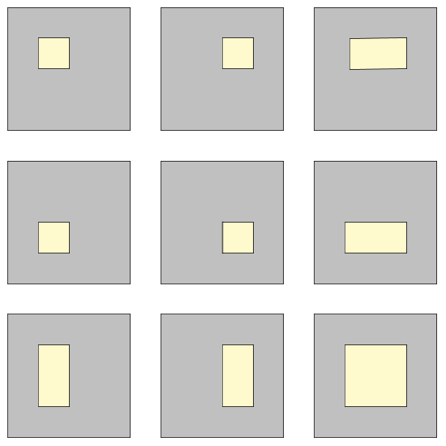
Let S(n) be the sum of the expected distance between two points chosen randomly within each of the possible hollow square laminae of size n. The two points have to lie within the area left after removing the inner rectangle, i.e. the gray-colored areas in the illustrations above.
For example, S(3) = 1.6514 and S(4) = 19.6564, rounded to four digits after the decimal point.
Find S(40) rounded to four digits after the decimal point.
A gozinta chain for n is a sequence {1,a,b,...,n} where each element properly divides the next.
There are eight gozinta chains for 12:
{1,12} ,{1,2,12}, {1,2,4,12}, {1,2,6,12}, {1,3,12}, {1,3,6,12}, {1,4,12} and {1,6,12}.
Let g(n) be the number of gozinta chains for n, so g(12)=8.
g(48)=48 and g(120)=132.
Find the sum of the numbers n not exceeding 1016 for which g(n)=n.
The smallest number m such that 10 divides m! is m=5.
The smallest number m such that 25 divides m! is m=10.
Let s(n) be the smallest number m such that n divides m!.
So s(10)=5 and s(25)=10.
Let S(n) be s(i) for 2 i n.
S(100)=2012.
Find S(108).
Two players are playing a game. There are k piles of stones. When it is his turn a player has to choose a pile and replace it by two piles of stones under the following two conditions:
- Both new piles must have a number of stones more than one and less than the number of stones of the original pile.
- The number of stones of each of the new piles must be a divisor of the number of stones of the original pile.
The first player unable to make a valid move loses.
Let f(n,k) be the number of winning positions for the first player, assuming perfect play, when the game is played with k piles each having between 2 and n stones (inclusively).
f(10,5)=40085.
Find f(107,1012).
Give your answer modulo 987654321.
Let a0, a1, a2, ... be an integer sequence defined by:
- a0 = 1;
- for n 1, an is the sum of the digits of all preceding terms.
The sequence starts with 1, 1, 2, 4, 8, 16, 23, 28, 38, 49, ...
You are given a106 = 31054319.
Find a1015.
Let An be the smallest positive integer satisfying An mod pi = i for all 1 i n, where pi is the
i-th prime.
For example A2 = 5, since this is the smallest positive solution of the system of equations
- A2 mod 2 = 1
- A2 mod 3 = 2
The system of equations for A3 adds another constraint. That is, A3 is the smallest positive solution of
- A3 mod 2 = 1
- A3 mod 3 = 2
- A3 mod 5 = 3
and hence A3 = 23. Similarly, one gets A4 = 53 and A5 = 1523.
Let S(n) be the sum of all primes up to n that divide at least one element in the sequence A.
For example, S(50) = 69 = 5 + 23 + 41, since 5 divides A2, 23 divides A3 and 41 divides A10 = 5765999453. No other prime number up to 50 divides an element in A.
Find S(300000).
Let P(n) be the set of the first n positive integers {1, 2, ..., n}.
Let Q(n) be the set of all the non-empty subsets of P(n).
Let R(n) be the set of all the non-empty subsets of Q(n).
An element X R(n) is a non-empty subset of Q(n), so it is itself a set.
From X we can construct a graph as follows:
- Each element Y X corresponds to a vertex and labeled with Y;
- Two vertices Y1 and Y2 are connected if Y1 Y2 .
For example, X = {{1}, {1,2,3}, {3}, {5,6}, {6,7}} results in the following graph:

This graph has two connected components.
Let C(n,k) be the number of elements of R(n) that have exactly k connected components in their graph.
You are given C(2,1) = 6, C(3,1) = 111, C(4,2) = 486, C(100,10) mod 1 000 000 007 = 728209718.
Find C(104,10) mod 1 000 000 007.
On a chess board, a centaur moves like a king or a knight. The diagram below shows the valid moves of a centaur (represented by an inverted king) on an 8x8 board.
It can be shown that at most n2 non-attacking centaurs can be placed on a board of size 2n2n.
Let C(n) be the number of ways to place n2 centaurs on a 2n2n board so that no centaur attacks another directly.
For example C(1) = 4, C(2) = 25, C(10) = 1477721.
Let Fi be the ith Fibonacci number defined as F1 = F2 = 1 and Fi = Fi-1 + Fi-2 for i > 2.
Find .
The McCarthy 91 function is defined as follows:
We can generalize this definition by abstracting away the constants into new variables:
This way, we have .
Let be the set of fixed points of . That is,
For example, the only fixed point of is . In other words, .
Now, define as the sum of the elements in and let .
For example, and .
Find .
A Gaussian integer is a number z = a + bi where a, b are integers and i2 = -1.
Gaussian integers are a subset of the complex numbers, and the integers are the subset of Gaussian integers for which b = 0.
A Gaussian integer unit is one for which a2 + b2 = 1, i.e. one of 1, i, -1, -i.
Let's define a proper Gaussian integer as one for which a > 0 and b 0.
A Gaussian integer z1 = a1 + b1i is said to be divisible by z2 = a2 + b2i if z3 = a3 + b3i = z1/z2 is a Gaussian integer.
So, z1 is divisible by z2 if and are integers.
For example, 2 is divisible by 1 + i because 2/(1 + i) = 1 - i is a Gaussian integer.
A Gaussian prime is a Gaussian integer that is divisible only by a unit, itself or itself times a unit.
For example, 1 + 2i is a Gaussian prime, because it is only
divisible by 1, i, -1, -i, 1 + 2i,
i(1 + 2i) = i - 2,
-(1 + 2i) = -1 - 2i and
-i(1 + 2i) = 2 - i.
2 is not a Gaussian prime as it is divisible by 1 + i.
A Gaussian integer can be uniquely factored as the product of a unit and proper Gaussian primes.
For example 2 = -i(1 + i)2 and 1 + 3i = (1 + i)(2 + i).
A Gaussian integer is said to be squarefree if its prime factorization does not contain repeated proper Gaussian primes.
So 2 is not squarefree over the Gaussian integers, but 1 + 3i is.
Units and Gaussian primes are squarefree by definition.
Let f(n) be the count of proper squarefree Gaussian integers with a2 + b2 n.
For example f(10) = 7 because 1, 1 + i,
1 + 2i,
1 + 3i = (1 + i)(2 + i),
2 + i, 3 and
3 + i = -i(1 + i)(1 + 2i) are
squarefree, while 2 = -i(1 + i)2 and 2 + 2i = -i(1 + i)3 are not.
You are given f(102) = 54, f(104) = 5218 and f(108) = 52126906.
Find f(1014).
A triangle is cut into four pieces by two straight lines, each starting at one vertex and ending on the opposite edge. This results in forming three smaller triangular pieces, and one quadrilateral. If the original triangle has an integral area, it is often possible to choose cuts such that all of the four pieces also have integral area. For example, the diagram below shows a triangle of area 55 that has been cut in this way.

Representing the areas as a, b, c and d, in the example above, the individual areas are a = 22, b = 8, c = 11 and d = 14. It is also possible to cut a triangle of area 55 such that a = 20, b = 2, c = 24, d = 9.
Define a triangle cutting quadruple (a, b, c, d) as a valid integral division of a triangle, where a is the area of the triangle between the two cut vertices, d is the area of the quadrilateral and b and c are the areas of the two other triangles, with the restriction that b c. The two solutions described above are (22,8,11,14) and (20,2,24,9). These are the only two possible quadruples that have a total area of 55.
Define S(n) as the sum of the area of the uncut triangles represented by all valid quadruples with a+b+c+d n.
For example, S(20) = 259.
Find S(10000).
Let r be the real root of the equation x3 = x2 + 1.
Every positive integer can be written as the sum of distinct increasing powers of r.
If we require the number of terms to be finite and the difference
between any two exponents to be three or more, then the representation
is unique.
For example, 3 = r -10 + r -5 + r -1 + r 2 and 10 = r -10 + r -7 + r 6.
Interestingly, the relation holds for the complex roots of the equation.
Let w(n) be the number of terms in this unique representation of n. Thus w(3) = 4 and w(10) = 3.
More formally, for all positive integers n, we have:
n = bk rk
under the conditions that:
bk is 0 or 1 for all k;
bk + bk+1 + bk+2 1 for all k;
w(n) = bk is finite.
Let S(m) = w(j2).
You are given S(10) = 61 and S(1000) = 19403.
Find S(5 000 000).
An ascent of a column j in a matrix occurs if the value of column j is smaller than the value of column j+1 in all rows.
Let P(k, r, n) be the number of r x n matrices with the following properties:
- The rows are permutations of {1, 2, 3, ... , n}.
- Numbering the first column as 1, a column ascent occurs at column j<n if and only if j is not a multiple of k.
For example, P(1, 2, 3) = 19, P(2, 4, 6) = 65508751 and P(7, 5, 30) mod 1000000123 = 161858102.
Let Q(n) = P(k, n, n).For example, Q(5) = 21879393751 and Q(50) mod 1000000123 = 819573537.
Find Q(50000) mod 1000000123.
Coprime Nim is just like ordinary normal play Nim, but the players may only remove a number of stones from a pile that is coprime with the current size of the pile. Two players remove stones in turn. The player who removes the last stone wins.
Let L(n, k) be the number of losing starting positions for the first player, assuming perfect play, when the game is played with k piles, each having between 1 and n - 1 stones inclusively.
For example, L(5, 2) = 6 since the losing initial
positions are (1, 1), (2, 2), (2, 4), (3, 3),
(4, 2) and (4, 4).
You are also given L(10, 5) = 9964, L(10, 10) = 472400303, L(103, 103) mod 1 000 000 007 = 954021836.
Find L(107, 107) mod 1 000 000 007
Let be the number of pairs of distinct divisors of such that divides .
For we get the following pairs: and . So .
Let be the product of the first prime numbers, so .
Let be the highest integer such that divides .
since is the highest power of 2 that divides S(6)=5.
Let
.
Evaluate .
Construct triangle ABC such that:
- Vertices A, B and C are lattice points inside or on the circle of radius r centered at the origin;
- the triangle contains no other lattice point inside or on its edges;
- the perimeter is maximum.
Let R be the circumradius of triangle ABC and T(r) = R/r.
For r = 5, one possible triangle has vertices (-4,-3), (4,2) and (1,0) with perimeter and circumradius R = , so T(5) =.
You are given T(10) ~ 97.26729 and T(100) ~ 9157.64707.
Find T(107). Give your answer rounded to the nearest integer.
A company specialises in producing large rectangular metal sheets, starting from unit square metal plates. The welding is performed by a range of robots of increasing size. Unfortunately, the programming options of these robots are rather limited. Each one can only process up to 25 identical rectangles of metal, which they can weld along either edge to produce a larger rectangle. The only programmable variables are the number of rectangles to be processed (up to and including 25), and whether to weld the long or short edge.
For example, the first robot could be programmed to weld together 11 raw unit square plates to make a 111 strip. The next could take 10 of these 111 strips, and weld them either to make a longer 1101 strip, or a 1110 rectangle. Many, but not all, possible dimensions of metal sheets can be constructed in this way.
One regular customer has a particularly unusual order. He always demands that the finished product should have an exact area, and that the long side must not be more than 10% larger than the short side. If these requirements can be met in more than one way, in terms of the exact dimensions of the two sides, then he demands that all variants are produced. For example, if he were to ask for metal sheet of area 889200, then there are three final dimensions that can be produced: 900988, 912975 and 936950. The target area of 889200 is the smallest area which can be manufactured in three different variants, within the limitations of the robot welders.
Let M(n) be the minimal area that can be manufactured in exactly n variants with the longer edge not greater than 10% bigger than the shorter edge. Hence M(3) = 889200.
Find .
A line segment of length is randomly split into segments of integer length (). In the sequence given by this split, the segments are then used as consecutive sides of a convex -polygon, formed in such a way that its area is maximal. All of the possibilities for splitting up the initial line segment occur with the same probability.
Let be the expected value of the area that is obtained by this procedure.
For example, for the only possible split of the line segment of length results in three line segments with length , that form an equilateral triangle with an area of . Therefore , rounded to decimal places.
For you can find different possible splits, each of which is composed of three line segments with length and one line segment with length . All of these splits lead to the same maximal quadrilateral with an area of , thus , rounded to decimal places.
Let .
For example, , , and , rounded to decimal places each.
Find , rounded to decimal places.
Let be the sum of the divisors of .
E.g. the divisors of 4 are 1, 2 and 4, so .
The numbers not exceeding 20 such that 7 divides are: 4,12,13 and 20, the sum of these numbers being 49.
Let be the sum of the numbers not exceeding such that divides .
So .
You are given: and .
Find
Adam plays the following game with his birthday cake.
He cuts a piece forming a circular sector of 60 degrees and flips the piece upside down, with the icing on the bottom.
He then rotates the cake by 60 degrees counterclockwise, cuts an adjacent 60 degree piece and flips it upside down.
He keeps repeating this, until after a total of twelve steps, all the icing is back on top.
Amazingly, this works for any piece size, even if the cutting angle is an irrational number: all the icing will be back on top after a finite number of steps.
Now, Adam tries something different: he alternates cutting pieces of size degrees, degrees and degrees. The first piece he cuts has size x and he flips it. The second has size y and he flips it. The third has size z and he flips it. He repeats this with pieces of size x, y and z in that order until all the icing is back on top, and discovers he needs 60 flips altogether.

Let F(a, b, c) be the minimum number of piece flips needed to get all the icing back on top for pieces of size degrees, degrees and degrees.
Let , for integers a, b and c.
You are given that F(9, 10, 11) = 60, F(10, 14, 16) = 506, F(15, 16, 17) = 785232.
You are also given G(11) = 60, G(14) = 58020 and G(17) = 1269260.
Find G(53).